Первый релиз · CEO → проект → непрерывная работа
Получить sourced insight своего проекта и продолжать работу через заменяемых исполнителей.
От первого проекта до работающей команды
Пройдите пользовательский путь, откройте любой экран и проверьте, как действие связано с данными, архитектурой и задачей разработки.
Получить sourced insight своего проекта и продолжать работу через заменяемых исполнителей.
Понять, подходит ли проектный способ работы, и перейти к проверяемому текущему продукту.
Начать с идеи, создать проект и выполнить одну ограниченную полезную задачу без настройки всей организации.
Подключить собственный код без переезда и увидеть один полезный результат в его точном контексте.
За короткий проход понять, где остановились, выбрать следующую работу и сохранить результат.
Найти действительно требующий участия проект и выполнить адресованное действие без потери scope.
Разрешить вопрос с понятными последствиями и убедиться, получила ли работу ответ.
Понять основание решения и при необходимости заменить его, не стирая источник и прошлые действия.
Найти причину наблюдаемого состояния, сопоставив агентскую историю, проектную историю и план без смешения смыслов.
Исправить реальный файл рядом с работающим агентом и не потерять терминал или несохранённый текст.
Проверить используемые знания, исправить устаревшее и увидеть точный контекст следующей работы.
Привязать нужную способность к проекту, явно проверить полномочия и сохранить routines/history при замене.
Получить admission точной версии своей автоматизации без переноса проекта на закрытый runtime.
Дать проекту контролируемый доступ к ресурсу, сохранив account identity и единый отзыв.
Разрешить своему внешнему агенту ограниченные операции Fabric и проверить отзыв независимо от отмены работы.
Принять понятную область ответственности и выполнить одну адресованную задачу без лишнего контекста.
Понять, какие циклы настроены, что наблюдалось и какой исход требует вмешательства.
Закрыть реальную проблему клиента/продукта с правильной маршрутизацией и независимой проверкой результата.
Создать полезный контент из источников, проверить публикацию и получить измеряемую обратную связь.
Эпизод связан с задачей исправления и проверкой, состав исходящих данных виден.
Известны охват зеркала и конфликт импорта; запись проходит через проверку.
Проверен снимок; исходящие действия удержаны, без authority проект остаётся read-only.
Новая привязка имеет проверенный допуск; старый writer не сохраняет права.
Редактировать этапы, отделы, навыки и gates без изменения уже начатого прогона.
Задать цель, критерии, границы автономности и состав задач; принять результат отдельно от выполнения задач.
Различать доступную квоту провайдера, ёмкость автоматизаций, записанные расходы и подписку Estate.
Настроить тему, локаль, поведение пробуждения, хранение и допустимые проектные ограничения.
Настроить адрес и типы уведомлений с явным scope; не потерять обязательство после прочтения события.
Прочитать состояние источников и безопасный журнал; экспортировать проверяемый набор без секретов.
Отделить обратимое архивирование проекта от необратимого удаления данных.
Определить триггер, типизированный граф данных и ограничение полных прогонов.
Наблюдать службы Claude Swap и agentgateway независимо от допуска агента.
Открывать адресованную цитату с видимым адресом, историей навигации и изоляцией.
Показать выбранное изображение или страницу PDF с происхождением и состоянием загрузчика.
Сравнить точную сохранённую ревизию файла с текущим буфером.
Связать идею, отдельное исследование и задачи с точным документом и его ревизией.
Не терять историю при явной смене аккаунта.
Не выбирать аккаунт вручную при каждом приближении лимита.
Создать свой проект и первую задачу, освоить Fabric и доску.
Видеть всех агентов на Mac, давать задачи через Fabric и доверять цепочкам по их трассам.
Что сделал агент и какую работу добавил.
Открыть графКак связана фактическая работа всех агентов.
Открыть графКак должны двигаться задачи к цели.
Открыть графКакое основание привело к решению.
Открыть графКто ждёт вас — затем что происходит, что было, что дальше и что решено.
Fabric · CEO
С возвращением. 4 обязательств ждут вас — старейшее 42 мин; в работе 2 задач; последнее решение — D-08.
Нужен записанный ответ; прочтение не закрывает вопрос.
{
"source": "questions/Q-12",
"rank": 110,
"components": {
"blocking": 40,
"breadth": 10,
"age": 0,
"kind_weight": 15,
"goal_proximity": 20,
"project_weight": 25
},
"observed_at": "2026-09-07T09:42:00+02:00",
"age_minutes": 12
}TTL истёк; это не доказательство остановки процесса. Сначала сверка и fencing, затем release.
{
"source": "lease/LEASE-AT50-1",
"rank": 70,
"components": {
"derived": 45,
"project_weight": 25
},
"observed_at": "2026-09-07T09:42:00+02:00",
"age_minutes": 42
}Цепочка дошла до границы. Решение принимает целевой Product manager.
{
"source": "proposal/P-17",
"rank": 60,
"components": {
"derived": 35,
"project_weight": 25
},
"observed_at": "2026-09-07T09:42:00+02:00",
"age_minutes": null
}Нужен записанный ответ; прочтение не закрывает вопрос.
{
"source": "questions/Q-13",
"rank": 55,
"components": {
"blocking": 0,
"breadth": 0,
"age": 0,
"kind_weight": 10,
"goal_proximity": 20,
"project_weight": 25
},
"observed_at": "2026-09-07T09:42:00+02:00",
"age_minutes": 12
}| Роль / проект | Установлен | Допуск версии | Наблюдение |
|---|
| Измерение | Прочитанное состояние | Источник |
|---|---|---|
| Настроенная роль CEO | fabric · binding revision 1 · active | Конфигурация CEO · прочитан{
"source": "managerPresentation(estate) / declared binding",
"scope": "team-estate",
"coverage": "ready",
"observed_at": "2026-09-07T09:42:00+02:00",
"count": 1,
"recordIds": [
"estate:binding:1"
],
"retainedSnapshot": false
} |
| Наблюдения host | В прочитанной области исполнителей нет | Наблюдения host · прочитан{
"source": "operations.agents + sessions / observed snapshot",
"scope": "team-estate",
"coverage": "ready",
"observed_at": "2026-09-07T09:42:00+02:00",
"count": 0,
"recordIds": [],
"retainedSnapshot": false
} |
Срез 2026-09-07T09:42:00+02:00. Declared binding не означает работающий процесс; наблюдаемый процесс не выдаёт новый допуск.
Управление настроенной рольюЭти переключатели моделируют чтение источника. Записи и права не изменяются; повторное чтение возвращает тот же source.
Отрицательный тест E-14 показал устаревшее разрешение
Открыть источникКаждый SCR имеет визуальный адрес
Старые идентификаторы сохранены. Alias ведёт на общую поверхность с тем же intent; дальние модули явно отмечены. Статус макета не заменяет production coverage.
SCR-01 · Текущий план · alias SCR-30
Сравнить проекты и открыть работу, которой нужно внимание.
Посмотреть макетSCR-02 · Текущий план · alias SCR-27
До активации показать все сущности, которые создаст starter.
Посмотреть макетSCR-03 · Текущий план · alias SCR-31
Понять текущую работу, цель и готовность конфигурации проекта.
Посмотреть макетSCR-04 · Текущий план
Выбрать исполнителя или manager binding и видеть границы каждого.
Посмотреть макетSCR-05 · Дальний горизонт
Найти provider exact revision, который удовлетворяет требуемой capability.
Посмотреть макетSCR-06 · Дальний горизонт
Повторно использовать estate connection с явными project resources и grants.
Посмотреть макетSCR-07 · Дальний горизонт
Проверить владельца external identity и scope до связи с проектом.
Посмотреть макетSCR-08 · Текущий план
Сопоставить прошлые прогоны и повторяемую работу проекта.
Посмотреть макетSCR-09 · Текущий план
Прочитать один admitted TaskRun и его проверяемый исход.
Посмотреть макетSCR-10 · Дальний горизонт
Отделить source evidence от предложения изменить целевой проект.
Посмотреть макетSCR-11 · Дальний горизонт
Записать одно решение целевого PM по предложению другого источника.
Посмотреть макетSCR-12 · Текущий план
Изменить purpose, repos и конфигурацию с явным будущим эффектом.
Посмотреть макетSCR-13 · Дальний горизонт
Дать участнику только адресованную ему очередь и разрешённые виды.
Посмотреть макетSCR-14 · Текущий план
Принять явный team scope либо разрешить адресованное взаимодействие.
Посмотреть макетSCR-15 · Дальний горизонт
Собрать воспроизводимый no-secret bootstrap для exact provider revision.
Посмотреть макетSCR-16 · Дальний горизонт
Проверить совместимость отдельно от estate trust и project authority.
Посмотреть макетSCR-17 · Дальний горизонт
Опубликовать безопасную раскладку admitted views с каноническим порядком.
Посмотреть макетSCR-18 · Дальний горизонт
Довести запрос до safe response с receipt или явной человеческой передачи.
Посмотреть макетSCR-19 · Дальний горизонт
Проследить incident→работа→проверки→release→наблюдаемое восстановление.
Посмотреть макетSCR-20 · Дальний горизонт
Провести идею через источники, проверки, публикацию и измерение результата.
Посмотреть макетSCR-21 · Дальний горизонт
Управлять estate-owned credential bindings с точным разрешённым scope.
Посмотреть макетSCR-22 · Дальний горизонт
Выдать, проверить и отозвать один scoped external access binding.
Посмотреть макетSCR-23 · Текущий план · alias SCR-25
Сохранить старый сценарный вход и открыть действующее окно сессии.
Посмотреть макетSCR-24 · Текущий план
Показать точный эффект, основание и итог одной разрешающей операции.
Посмотреть макетSCR-25 · Текущий план
Работать с реальным transport/PTY отдельно от контекста проекта.
Посмотреть макетSCR-26 · Текущий план
Показать компактные host-owned widgets и их источники.
Посмотреть макетSCR-27 · Текущий план
Выбрать источник системным пикером или URL; Fabric наблюдает проект и выводит sourced insight без обязательного ручного имени/цели/review.
Посмотреть макетSCR-28 · Текущий план
Сохранить файл рядом с работающим агентом без потери позднего ввода.
Посмотреть макетSCR-29 · Внешняя поверхность
Объяснить Fabric как проектную среду и честно показать текущую доступность.
Посмотреть макетSCR-30 · Текущий план
Найти обязательство, понять живую работу и перейти к нужному проекту.
Посмотреть макетSCR-31 · Текущий план
Продолжить работу по цели и видеть task, question, history и evidence вместе.
Посмотреть макетSCR-32 · Текущий план
Держать исходную цель, рабочие notes, blockers и исполнение в контексте одной Task.
Посмотреть макетSCR-33 · Текущий план
Проследить основание, автора и замену решения без выдуманной причинности.
Посмотреть макетSCR-34 · Текущий план
Проверить что хранится, что будет передано агенту и что было передано раньше.
Посмотреть макетSCR-35 · Текущий план
Понять какие инструменты, агенты и полномочия реально доступны здесь.
Посмотреть макетSCR-36 · Текущий план
Показать измеренные результаты и срок наблюдаемой истории estate.
Посмотреть макетSCR-37 · Текущий план
Найти точную сущность среди доступных данных с честной полнотой результата.
Посмотреть макетSCR-38 · Текущий план
Показать полный контракт инструмента и наблюдаемую историю его вызовов.
Посмотреть макетSCR-39 · Текущий план
Сопоставить всех исполнителей, их работу и наблюдаемую историю.
Посмотреть макетSCR-40 · Текущий план
Дать три адресуемые семантики: Agent DID, Project DID и Project SHOULD.
Посмотреть макетSCR-41 · Текущий план
Решить обязательство из одной ранжированной union, не смешивая её с kanban задач.
Посмотреть макетSCR-42 · Текущий план
Разделить обязательства и события, которые можно просто прочитать.
Посмотреть макетSCR-43 · Текущий план
Понять что настроено, что наблюдается и чем закончилось последнее окно.
Посмотреть макетSCR-44 · Текущий план
Отдельный manager intent с estate CEO/project PM, configured vs observed host, certified runner, budget, suspend/replace/handoff receipts. Existing SCN — смежные, новый lifecycle scenario нужен.
Посмотреть макетSCR-45 · Текущий план
Новый intent: categories project/agents/harness/fabric/process; verified distinct count и evidence; decision(kind=decision,topic=process); resolution task + verification window. Refresh дубля не поднимает occurrence threshold.
Посмотреть макетSCR-46 · Текущий план
Отдельный intent с local default-on и outbound activation gate; exact allowlisted payload+transport metadata/retention disclosure; pending suppression/inflight unknown/previous server receipt. Не обещать анонимность только удалением ID; re-enable не отправляет suppressed backlog.
Посмотреть макетSCR-47 · Текущий план
Показать authoritative journal, projection/cache, identity/operational, local preferences и blobs отдельно; export manifest coverage, import plan+digest+conflict; source cursor vs exported cursor. YAML mirror не backup.
Посмотреть макетSCR-48 · Текущий план
Восстановить историю архива в новую Estate того же владельца и открыть её по выбору (ADR-0079).
Посмотреть макетSCR-49 · Дальний горизонт
Редактировать этапы, отделы, навыки и gates без изменения уже начатого прогона.
Посмотреть макетSCR-50 · Дальний горизонт
Задать цель, критерии, границы автономности и состав задач; принять результат отдельно от выполнения задач.
Посмотреть макетSCR-51 · Дальний горизонт
Различать доступную квоту провайдера, ёмкость автоматизаций, записанные расходы и подписку Estate.
Посмотреть макетSCR-52 · Дальний горизонт
Настроить тему, локаль, поведение пробуждения, хранение и допустимые проектные ограничения.
Посмотреть макетSCR-53 · Дальний горизонт
Настроить адрес и типы уведомлений с явным scope; не потерять обязательство после прочтения события.
Посмотреть макетSCR-54 · Дальний горизонт
Прочитать состояние источников и безопасный журнал; экспортировать проверяемый набор без секретов.
Посмотреть макетSCR-55 · Дальний горизонт
Отделить обратимое архивирование проекта от необратимого удаления данных.
Посмотреть макетSCR-56 · Дальний горизонт
Определить триггер, типизированный граф данных и ограничение полных прогонов.
Посмотреть макетSCR-57 · Дальний горизонт
Наблюдать службы Claude Swap и agentgateway независимо от допуска агента.
Посмотреть макетSCR-58 · Дальний горизонт
Открывать адресованную цитату с видимым адресом, историей навигации и изоляцией.
Посмотреть макетSCR-59 · Дальний горизонт
Показать выбранное изображение или страницу PDF с происхождением и состоянием загрузчика.
Посмотреть макетSCR-60 · Дальний горизонт
Сравнить точную сохранённую ревизию файла с текущим буфером.
Посмотреть макетSCR-61 · Дальний горизонт
Связать идею, отдельное исследование и задачи с точным документом и его ревизией.
Посмотреть макетSCR-62 · Текущий план
Аккаунты ИИ с явной областью действия и проверяемым результатом.
Посмотреть макетSCR-63 · Текущий план
Продолжить разговор с другим аккаунтом с явной областью действия и проверяемым результатом.
Посмотреть макетSCR-64 · Текущий план
Один разговор с Fabric с аватара на любой поверхности; сохраняет сказанное и честно показывает результат каждой отправки.
Посмотреть макетSCR-65 · Текущий план
Экспорт и импорт личной истории разговоров одного человека; больше ничего.
Посмотреть макетSCR-66 · Текущий план
Все MCP-серверы на этом Mac отдельно от агентов, по инвентарю Project Observatory.
Посмотреть макетSCR-67 · Текущий план
Один прогон как один граф через вложенные вызовы агентов — чтобы понять и отладить.
Посмотреть макетSCR-68 · Текущий план
Скрипты Fabric, которые он отдаёт как инструменты, — проектные и общие.
Посмотреть макетSCR-69 · Текущий план
Что оптимизатор предлагает для экономии токенов, на основе трасс, — принять или отклонить.
Посмотреть макетSCR-70 · Текущий план
Один раз познакомиться с Fabric: имя и облик, агенты на этом Mac, с чего начать.
Посмотреть макетSCR-71 · Текущий план
Сделать проектом одну выбранную папку после подтверждения того, что Fabric в ней нашёл.
Посмотреть макетSCR-72 · Текущий план
Показать все репозитории в выбранной папке и создать проект на каждый отмеченный.
Посмотреть макетSCR-73 · Текущий план
Начать проект с нуля: в новой папке или как идею.
Посмотреть макетSCR-74 · Текущий план
Перейти к форме агента в проекте, которому он принадлежит.
Посмотреть макетSCR-75 · Текущий план
Объяснить запланированную конвертацию и сегодняшний ручной путь без действий, которые делают вид, что работают.
Посмотреть макетSCR-76 · Текущий план
Видеть, что зарегистрированные на этом Mac агенты могут делать через Fabric, отвечать на их запросы и подключать продукты.
Посмотреть макет| Экран | Визуальный адрес | Смысл |
|---|---|---|
| SCR-30 / SCR-01 | Обзор работы | Найти обязательство, понять живую работу и перейти к нужному проекту. |
| SCR-27 / SCR-02 | Новый проект | Совместимый адрес CEO-first: нет профиля → r0-setup; нет готового исполнителя → r0-provider; готовый CEO → r0-source. Без ручного имени, цели и review prerequisite. |
| SCR-31 / SCR-03 | Проект | Продолжить работу по цели и видеть task, question, history и evidence вместе. |
| SCR-32 | Новая задача | Держать исходную цель, рабочие notes, blockers и исполнение в контексте одной Task. |
| SCR-32 | Условия запуска | Держать исходную цель, рабочие notes, blockers и исполнение в контексте одной Task. |
| SCR-32 | Задача и текущий прогон | Держать исходную цель, рабочие notes, blockers и исполнение в контексте одной Task. |
| SCR-09 | Подробный прогон | Прочитать один admitted TaskRun и его проверяемый исход. |
| SCR-41 | Доска | Решить обязательство из одной ранжированной union, не смешивая её с kanban задач. |
| SCR-41 | Вопрос и ответ | Решить обязательство из одной ранжированной union, не смешивая её с kanban задач. |
| SCR-24 | Полномочие и эффект | Показать точный эффект, основание и итог одной разрешающей операции. |
| SCR-42 | Inbox | Разделить обязательства и события, которые можно просто прочитать. |
| SCR-04 | Команда проекта | Выбрать исполнителя или manager binding и видеть границы каждого. |
| SCR-39 | Все агенты | Сопоставить всех исполнителей, их работу и наблюдаемую историю. |
| SCR-39 | Агент: текущая работа | Сопоставить всех исполнителей, их работу и наблюдаемую историю. |
| SCR-40 | Граф действий агента | Дать три адресуемые семантики: Agent DID, Project DID и Project SHOULD. |
| SCR-40 | Граф истории проекта | Дать три адресуемые семантики: Agent DID, Project DID и Project SHOULD. |
| SCR-40 | Целевой граф плана | Дать три адресуемые семантики: Agent DID, Project DID и Project SHOULD. |
| SCR-33 | История решений | Проследить основание, автора и замену решения без выдуманной причинности. |
| SCR-34 | Память | Проверить что хранится, что будет передано агенту и что было передано раньше. |
| SCR-34 | Контекст прогона | Проверить что хранится, что будет передано агенту и что было передано раньше. |
| SCR-34 | Происхождение факта | Проверить что хранится, что будет передано агенту и что было передано раньше. |
| SCR-45 | Ретроспективы | Новый intent: categories project/agents/harness/fabric/process; verified distinct count и evidence; decision(kind=decision,topic=process); resolution task + verification window. Refresh дубля не поднимает occurrence threshold. |
| SCR-46 | Улучшение Fabric | Отдельный intent с local default-on и outbound activation gate; exact allowlisted payload+transport metadata/retention disclosure; pending suppression/inflight unknown/previous server receipt. Не обещать анонимность только удалением ID; re-enable не отправляет suppressed backlog. |
| SCR-47 | Хранение и синхронизация | Показать authoritative journal, projection/cache, identity/operational, local preferences и blobs отдельно; export manifest coverage, import plan+digest+conflict; source cursor vs exported cursor. YAML mirror не backup. |
| SCR-48 | Восстановление | Восстановить историю архива в новую Estate того же владельца и открыть её по выбору (ADR-0079). |
| SCR-05 | Выбор исполнителя | Найти provider exact revision, который удовлетворяет требуемой capability. |
| SCR-44 | Жизненный цикл manager | Отдельный manager intent с estate CEO/project PM, configured vs observed host, certified runner, budget, suspend/replace/handoff receipts. Existing SCN — смежные, новый lifecycle scenario нужен. |
| SCR-36 | Профиль пространства | Показать измеренные результаты и срок наблюдаемой истории estate. |
| SCR-16 | Совместимость и допуск | Проверить совместимость отдельно от estate trust и project authority. |
| SCR-15 | Свой агент: адаптация | Собрать воспроизводимый no-secret bootstrap для exact provider revision. |
| SCR-06 | Подключения | Повторно использовать estate connection с явными project resources и grants. |
| SCR-07 | Подключить аккаунт | Проверить владельца external identity и scope до связи с проектом. |
| SCR-21 | MCP-доступ | Управлять estate-owned credential bindings с точным разрешённым scope. |
| SCR-22 | Ограниченный доступ | Выдать, проверить и отозвать один scoped external access binding. |
| SCR-43 | Циклы | Понять что настроено, что наблюдается и чем закончилось последнее окно. |
| SCR-08 | Расписание и прогоны | Сопоставить прошлые прогоны и повторяемую работу проекта. |
| SCR-10 | Результаты и находки | Отделить source evidence от предложения изменить целевой проект. |
| SCR-11 | Проверка результата | Записать одно решение целевого PM по предложению другого источника. |
| SCR-12 | Настройки проекта | Изменить purpose, repos и конфигурацию с явным будущим эффектом. |
| SCR-13 | Рабочая среда роли | Дать участнику только адресованную ему очередь и разрешённые виды. |
| SCR-14 | Команда и доступ | Принять явный team scope либо разрешить адресованное взаимодействие. |
| SCR-14 | Принятие приглашения | Принять явный team scope либо разрешить адресованное взаимодействие. |
| SCR-17 | Редактор среды роли | Опубликовать безопасную раскладку admitted views с каноническим порядком. |
| SCR-26 | Рабочая область | Показать компактные host-owned widgets и их источники. |
| SCR-28 | Редактор файла | Сохранить файл рядом с работающим агентом без потери позднего ввода. |
| SCR-25 / SCR-23 | Сессия агента | Работать с реальным transport/PTY отдельно от контекста проекта. |
| SCR-35 | Harness проекта | Понять какие инструменты, агенты и полномочия реально доступны здесь. |
| SCR-38 | Контракт инструмента | Показать полный контракт инструмента и наблюдаемую историю его вызовов. |
| SCR-37 | Поиск | Найти точную сущность среди доступных данных с честной полнотой результата. |
| SCR-18 | Поддержка | Довести запрос до safe response с receipt или явной человеческой передачи. |
| SCR-19 | Работа и выпуск | Проследить incident→работа→проверки→release→наблюдаемое восстановление. |
| SCR-20 | Контентный цикл | Провести идею через источники, проверки, публикацию и измерение результата. |
| SCR-29 | Публичный вход | Объяснить Fabric как проектную среду и честно показать текущую доступность. |
| SCR-49 | Маршрут работы | Редактировать этапы, навыки и gates с новой неизменяемой версией и закреплением начатых прогонов. |
| SCR-50 | Цели проекта | Определить критерии и автономность цели, связать задачу и отдельно принять результат. |
| SCR-51 | Использование | Сопоставить квоту аккаунта, ёмкость автоматизаций, измеренные расходы и отдельное право Estate. |
| SCR-52 | Настройки Estate | Сохранить глобальные предпочтения, доверие Estate и сужающий проектный override. |
| SCR-53 | Уведомления и Telegram | Связать личность, настроить маршруты и выключение событий с явным раскрытием. |
| SCR-11 | Предложение целевому PM | Разрешить Proposal другого проекта одним решением PM с сохранённым источником и продолжением работы. |
| SCR-50 | Цели проекта | Определить критерии и автономность цели, связать задачу и отдельно принять результат. |
| SCR-52 / SCR-76 | Настройки Estate | Сохранить глобальные предпочтения, доверие Estate и сужающий проектный override. |
| SCR-54 | Диагностика | Прочитать состояние источников и безопасный журнал; экспортировать проверяемый набор без секретов. |
| SCR-55 | Архив и удаление | Отделить обратимое архивирование проекта от необратимого удаления данных. |
| SCR-56 | Редактор цикла | Определить триггер, типизированный граф данных и ограничение полных прогонов. |
| SCR-57 | Сервисные терминалы | Наблюдать службы Claude Swap и agentgateway независимо от допуска агента. |
| SCR-58 | Встроенный браузер | Открывать адресованную цитату с видимым адресом, историей навигации и изоляцией. |
| SCR-59 | Предпросмотр медиа | Показать выбранное изображение или страницу PDF с происхождением и состоянием загрузчика. |
| SCR-60 | Diff выбранного файла | Сравнить точную сохранённую ревизию файла с текущим буфером. |
| SCR-61 | Документ и происхождение задач | Связать идею, отдельное исследование и задачи с точным документом и его ревизией. |
| SCR-31 | Завершённые задачи | Прочитать завершённые и отменённые задачи; повторение создаёт новую связанную запись. |
| SCR-62 | Аккаунты ИИ | Аккаунты ИИ с явной областью действия и проверяемым результатом. |
| SCR-63 | Продолжить разговор с другим аккаунтом | Продолжить разговор с другим аккаунтом с явной областью действия и проверяемым результатом. |
| SCR-30 / SCR-01 | Fabric · главный экран запуска | Компактный профиль и интерактивный ритм рядом с возвратом; независимые колонки доски/проектов и Live. |
| SCR-41 | Доска · ежедневный разбор | Решить обязательство из одной ранжированной union, не смешивая её с kanban задач. |
| SCR-31 / SCR-03 | Проект · возврат в контекст | Продолжить работу по цели и видеть task, question, history и evidence вместе. |
| SCR-39 | Агент / IDE · полный контекст | Сопоставить всех исполнителей, их работу и наблюдаемую историю. |
| SCR-40 | Планирование · раскрытие уровней | Дать три адресуемые семантики: Agent DID, Project DID и Project SHOULD. |
| SCR-30 / SCR-01 | Карта экранов · первый запуск | Найти обязательство, понять живую работу и перейти к нужному проекту. |
| SCR-36 | Ваш Fabric · знакомство и облик | Сгенерировать персональный цветной облик и сохранить его независимо от провайдера. |
| SCR-42 | Пульс · активность и живые наблюдения | Отличить свежесть наблюдения от результата и перейти к событиям дня. |
| SCR-42 | Релизы · состав и подтверждение | Прочитать состав, среду и доказательство релиза без смешения публикации и проверки. |
| SCR-27 | Первый проект · пошаговая настройка | Совместимый адрес CEO-first: нет профиля → r0-setup; нет готового исполнителя → r0-provider; готовый CEO → r0-source. Без ручного имени, цели и review prerequisite. |
| SCR-31 | Знакомство на своём проекте | Знакомство на своём проекте |
| SCR-44 | Fabric · руководство и примеры | Fabric · руководство и примеры |
| SCR-30 | Карта интерфейса · главное и детали | Изучить композицию всех экранов по задачам оператора, раскрыть критерии и перейти в макет. |
| SCR-36 | Ваш Fabric | Принять имя и цветной аватар по умолчанию или настроить их без обязательной косметической работы. |
| SCR-05 | Исполнитель Fabric | Выбрать Claude Code или Codex и подтвердить установку, вход и возможности перед сканированием. |
| SCR-27 | Выбрать проект | Выбрать папку проекта или набор из общей папки; имя и контекст соберёт Fabric. |
| SCR-27 | Fabric знакомится с проектом | Выбрать несколько найденных источников, назначить главный и получить обзор одного проекта. |
| SCR-30 | Fabric · сейчас | Увидеть доску, проекты и работу агентов по всем проектам; перейти в точную сессию и быстро вернуться в контекст. |
| SCR-31 | Проект · контекст и следующий шаг | Понять цель, актуальные вопросы и работу команды проекта; открыть точную сессию, обсудить задачу или уточнить обзор. |
| SCR-32 | Работа · агент и продолжение | Остановить исполнителя, проверить остановку и продолжить в прежней либо новой сессии выбранного провайдера. |
| SCR-41 | Доска внимания | Открыть разговор по вопросу → принять структурированный итог → запустить задачу → разобрать результат в том же вопросе. |
| SCR-40 | План проекта | Обсудить цель с Fabric; видеть записанный план и доступные действия без обязательной формы задачи. |
| SCR-52 | Настройки Fabric | Изменить образ и стиль Fabric, исполнителя, главный источник и границы связанных материалов. |
| SCR-30 | Первый релиз · карта экранов | Изучить весь первый релиз и перейти к конкретному экрану, состоянию и восстановлению. |
| SCR-44 | Знакомство по ходу работы | Изучить следующий полезный приём на своём проекте, пропустить урок или вернуться к нему. |
| SCR-34 | Память и сессии | Найти прошлую работу, проверить источник и добавить его в разговор Fabric. |
| SCR-64 | Разговор с Fabric | Один разговор с Fabric с аватара на любой поверхности; сохраняет сказанное и честно показывает результат каждой отправки. |
| SCR-65 | Личная история | Экспорт и импорт личной истории разговоров одного человека; больше ничего. |
| SCR-76 | Доступ агентов | Что зарегистрированные на этом Mac агенты могут делать через Fabric, какие запросы ждут ответа и какие продукты подключены (ADR-0115). |
| SCR-66 | MCP-серверы | Все MCP-серверы на этом Mac отдельно от агентов, по инвентарю Project Observatory. |
| SCR-67 | Трасса прогона | Один прогон как один граф через вложенные вызовы агентов — чтобы понять и отладить. |
| SCR-68 | Инструменты Fabric | Скрипты Fabric, которые он отдаёт как инструменты, — проектные и общие. |
| SCR-69 | Предложения оптимизатора | Что оптимизатор предлагает для экономии токенов, на основе трасс, — принять или отклонить. |
| SCR-70 | Знакомство | Один раз познакомиться с Fabric: имя и облик, агенты на этом Mac, с чего начать. |
| SCR-71 | Добавить проект | Сделать проектом одну выбранную папку. |
| SCR-72 | Сканировать папку проектов | Отметить репозитории, каждый станет проектом. |
| SCR-73 | Новый проект | Начать проект в новой папке или как идею. |
| SCR-74 | Новый агент | Выбрать проект агента. |
| SCR-75 | Конвертировать агента | Запланированная конвертация и сегодняшний ручной путь. |
Исследованный код → влияние → решение
Чтение исходников, не запуск живой системы. Приоритет отражает риск и область воздействия; существующие дефекты не переименованы в новые. Исправленные здесь документы отмечены отдельно от открытой реализации.
Предыдущий полный CI остановился на P21: anon SELECT grants для шести таблиц. Это отдельная проблема S07; по одному ACL mismatch нельзя делать вывод о чтении строк через RLS.
Квитанция CI на 9133739Сейчас: Shell на первом render возвращает booting при sessionWindowId=undefined. После meta.info главный window проходит к useEffect и useRef, которые на первом render не вызывались.
Влияние: Первый вход может остановиться на React hook-order error вместо estate/onboarding. Это source-механизм уже учтённого S01; этой проверкой приложение не запускалось.
Решение: Вынести ветви окна в дочерние компоненты либо объявить все hooks Shell до условных returns; каждый тип окна сохраняет собственную загрузку и доступный retry.
if (sessionWindowId === undefined)
return error ? <BootFailure raw={error} onRetry={() => window.location.reload()} /> : <div className="booting" />
if (fileWindowPath) return <EditorWindow filePath={fileWindowPath} /> // M111 — written on every change, not on quit. Saved only at the end, a crash
// after closing four of five tabs would bring all five back.
useEffect(() => {Сейчас: Когда tasks уже прочитаны и rows.length=0, BoardSection возвращает только EmptyState. Поле fileIdea вложено в Board/backlog-column альтернативной ветки.
Влияние: Новый проект не позволяет записать первую идею без предварительного запуска платной/нативной сессии либо внешнего создания task. Воронка «сначала план, потом работа» замыкается на непустой Board.
Решение: Отрисовывать intent form первой идеи независимо от количества cards; пустой backlog предлагает create без запуска. Сохранить различие File idea и Run agent.
{read && rows.length === 0 ? (
<EmptyState read={read}>{t('board.empty')}</EmptyState>
) : ( {/* M134 — the operator's own door onto the board. It is HERE
rather than beside the run field because the two acts are
different: that one starts a session, this one records a ipcMain.handle(IPC.tasksFileIdea, async (_e, projectId: string, text: string): Promise<TaskRow> => {
const verdict = readIdea({ text })
if (!verdict.ok) throw new Error(verdict.reason)Сейчас: После async write EditorWindow вычисляет dirty по актуальному buffer, но setFile записывает отправленный content. Effect зависит от file, dispose текущего editor и создаёт новый с file.content.
Влияние: Текст, введённый во время сохранения, исчезает из editor, хотя helper afterSave правильно заметил, что он не был сохранён. Отдельный тест helper не доказывает сохранность реального Monaco model.
Решение: Стабильный Monaco model на canonical file path; persisted baseline/hash обновлять отдельно от live buffer. Save receipt относится к отправленному snapshot, не заменяет текущую model.
useEffect(() => {
if (!file || !host.current || conflict) return
defineThemes() if (result.ok) {
// UX-04. `content` was read BEFORE the round-trip, so anything typed
// while it was in flight is NOT in what was just written. Declaring theСейчас: TaskPage при смене taskId не обнуляет detail/note, не отбрасывает старый async load и использует textarea defaultValue со стабильным key секции. Запись brief/note адресуется текущему prop taskId.
Влияние: При быстром переходе A→B экран может показывать данные A, а blur или Add note записывает их в B; поздний ответ A может снова заменить detail. Это риск тихой порчи контекста задач.
Решение: Resource generation и editable draft key=(project_id,task_id); detail обязан совпадать с mutation target. На loading нового ID mutations отключены. Управляемые section values/CAS revision; note completion очищает только отправленный draft.
const load = async (): Promise<void> => {
try {
setDetail(await window.fabric.tasks.detail(taskId)) const saveBrief = async (section: 'what' | 'why' | 'expected', body: string): Promise<void> => {
const current =
section === 'what' {sections.map((section) => (
<Field
key={section.key} <div className="project-columns">
<div className="col-main">
{openTask ? (Сейчас: BoardSection.apply ставит moving[task.id]=to до await. Rollback выполняется только когда Promise успешно вернул {ok:false}; reject/throw не перехватывается. onPick вызывает void apply.
Влияние: При DB/IPC ошибке карточка может остаться в «Готово»/другой колонке, хотя persisted task не менялась. Последующие refresh не удаляют moving override, если реальный status отличается от optimistic target.
Решение: Обрабатывать refused, conflict, unavailable и unknown через один mutation controller. Known failure снимает override и показывает локальный retry; unknown удерживает pending/in-doubt до lookup command_id, а не считает успехом.
useEffect(() => {
if (!tasks || Object.keys(moving).length === 0) return
const settled = Object.fromEntries( const apply = async (task: TaskRow, to: TaskState, why?: string): Promise<void> => {
setProblem(null)
setMoving((m) => ({ ...m, [task.id]: to })) const onPick = (task: TaskRow, to: string): void => {
if (to === 'cancelled') {
setReason('') ipcMain.handle(IPC.tasksMove, async (_e, taskId: string, to: TaskState): Promise<MoveResult> => {
const { data: task } = await db
.from('project_tasks')Сейчас: Реестр AGENTS содержит claude-code/codex/shell. UI строит label через условие claude-code ? Claude Code : Terminal, поэтому Codex и shell получают одинаковое имя.
Влияние: Оператор не может уверенно выбрать второго исполнителя или понять, кого открыл. В onboarding/Run/Session name не соответствует фактическому provider.
Решение: Показывать label/description/capabilities из registry по ID; неизвестный ID имеет явный fallback, а не alias shell. Availability executable и Fabric integration admission — разные статусы.
{
// A THIRD AGENT, added to test the claim that adding one is a single row.
// It is not, and this row says exactly how far it gets: codex runs here as <Toolbar>
<select value={agent} onChange={(e) => setAgent(e.target.value)}>
{options.map((o) => ( return (
<div className="session-window">
<header className="session-head"> <Field label={t('onboarding.defaultAgent')} hint={t('onboarding.defaultAgentHint')}>
{(id) => (
<select id={id} value={agent} onChange={(e) => patch({ agent: e.target.value })}>Сейчас: startTask пишет task.started до spawn; доставка основана на quiet/deadline, без semantic ack. closeTaskForSession пишет task.finished при любом exit code; projectors нормализуют его в done.
Влияние: Задача выглядит работающей до подтверждения получения инструкции и может оказаться «Готово» после crash/ненулевого exit, даже без результата и проверки. Это ломает доверие к мониторингу и дальнейшим цепочкам.
Решение: S04 admission→TaskRun/outbox; M103 matching delivery ack; Runtime ended отдельно от Task review/done. Ошибка spawn после admission закрывает TaskRun failed_start, не создаёт accepted result. Task done только разрешённый business command.
const startTask = async (input: {
projectId: string
instruction: string deliverWhenReady(sessionId: string, instruction: string): void {
const session = this.sessions.get(sessionId)
if (!session || !instruction.trim()) returnasync function closeTaskForSession(sessionId: string, exitCode: number | null): Promise<void> {
const taskId = taskBySession.get(sessionId)
if (!taskId) return when 'task.started@1' then
update project_tasks set status = 'running' where id = (e.payload->>'id')::uuid and status = 'open';
when 'task.finished@1' thenСейчас: Routine tick читает все enabled routines без estate predicate; цепочки также читаются глобально. readProject/binding lookup принимают ID без scope. FileRoots состоит из всех project_repos и общий для окон.
Влияние: Наличие второго estate/test fixture или чужого project ID может привести к запуску и доступу вне выбранного проекта. Это подтверждённый source-boundary gap; текущая утечка/чужой реальный запуск здесь не наблюдались.
Решение: S02 trusted VerifiedContext для окна/agent/scheduler; scoped repository ports, composite ownership checks; FilePort scope+root_ref. Fixture estates никогда не участвуют в чужом scheduler. Project target из payload не даёт полномочий.
export function createRoutineTick(deps: RoutineTickDeps): RoutineTick {
let ticking = false
const tick = async (): Promise<void> => {
export function createChainAdvance(deps: ChainDeps): () => Promise<void> {
let running = falseasync function refreshFileRoots(): Promise<void> {
const { data, error } = await db.from('project_repos').select('path')
if (error) { const created = UUID.test(input.optionId)
? (
await dbipcMain.handle(IPC.filesRead, (_e, file: string) => readFile(file, fileRoots))
Сейчас: createChainAdvance проходит каждую follows-связь отдельно. Первый завершённый predecessor достаточен; startTask получает brief без existing task ID и создаёт randomUUID. Исходный follower остаётся backlog.
Влияние: Одна задача плана порождает повторные копии на следующем tick и может стартовать до остальных зависимостей. На Board копии расходуют квоту, а исходная задача выглядит ожидающей.
Решение: Atomic startExistingTask/admission для follower; ALL incoming execution dependencies и named outputs; pinned input refs; один live TaskRun/lease. Повтор того же eligibility key возвращает прежний receipt.
for (const link of links) {
const follower = waiting.get(link.task_id as string)
const brief = fillBrief(
(follower.brief_what as string | null) ?? (follower.instruction as string), if (!instruction) throw new Error('a task needs an instruction')
const project = await readProject(input.projectId)
const cwd = project.repo_path ?? app.getPath('home')Сейчас: apply_questions хранит все связи в question_blocks, но scalar blocked_by только первого вопроса. Answer/withdraw этого вопроса устанавливает scalar null и не выбирает следующий open blocker.
Влияние: Если существующий projector получает два вопроса на одну task, ответ на первый делает совместимый task view похожим на разблокированный. Настоящая оставшаяся потребность скрывается, а будущий consumer scalar сможет запустить работу раньше времени.
Решение: S06 canonical blocker set по open questions; scalar только derived earliest-open. Answer+decision+block resolution+continuation intent одной transaction. Запуск проверяет весь набор, не scalar.
-- Block every task the question names, and record the link. `blocked_by`
-- carries the FIRST question to block a task; the join table carries all.
for t in select jsonb_array_elements_text(coalesce(e.payload->'blocks','[]'::jsonb))::uuid when 'question.answered@1' then
update questions
set status = 'answered',Сейчас: Таблицы questions/question_blocks уже есть, но readAttention собирает review/expired lease/policy refusal/proposal, а AttentionPanel показывает лишь их действия. Рабочего Question detail→atomic answer→delivery receipt в renderer пока нет.
Влияние: Пользователь не может пройти обещанную замкнутую воронку: увидеть вопрос, понять варианты, ответить и проверить, что именно эта работа получила ответ. Это запланированная недостроенная capability, не регрессия уже shipped Question UI.
Решение: M149 agent ask/check; M151 единая Board query; M152.commit atomic answer/decision; M152.continue адресованная доставка с ack. После ответа detail остаётся достижимым и показывает раздельно committed/delivery/remaining blockers.
const readAttention = async (): Promise<AttentionItem[]> => {
const [reviews, expired, refusals, projects, proposals] = await Promise.all([
db item.proposal ? (
// M68 — the same shape as a grantable item, and for the same
// reason: two sibling controls in a PLAIN row, because a button when 'question.asked@1' then
insert into questions (id, estate_id, project_id, task_id, text, why_blocked,
options, kind, about, asked_by_kind, asked_by_id,Сейчас: Текущий TaskRow содержит session_id, а AgentClaim — stage/step/ofSteps на сессию. fabric_stage_report пишет scalar claim; target TaskRun/immutable plan revision/step verification producer ещё отсутствует.
Влияние: Нельзя выбрать конкретную явную итерацию, увидеть полный состав её шагов и отделить выполненный claim от проверки. Существующий step/ofSteps нельзя превратить в такой граф без новых источников.
Решение: M188 TaskRun+immutable PlanRevision+step claims+verification+ExecutionSnapshot; M189 один read DTO для preview/full view; M190 separate DID/SHOULD. Новая явная evaluation iteration — новый TaskRun и fresh step statuses; provider internal turns не угадывать.
export interface TaskRow {
id: string
project_id: string/** What an agent has said about itself. Kept apart from `TerminalSession`,
* which is what Fabric observed — the two are never merged into one status. */
export interface AgentClaim { server.registerTool(
'fabric_stage_report',
{Сейчас: AttentionPanel прямо заканчивается noModel; ProfileSection — summary и пустой portrait. AGENTS описывает interactive runners, Codex connectsToSurface=false. Это не RoleSlot/admitted ManagerInvocation/certified external manager.
Влияние: Наличие CLI или окна сессии пока не означает, что пользователь может заменить встроенный judgement loop на Claude Code/другого с сохранением Board, полномочий и continuation. Показать общий working-manager picker на этих источниках было бы ложным обещанием.
Решение: M194 RoleSlot ceo/estate или product-manager/project; binding revision+epoch; одна active invocation lease; M175 builtin adapter и отдельно certified native adapter. Picker показывает per-capability disabled reason, host availability, handoff receipts; app-off honest unavailable.
// There is no conversation here and the panel says so. What the mockup's CEO // actually did — name what is waiting and offer the act that resolves it — // needs no model, and that half is real. The other half waits for one, and what
<p className="muted">{t('ceo.noModel')}</p> <h3 className="task-history-head">{t('profile.portrait')}</h3>
<p className="muted">{t('profile.portraitEmpty')}</p> {
// A THIRD AGENT, added to test the claim that adding one is a single row.
// It is not, and this row says exactly how far it gets: codex runs here asСейчас: MemoryOverviewSection ожидает overview и misses через один Promise.all. Один reject не даёт установить даже успешный overview; после прошлой загрузки старые данные остаются без freshness/error поля на самой панели.
Влияние: Пользователь видит вечное чтение либо старые цифры памяти, хотя один store доступен, а другой сломан. Общий error banner не объясняет, какая часть memory view актуальна.
Решение: Разделить независимые source reads/settlement и вернуть общий ReadEnvelope с per-source status/as_of/at_seq. Сохранять stale snapshot; affected section имеет retry и coverage, остальные остаются полезны.
useEffect(() => {
let alive = true <Panel id="sec-memory-overview" title={t('memory.overview')}>
<p className="muted">{t('memory.overviewLede')}</p>
{overview && !fullyRead(overview) && <Banner tone="warn">{t('memory.partial')}</Banner>} ipcMain.handle(IPC.memoryOverview, async (_e, projectId: string): Promise<MemoryOverview> => {
const count = async (
table: string, ipcMain.handle(
IPC.memoryMisses,
async (_e, projectId: string, limit?: number): Promise<MemoryMiss[]> => {Сейчас: compileContextPack destructures только data из четырёх DB reads, игнорируя error. sessionBundle ловит compiler exception, пишет console.error и продолжает запуск без context.md.
Влияние: Агент может начать с неполным контекстом/без памяти, а пользователь видит обычный старт. Отсутствие фактов выглядит как отсутствие знаний, хотя источник был недоступен; результат нельзя оценить по полноте входных данных.
Решение: Compiler возвращает per-source readiness и actual pack receipt, budgets/omissions/compiler version. Admission profile задаёт required vs optional sources: required unavailable блокирует paid launch, optional даёт явный degraded outcome. Preview будущего pack и реально переданный pack различаются.
export async function compileContextPack(input: ContextPackInput): Promise<ContextPack> {
const { db, projectId } = input
const budget = input.budget ?? DEFAULT_BUDGET const head: string[] = [
`# What this project already knows`,
``, // The context pack sits beside the credential, in the app's data directory
// and never in the repository — the same rule and for the same reason: it
// is Fabric's material, not the project's, and a pack committed to a repo context: async (sessionId, projectId, taskId) => {
const task = taskId
? await dbСейчас: workspaceChoose возвращает repo.ok, но независимо от него записывает workspace.git=yes. EstateHome.answer игнорирует результат act и перечитывает settings; ошибка записывается в busy и сразу очищается finally.
Влияние: После сбоя Git исчезает onboarding-предложение workspace, хотя репозитория истории нет. Пользователь теряет понятный recovery и может принять config mirror за полноценный backup/sync.
Решение: Workspace result имеет declared path, actual repo state, last successful mirror/check receipt, independent problem. git yes только после подтверждения; separate persistent error/retry. Mirror coverage явно не complete restore/archive.
ipcMain.handle(IPC.workspaceChoose, async () => {
const picked = await dialog.showOpenDialog({
properties: ['openDirectory', 'createDirectory'], useEffect(() => {
window.fabric.workspace.state().then(setWs).catch(() => setWs({ git: 'declined' }))
}, []) {/* M118 — the question, asked once. There is no "later": declining IS
later, it is recorded, and it can be changed. A banner with a dismiss
would turn "nobody has been asked" into a hidden state, which is theСейчас: SearchPanel получает hit.id и group.store, но onClick отправляет только projectId. Exact task/fact/transcript selection и search back-target не передаются.
Влияние: После нахождения нужной задачи/факта приходится искать его заново внутри проекта. Это обрывает воронку «нашёл → проверил источник → вернулся к результатам».
Решение: Typed resource Ref из hit плюс route selection/back-target. Scope и query/filter сохраняются; missing/denied target объясняется локально, не подменяется открытием произвольного проекта.
{group.hits.map((hit) => (
<Row
key={`${group.store}:${hit.id}`}export function SearchPanel({
onClose,
onOpenProject,Сейчас: Notifier использует process-local told Set. До n.show item уже отмечается told. Click лишь show/focus mainWindow, не передаёт item/project/task. После restart dedup забывается.
Влияние: Клик не приводит к тому, ради чего пришло уведомление; прежнее ожидание может звонить снова после restart. Нельзя различить «доставлено», «просмотрено человеком» и «решено бизнес-командой».
Решение: M185 Inbox: happened/actionable отдельно; durable notification occurrence/attempt и per-person seen cursor. Deep link на exact item/TaskRun; notification failure не помечает seen/resolved; recurrence имеет новую occurrence.
const told = new Set<string>()
const NOTIFY_MS = 60_000
const notifier = setInterval(() => { if (!d.notify) return
for (const id of d.ids) told.add(id)
const n = new Notification({ title: d.title, body: d.body })/** The task an item is about, when it is about one. The id namespace prefixes
* exist for exactly this: a row can say which kind it came from. */
function taskIdOf(item: AttentionItem): string | null {Сейчас: ProjectHeader useEffect на config_revision безусловно setName/setPurpose/setAgent/setServers. Save сначала projects.update, потом отдельный updateSettings, без expected revision/единого commit.
Влияние: Фоновое изменение проекта может стереть несохранённый выбор MCP/агента. Если второй write падает, часть настроек уже сохранена, а пользователь получает одну ошибку и не видит точный diff результата.
Решение: Редактируемый draft+baseRevision отдельны от incoming project snapshot. Одна updateProjectConfig Command атомарно меняет поля; conflict показывает newer diff и сохраняет draft. Explicit per-launch effect/policy scope не расширять update settings side effect.
const t = useT() const [editing, setEditing] = useState(false) const [name, setName] = useState(project.name)
const save = async (): Promise<void> => {
setBusy(true)
try { ipcMain.handle(
IPC.projectsUpdateSettings,
async (_e, input: {Сейчас: harnessRead принимает projectId, но grants counts фильтрует лишь по estate и превращает count:null в 0. Servers возвращает только fabric endpoint; фактический session bundle может добавлять declared gateway servers. Descriptor обещает exactly one server.
Влияние: Экран «что могут агенты этого проекта» показывает полномочия всей estate, может скрыть ошибку чтения как ноль и не перечисляет фактический granted MCP reach. По такому экрану нельзя проверить разрешения и различить scoped MCP от native tool enforcement.
Решение: Project Harness читает pinned binding/capability/profile/current permission envelope и фактический bundle manifest. Grants scoped by exact project/action/target; per-source ReadEnvelope. REFUSED/OBSERVED/ADVICE и native tools enforcement показываются отдельно.
ipcMain.handle(IPC.harnessRead, async (_e, projectId: string): Promise<Harness> => {
const now = new Date().toISOString()
const [live, spent, expired] = await Promise.all([/** What a session gets, and what it may do with it. */
export interface Harness {
agents: LaunchOption[] {agent.permissionModes.length === 0
? t('harness.noModes')
: t('harness.modes', { const configPath = path.join(dir, 'mcp.json')
writeFileSync(
configPath,Сейчас: SCR36 описывает measured estate record, а M194 требует binding/version/epoch/readiness/budget/handoff. Ни один исходный43SCR не покрывает полный lifecycle.
Влияние: Отдельный manager intent с estate CEO/project PM, configured vs observed host, certified runner, budget, suspend/replace/handoff receipts. Existing SCN — смежные, новый lifecycle scenario нужен.
Решение: Отдельный manager intent с estate CEO/project PM, configured vs observed host, certified runner, budget, suspend/replace/handoff receipts. Existing SCN — смежные, новый lifecycle scenario нужен.
Сейчас: SCR39 выбранная session даёт fragment истории, а binding, role, provider revision и one session vs many task runs требуют адресуемого detail.
Влияние: Selected detail может оставаться в SCR39: stable AgentRef, distinct session/task-run tabs, recorded-history back links. Не создавать второй live terminal.
Решение: Selected detail может оставаться в SCR39: stable AgentRef, distinct session/task-run tabs, recorded-history back links. Не создавать второй live terminal.
Сейчас: SCR34 уже обещает эти вкладки, но visual handoff требует отдельного подробного inspector; session id не является PackRef.
Влияние: Можно screen-state SCR34: Next/Past mode, compiler/hash/budget units, included/omitted/versioned sources, coverage, exact task/run return. Контракт M191 уже задан, новый writer не нужен.
Решение: Можно screen-state SCR34: Next/Past mode, compiler/hash/budget units, included/omitted/versioned sources, coverage, exact task/run return. Контракт M191 уже задан, новый writer не нужен.
Сейчас: Fact lineage не должна растворяться в decision-only graph; не всякий fact является decision и current не равно true.
Влияние: Отдельный selected-fact intent внутри memory: author, valid/recorded time, supersession, source vs supplied pack, corrected history. Decision link только когда kind/ref действительно decision.
Решение: Отдельный selected-fact intent внутри memory: author, valid/recorded time, supersession, source vs supplied pack, corrected history. Decision link только когда kind/ref действительно decision.
Сейчас: Нет screen/scenario для полного Episode lifecycle, distinct occurrences, suppression/dismissal и verified/regressed outcome. Перечисленные SCN только смежные.
Влияние: Новый intent: categories project/agents/harness/fabric/process; verified distinct count и evidence; decision(kind=decision,topic=process); resolution task + verification window. Refresh дубля не поднимает occurrence threshold.
Решение: Новый intent: categories project/agents/harness/fabric/process; verified distinct count и evidence; decision(kind=decision,topic=process); resolution task + verification window. Refresh дубля не поднимает occurrence threshold.
Сейчас: В43SCR и31FLW нет consent/outbox/payload-preview/opt-out сценария. Memory local/cloud selector не даёт согласие на outbound.
Влияние: Отдельный intent с local default-on и outbound activation gate; exact allowlisted payload+transport metadata/retention disclosure; pending suppression/inflight unknown/previous server receipt. Не обещать анонимность только удалением ID; re-enable не отправляет suppressed backlog.
Решение: Отдельный intent с local default-on и outbound activation gate; exact allowlisted payload+transport metadata/retention disclosure; pending suppression/inflight unknown/previous server receipt. Не обещать анонимность только удалением ID; re-enable не отправляет suppressed backlog.
Сейчас: Memory sync tab покрывает declared mirror частично, но нет отдельного import-preview/coverage/path-rebind/operational state interface.
Влияние: Показать authoritative journal, projection/cache, identity/operational, local preferences и blobs отдельно; export manifest coverage, import plan+digest+conflict; source cursor vs exported cursor. YAML mirror не backup.
Решение: Показать authoritative journal, projection/cache, identity/operational, local preferences и blobs отдельно; export manifest coverage, import plan+digest+conflict; source cursor vs exported cursor. YAML mirror не backup.
Сейчас: Нет исходного SCR/FLW/SCN для Restore→Verify→Reconcile→Activate, хотя target recovery contract закончен.
Влияние: Новый wizard/operation inspector: coherent journal+identity+operational+blob coverage/checksums, isolated empty target, fresh current-authority recovery generation, pending held, outbound off/quarantine, readonly без authority. Приёмка backup→send/optout/rebind→restore не оживляет старые intents/permissions.
Решение: Новый wizard/operation inspector: coherent journal+identity+operational+blob coverage/checksums, isolated empty target, fresh current-authority recovery generation, pending held, outbound off/quarantine, readonly без authority. Приёмка backup→send/optout/rebind→restore не оживляет старые intents/permissions.
Сейчас: Форма Tasks built, но один button success скрывает разные receipt состояния create/admission/spawn/delivery/ack.
Влияние: Новый form/selected state без обязательной новой страницы: stable Task+command IDs, runner/scope/budget readiness, preadmission refusal vs admitted TaskRun, spawn failed terminal, delivery pending/acked. AT42 fixture — не canonical product task.
Решение: Новый form/selected state без обязательной новой страницы: stable Task+command IDs, runner/scope/budget readiness, preadmission refusal vs admitted TaskRun, spawn failed terminal, delivery pending/acked. AT42 fixture — не canonical product task.
Сейчас: ADR0024 и screen spec задают grid, но текущие57engineering cards не задают ownership/CAS/DTO/layout migration/admitted-view constraints. Кодовая ссылка SCR17 ложная.
Влияние: Перед реализацией scoped spec existing M39/related carryover с точными DTO и consumer compatibility. В mock показать later, не файловый EditorWindow.
Решение: Перед реализацией scoped spec existing M39/related carryover с точными DTO и consumer compatibility. В mock показать later, не файловый EditorWindow.
Сейчас: SCR24 empty утверждает что Fabric успешно отвечает сама; отсутствие unresolved items этого не доказывает. Grants и authored answers имеют разные commit paths.
Влияние: Использовать нейтральное scope-limited empty; Board единый источник unresolved union, authority detail отдельный type. Empty не health и не autonomy success.
Решение: Использовать нейтральное scope-limited empty; Board единый источник unresolved union, authority detail отдельный type. Empty не health и не autonomy success.
Сейчас: SCR38 ожидает call/refusal counts из journal; SCR35 и code прямо говорят про silent tools без полного call log. Текущий strict-MCP claim нельзя переносить на unknown adapters.
Влияние: S05 trace coverage must precede complete usage claims; zero only measured; contract-only detail может выйти раньше с usage unknown. Scope/adapter capability qualification обязательна.
Решение: S05 trace coverage must precede complete usage claims; zero only measured; contract-only detail может выйти раньше с usage unknown. Scope/adapter capability qualification обязательна.
Контекст до начала реализации
Существующий инженерный контракт определяет решение. Этот слой добавляет визуальный адрес, сценарии, переходы, состояния и найденные ограничения. Для дальних модулей отдельно указано, какая спецификация ещё нужна.
node scripts/task-spec.mjs M188 — общий контракт, зависимости, инженерная карточка и UX-пакет. node scripts/product-spec.mjs SCR-34 — один экран со связанными путями.
SCR-27 · SCR-28 · SCR-31 · SCR-32 · SCR-02 · SCR-03
Макеты: Новый проект · Проект · Новая задача · Условия запуска · Задача и текущий прогон · Редактор файла
Пути: PJ-02 · PJ-03 · PJ-04 · PJ-09
Находки: PF-001 · PF-002 · PF-003 · PF-004 · PF-005 · PF-019
Инженерное решение и входные зависимости ↗
node scripts/task-spec.mjs S01
SCR-04 · SCR-06 · SCR-12 · SCR-14 · SCR-21 · SCR-22 · SCR-25 · SCR-28 · SCR-35 · SCR-23
Макеты: Команда проекта · Подключения · MCP-доступ · Ограниченный доступ · Настройки проекта · Команда и доступ · Принятие приглашения · Редактор файла · Сессия агента · Harness проекта
Пути: PJ-02 · PJ-03 · PJ-05 · PJ-09 · PJ-11 · PJ-13 · PJ-14 · PJ-15 · PJ-17
Находки: PF-008 · PF-019 · PF-020 · PG-12
Инженерное решение и входные зависимости ↗
node scripts/task-spec.mjs S02
SCR-06 · SCR-07 · SCR-09 · SCR-10 · SCR-11 · SCR-14 · SCR-18 · SCR-19 · SCR-20 · SCR-21 · SCR-22 · SCR-24
Макеты: Подробный прогон · Полномочие и эффект · Подключения · Подключить аккаунт · MCP-доступ · Ограниченный доступ · Результаты и находки · Проверка результата · Команда и доступ · Принятие приглашения · Поддержка · Работа и выпуск · Контентный цикл
Пути: PJ-06 · PJ-07 · PJ-11 · PJ-13 · PJ-14 · PJ-15 · PJ-17 · PJ-18
Инженерное решение и входные зависимости ↗
node scripts/task-spec.mjs S03
SCR-04 · SCR-08 · SCR-09 · SCR-31 · SCR-32 · SCR-03
Макеты: Проект · Новая задача · Условия запуска · Задача и текущий прогон · Подробный прогон · Команда проекта · Расписание и прогоны
Пути: PJ-02 · PJ-03 · PJ-04 · PJ-06 · PJ-11 · PJ-14 · PJ-16 · PJ-17
Находки: PF-007 · PF-008 · PF-009 · PG-09
Инженерное решение и входные зависимости ↗
node scripts/task-spec.mjs S04
SCR-21 · SCR-22 · SCR-35 · SCR-38
Макеты: MCP-доступ · Ограниченный доступ · Harness проекта · Контракт инструмента
Пути: PJ-08 · PJ-14 · PJ-17 · PJ-18
Находки: PG-12
Инженерное решение и входные зависимости ↗
node scripts/task-spec.mjs S05
SCR-11 · SCR-24 · SCR-32 · SCR-41
Макеты: Новая задача · Условия запуска · Задача и текущий прогон · Доска · Вопрос и ответ · Полномочие и эффект · Проверка результата
Пути: PJ-06 · PJ-07 · PJ-10 · PJ-17
Инженерное решение и входные зависимости ↗
node scripts/task-spec.mjs S06
Макеты: Публичный вход
Пути: PJ-01
Находки: Отдельной находки в этом проходе нет.
Инженерное решение и входные зависимости ↗
node scripts/task-spec.mjs S07
Макеты: Работа и выпуск
Находки: Отдельной находки в этом проходе нет.
Инженерное решение и входные зависимости ↗
node scripts/task-spec.mjs S08
Макеты: Новый проект · Команда и доступ · Принятие приглашения
Пути: PJ-02 · PJ-03 · PJ-05 · PJ-13 · PJ-14 · PJ-15 · PJ-17
Инженерное решение и входные зависимости ↗
node scripts/task-spec.mjs S09
Макеты: Граф действий агента · Граф истории проекта · Целевой граф плана · История решений
Пути: PJ-08 · PJ-11 · PJ-12 · PJ-14
Находки: Отдельной находки в этом проходе нет.
Инженерное решение и входные зависимости ↗
node scripts/task-spec.mjs S10
Макеты: Публичный вход
Пути: PJ-01
Находки: Отдельной находки в этом проходе нет.
Инженерное решение и входные зависимости ↗
node scripts/task-spec.mjs S11
SCR-12 · SCR-34 · SCR-46 · SCR-47 · SCR-48
Макеты: Память · Контекст прогона · Происхождение факта · Улучшение Fabric · Хранение и синхронизация · Восстановление · Настройки проекта
Находки: PF-016 · PG-06 · PG-07 · PG-08
Инженерное решение и входные зависимости ↗
node scripts/task-spec.mjs S12
SCR-01 · SCR-02 · SCR-03 · SCR-12 · SCR-23 · SCR-24 · SCR-25 · SCR-26 · SCR-27 · SCR-28 · SCR-30 · SCR-31 · SCR-32 · SCR-35 · SCR-36 · SCR-37 · SCR-38 · SCR-39 · SCR-40
Макеты: Обзор работы · Новый проект · Проект · Новая задача · Условия запуска · Задача и текущий прогон · Полномочие и эффект · Все агенты · Агент: текущая работа · Граф действий агента · Граф истории проекта · Целевой граф плана · Профиль пространства · Настройки проекта · Рабочая область · Редактор файла · Сессия агента · Harness проекта · Контракт инструмента · Поиск
Пути: PJ-02 · PJ-03 · PJ-04 · PJ-05 · PJ-07 · PJ-08 · PJ-09 · PJ-10 · PJ-15
Находки: PF-006 · PF-017 · PF-020 · PG-02 · PG-09 · PG-11
Инженерное решение и входные зависимости ↗
node scripts/task-spec.mjs S13
Макеты: Подробный прогон
Пути: PJ-02 · PJ-03 · PJ-06 · PJ-09 · PJ-14
Инженерное решение и входные зависимости ↗
node scripts/task-spec.mjs M103
Самостоятельного экрана нет; это общий контракт.
Макеты: См. зависимые возможности.
Пути: Обеспечивает целостность зависимых пользовательских путей.
Находки: Отдельной находки в этом проходе нет.
Инженерное решение и входные зависимости ↗
node scripts/task-spec.mjs M195
Самостоятельного экрана нет; это общий контракт.
Макеты: См. зависимые возможности.
Пути: Обеспечивает целостность зависимых пользовательских путей.
Находки: Отдельной находки в этом проходе нет.
Инженерное решение и входные зависимости ↗
node scripts/task-spec.mjs M196
Самостоятельного экрана нет; это общий контракт.
Макеты: См. зависимые возможности.
Пути: Обеспечивает целостность зависимых пользовательских путей.
Находки: Отдельной находки в этом проходе нет.
Инженерное решение и входные зависимости ↗
node scripts/task-spec.mjs M197
Самостоятельного экрана нет; это общий контракт.
Макеты: См. зависимые возможности.
Пути: Обеспечивает целостность зависимых пользовательских путей.
Находки: Отдельной находки в этом проходе нет.
Инженерное решение и входные зависимости ↗
node scripts/task-spec.mjs M97
Макеты: Настройки проекта
Пути: Обеспечивает целостность зависимых пользовательских путей.
Находки: PF-019
Инженерное решение и входные зависимости ↗
node scripts/task-spec.mjs M198
Самостоятельного экрана нет; это общий контракт.
Макеты: См. зависимые возможности.
Пути: Обеспечивает целостность зависимых пользовательских путей.
Находки: PF-005
Инженерное решение и входные зависимости ↗
node scripts/task-spec.mjs M109
Самостоятельного экрана нет; это общий контракт.
Макеты: См. зависимые возможности.
Пути: Обеспечивает целостность зависимых пользовательских путей.
Находки: Отдельной находки в этом проходе нет.
Инженерное решение и входные зависимости ↗
node scripts/task-spec.mjs M98
Самостоятельного экрана нет; это общий контракт.
Макеты: См. зависимые возможности.
Пути: Обеспечивает целостность зависимых пользовательских путей.
Находки: PF-014
Инженерное решение и входные зависимости ↗
node scripts/task-spec.mjs M102
Макеты: Все агенты · Агент: текущая работа · Сессия агента
Пути: PJ-09
Находки: Отдельной находки в этом проходе нет.
Инженерное решение и входные зависимости ↗
node scripts/task-spec.mjs M105
Макеты: Память · Контекст прогона · Происхождение факта · Harness проекта · Контракт инструмента
Пути: PJ-11
Инженерное решение и входные зависимости ↗
node scripts/task-spec.mjs M177
Самостоятельного экрана нет; это общий контракт.
Макеты: См. зависимые возможности.
Пути: Обеспечивает целостность зависимых пользовательских путей.
Находки: PF-020
Инженерное решение и входные зависимости ↗
node scripts/task-spec.mjs M155
Макеты: Циклы
Инженерное решение и входные зависимости ↗
node scripts/task-spec.mjs M178
Макеты: Циклы
Находки: Отдельной находки в этом проходе нет.
Инженерное решение и входные зависимости ↗
node scripts/task-spec.mjs M179
Макеты: Циклы
Находки: PF-007
Инженерное решение и входные зависимости ↗
node scripts/task-spec.mjs M180
Макеты: Циклы
Находки: PF-006 · PF-013 · PF-015 · PF-020
Инженерное решение и входные зависимости ↗
node scripts/task-spec.mjs M181
SCR-08 · SCR-09 · SCR-19 · SCR-40
Макеты: Подробный прогон · Граф действий агента · Граф истории проекта · Целевой граф плана · Расписание и прогоны · Работа и выпуск
Пути: PJ-02 · PJ-03 · PJ-04 · PJ-08 · PJ-17
Находки: PF-009 · PF-012 · PG-09
Инженерное решение и входные зависимости ↗
node scripts/task-spec.mjs M188
Макеты: Доска · Вопрос и ответ
Пути: PJ-06
Инженерное решение и входные зависимости ↗
node scripts/task-spec.mjs M149
SCR-01 · SCR-24 · SCR-30 · SCR-31 · SCR-41 · SCR-42 · SCR-03
Макеты: Обзор работы · Проект · Доска · Вопрос и ответ · Полномочие и эффект · Inbox
Находки: PF-010 · PF-011 · PF-018 · PG-11
Инженерное решение и входные зависимости ↗
node scripts/task-spec.mjs M151
SCR-24 · SCR-32 · SCR-33 · SCR-40 · SCR-41 · SCR-52
Макеты: Новая задача · Условия запуска · Задача и текущий прогон · Доска · Вопрос и ответ · Полномочие и эффект · Граф действий агента · Граф истории проекта · Целевой граф плана · История решений · Настройки Estate · Настройки Estate
Находки: PF-010 · PF-011 · PG-11
Инженерное решение и входные зависимости ↗
node scripts/task-spec.mjs M152
Самостоятельного экрана нет; это общий контракт.
Макеты: См. зависимые возможности.
Пути: Обеспечивает целостность зависимых пользовательских путей.
Находки: Отдельной находки в этом проходе нет.
Инженерное решение и входные зависимости ↗
node scripts/task-spec.mjs M153
Макеты: Ретроспективы
Находки: PG-05
Инженерное решение и входные зависимости ↗
node scripts/task-spec.mjs M154
Макеты: Память · Контекст прогона · Происхождение факта · Ретроспективы
Инженерное решение и входные зависимости ↗
node scripts/task-spec.mjs M182
Макеты: Улучшение Fabric
Пути: PJ-19
Находки: PG-06
Инженерное решение и входные зависимости ↗
node scripts/task-spec.mjs M183
Макеты: Ретроспективы
Находки: PG-05
Инженерное решение и входные зависимости ↗
node scripts/task-spec.mjs M184
Макеты: Проект · История решений
Пути: PJ-04 · PJ-07 · PJ-08 · PJ-10
Находки: PG-04
Инженерное решение и входные зависимости ↗
node scripts/task-spec.mjs M173
Макеты: Доска · Вопрос и ответ · Проверка результата
Пути: PJ-07
Находки: Отдельной находки в этом проходе нет.
Инженерное решение и входные зависимости ↗
node scripts/task-spec.mjs M157
Макеты: Доска · Вопрос и ответ
Пути: PJ-07
Находки: Отдельной находки в этом проходе нет.
Инженерное решение и входные зависимости ↗
node scripts/task-spec.mjs M158
Макеты: Обзор работы · Inbox
Пути: PJ-05
Находки: PF-018
Инженерное решение и входные зависимости ↗
node scripts/task-spec.mjs M185
SCR-08 · SCR-30 · SCR-43 · SCR-01
Макеты: Обзор работы · Циклы · Расписание и прогоны
Пути: PJ-16
Находки: Отдельной находки в этом проходе нет.
Инженерное решение и входные зависимости ↗
node scripts/task-spec.mjs M186
SCR-26 · SCR-30 · SCR-33 · SCR-37 · SCR-40 · SCR-42 · SCR-01
Макеты: Обзор работы · Inbox · Граф действий агента · Граф истории проекта · Целевой граф плана · История решений · Рабочая область · Поиск
Пути: PJ-05 · PJ-08 · PJ-09 · PJ-10 · PJ-15
Находки: PF-017
Инженерное решение и входные зависимости ↗
node scripts/task-spec.mjs M187
SCR-03 · SCR-09 · SCR-31 · SCR-32 · SCR-39 · SCR-40
Макеты: Проект · Новая задача · Условия запуска · Задача и текущий прогон · Подробный прогон · Все агенты · Агент: текущая работа · Граф действий агента · Граф истории проекта · Целевой граф плана
Пути: PJ-02 · PJ-03 · PJ-04 · PJ-08
Инженерное решение и входные зависимости ↗
node scripts/task-spec.mjs M189
SCR-03 · SCR-19 · SCR-31 · SCR-39 · SCR-40
Макеты: Проект · Все агенты · Агент: текущая работа · Граф действий агента · Граф истории проекта · Целевой граф плана · Работа и выпуск
Находки: PF-009 · PF-012 · PG-02
Инженерное решение и входные зависимости ↗
node scripts/task-spec.mjs M190
SCR-31 · SCR-32 · SCR-34 · SCR-47 · SCR-03
Макеты: Проект · Новая задача · Условия запуска · Задача и текущий прогон · Память · Контекст прогона · Происхождение факта · Хранение и синхронизация
Пути: PJ-03 · PJ-07 · PJ-10 · PJ-17 · PJ-18 · PJ-20
Находки: PF-014 · PF-015 · PF-016 · PF-017 · PG-03 · PG-04 · PG-07
Инженерное решение и входные зависимости ↗
node scripts/task-spec.mjs M191
SCR-01 · SCR-03 · SCR-08 · SCR-09 · SCR-25 · SCR-26 · SCR-27 · SCR-30 · SCR-31 · SCR-32 · SCR-33 · SCR-34 · SCR-35 · SCR-36 · SCR-37 · SCR-38 · SCR-39 · SCR-40 · SCR-41 · SCR-42 · SCR-43 · SCR-46 · SCR-47 · SCR-48 · SCR-02 · SCR-23
Макеты: Обзор работы · Новый проект · Проект · Новая задача · Условия запуска · Задача и текущий прогон · Подробный прогон · Доска · Вопрос и ответ · Inbox · Все агенты · Агент: текущая работа · Граф действий агента · Граф истории проекта · Целевой граф плана · История решений · Память · Контекст прогона · Происхождение факта · Улучшение Fabric · Хранение и синхронизация · Восстановление · Профиль пространства · Циклы · Расписание и прогоны · Рабочая область · Сессия агента · Harness проекта · Контракт инструмента · Поиск
Пути: PJ-02 · PJ-03 · PJ-04 · PJ-05 · PJ-07 · PJ-08 · PJ-09 · PJ-10 · PJ-13 · PJ-15 · PJ-16 · PJ-17 · PJ-18 · PJ-20 · PJ-21
Находки: PF-004 · PF-005 · PF-014 · PF-015 · PF-016 · PF-019 · PG-03 · PG-04 · PG-06 · PG-07 · PG-08 · PG-12
Инженерное решение и входные зависимости ↗
node scripts/task-spec.mjs S14
SCR-08 · SCR-43 · SCR-44 · SCR-45
Макеты: Ретроспективы · Жизненный цикл manager · Циклы · Расписание и прогоны
Находки: PF-008 · PF-009 · PF-018 · PG-01 · PG-05
Инженерное решение и входные зависимости ↗
node scripts/task-spec.mjs S15
Макеты: Жизненный цикл manager
Пути: PJ-11
Находки: PG-01
Инженерное решение и входные зависимости ↗
node scripts/task-spec.mjs M166
Макеты: Жизненный цикл manager
Пути: PJ-11
Находки: PG-01
Инженерное решение и входные зависимости ↗
node scripts/task-spec.mjs M167
Макеты: Доска · Вопрос и ответ · Ретроспективы · Работа и выпуск
Находки: PG-05
Инженерное решение и входные зависимости ↗
node scripts/task-spec.mjs M168
Самостоятельного экрана нет; это общий контракт.
Макеты: См. зависимые возможности.
Пути: PJ-11
Находки: Отдельной находки в этом проходе нет.
Инженерное решение и входные зависимости ↗
node scripts/task-spec.mjs M169
Самостоятельного экрана нет; это общий контракт.
Макеты: См. зависимые возможности.
Пути: Обеспечивает целостность зависимых пользовательских путей.
Находки: Отдельной находки в этом проходе нет.
Инженерное решение и входные зависимости ↗
node scripts/task-spec.mjs M171
Макеты: Жизненный цикл manager
Пути: PJ-22
Инженерное решение и входные зависимости ↗
node scripts/task-spec.mjs M176
Макеты: Жизненный цикл manager
Пути: PJ-22
Инженерное решение и входные зависимости ↗
node scripts/task-spec.mjs M175
SCR-03 · SCR-04 · SCR-12 · SCR-36 · SCR-39 · SCR-44
Макеты: Команда проекта · Все агенты · Агент: текущая работа · Жизненный цикл manager · Профиль пространства · Настройки проекта
Пути: PJ-11 · PJ-12 · PJ-14 · PJ-16 · PJ-22
Находки: PF-013 · PF-020 · PG-01 · PG-02
Инженерное решение и входные зависимости ↗
node scripts/task-spec.mjs M194
Макеты: Проверка результата · Предложение целевому PM
Пути: Обеспечивает целостность зависимых пользовательских путей.
Находки: Отдельной находки в этом проходе нет.
Инженерное решение и входные зависимости ↗
node scripts/product-spec.mjs M35
SCR-02 · SCR-04 · SCR-05 · SCR-15 · SCR-16
Макеты: Команда проекта · Выбор исполнителя · Совместимость и допуск · Свой агент: адаптация
Пути: Обеспечивает целостность зависимых пользовательских путей.
Находки: Отдельной находки в этом проходе нет.
Инженерное решение и входные зависимости ↗
node scripts/product-spec.mjs M32
Макеты: Новый проект · Команда проекта
Пути: Обеспечивает целостность зависимых пользовательских путей.
Находки: Отдельной находки в этом проходе нет.
Инженерное решение и входные зависимости ↗
node scripts/product-spec.mjs M17
SCR-05 · SCR-15 · SCR-16 · SCR-17
Макеты: Выбор исполнителя · Совместимость и допуск · Свой агент: адаптация · Редактор среды роли
Пути: Обеспечивает целостность зависимых пользовательских путей.
Находки: PG-10
Инженерное решение и входные зависимости ↗
node scripts/product-spec.mjs M34
SCR-05 · SCR-15 · SCR-16 · SCR-17
Макеты: Выбор исполнителя · Совместимость и допуск · Свой агент: адаптация · Редактор среды роли
Пути: Обеспечивает целостность зависимых пользовательских путей.
Находки: PG-10
Инженерное решение и входные зависимости ↗
node scripts/product-spec.mjs M37
Макеты: Подключения · Подключить аккаунт
Пути: Обеспечивает целостность зависимых пользовательских путей.
Находки: Отдельной находки в этом проходе нет.
Инженерное решение и входные зависимости ↗
node scripts/product-spec.mjs M9
SCR-06 · SCR-07 · SCR-10 · SCR-18
Макеты: Подключения · Подключить аккаунт · Результаты и находки · Поддержка
Пути: Обеспечивает целостность зависимых пользовательских путей.
Находки: Отдельной находки в этом проходе нет.
Инженерное решение и входные зависимости ↗
node scripts/product-spec.mjs M11
Макеты: Подключения · Подключить аккаунт · Контентный цикл
Пути: Обеспечивает целостность зависимых пользовательских путей.
Находки: Отдельной находки в этом проходе нет.
Инженерное решение и входные зависимости ↗
node scripts/product-spec.mjs M29
Макеты: Расписание и прогоны
Пути: Обеспечивает целостность зависимых пользовательских путей.
Находки: Отдельной находки в этом проходе нет.
Инженерное решение и входные зависимости ↗
node scripts/product-spec.mjs M13
Макеты: Результаты и находки · Работа и выпуск
Пути: Обеспечивает целостность зависимых пользовательских путей.
Находки: Отдельной находки в этом проходе нет.
Инженерное решение и входные зависимости ↗
node scripts/product-spec.mjs M4
Макеты: Результаты и находки · Проверка результата · Предложение целевому PM
Пути: Обеспечивает целостность зависимых пользовательских путей.
Находки: Отдельной находки в этом проходе нет.
Инженерное решение и входные зависимости ↗
node scripts/product-spec.mjs M20
Макеты: Результаты и находки · Работа и выпуск
Пути: Обеспечивает целостность зависимых пользовательских путей.
Находки: Отдельной находки в этом проходе нет.
Инженерное решение и входные зависимости ↗
node scripts/product-spec.mjs M25
Макеты: Рабочая среда роли · Команда и доступ · Принятие приглашения
Пути: Обеспечивает целостность зависимых пользовательских путей.
Находки: Отдельной находки в этом проходе нет.
Инженерное решение и входные зависимости ↗
node scripts/product-spec.mjs M38
SCR-13 · SCR-14 · SCR-17 · SCR-18
Макеты: Рабочая среда роли · Команда и доступ · Принятие приглашения · Редактор среды роли · Поддержка
Пути: Обеспечивает целостность зависимых пользовательских путей.
Находки: PG-10
Инженерное решение и входные зависимости ↗
node scripts/product-spec.mjs M39
Макеты: Рабочая среда роли
Пути: Обеспечивает целостность зависимых пользовательских путей.
Находки: Отдельной находки в этом проходе нет.
Инженерное решение и входные зависимости ↗
node scripts/product-spec.mjs M40
Макеты: Поддержка
Пути: Обеспечивает целостность зависимых пользовательских путей.
Находки: Отдельной находки в этом проходе нет.
Инженерное решение и входные зависимости ↗
node scripts/product-spec.mjs M27
Макеты: Работа и выпуск
Пути: Обеспечивает целостность зависимых пользовательских путей.
Находки: Отдельной находки в этом проходе нет.
Инженерное решение и входные зависимости ↗
node scripts/product-spec.mjs M2
Макеты: Контентный цикл
Пути: Обеспечивает целостность зависимых пользовательских путей.
Находки: Отдельной находки в этом проходе нет.
Инженерное решение и входные зависимости ↗
node scripts/product-spec.mjs M21
Макеты: Контентный цикл
Пути: Обеспечивает целостность зависимых пользовательских путей.
Находки: Отдельной находки в этом проходе нет.
Инженерное решение и входные зависимости ↗
node scripts/product-spec.mjs M19
Макеты: Контентный цикл
Пути: Обеспечивает целостность зависимых пользовательских путей.
Находки: Отдельной находки в этом проходе нет.
Инженерное решение и входные зависимости ↗
node scripts/product-spec.mjs M22
Макеты: Контентный цикл
Пути: Обеспечивает целостность зависимых пользовательских путей.
Находки: Отдельной находки в этом проходе нет.
Инженерное решение и входные зависимости ↗
node scripts/product-spec.mjs M23
Макеты: MCP-доступ · Ограниченный доступ
Пути: Обеспечивает целостность зависимых пользовательских путей.
Находки: Отдельной находки в этом проходе нет.
Инженерное решение и входные зависимости ↗
node scripts/product-spec.mjs M15
Макеты: Сессия агента
Пути: Обеспечивает целостность зависимых пользовательских путей.
Находки: Отдельной находки в этом проходе нет.
Инженерное решение и входные зависимости ↗
node scripts/product-spec.mjs M16
Макеты: Маршрут работы
Пути: PJ-23
Находки: Отдельной находки в этом проходе нет.
Инженерное решение и входные зависимости ↗
node scripts/product-spec.mjs M18
Макеты: Цели проекта · Цели проекта
Пути: PJ-24
Находки: Отдельной находки в этом проходе нет.
Инженерное решение и входные зависимости ↗
node scripts/product-spec.mjs M144
Макеты: Использование
Пути: PJ-25
Находки: Отдельной находки в этом проходе нет.
Инженерное решение и входные зависимости ↗
node scripts/product-spec.mjs M83
Макеты: Использование
Пути: PJ-25
Находки: Отдельной находки в этом проходе нет.
Инженерное решение и входные зависимости ↗
node scripts/product-spec.mjs M94
Макеты: Настройки Estate · Настройки Estate
Пути: PJ-26
Находки: Отдельной находки в этом проходе нет.
Инженерное решение и входные зависимости ↗
node scripts/product-spec.mjs M72
Макеты: Настройки Estate · Настройки Estate
Пути: PJ-26
Находки: Отдельной находки в этом проходе нет.
Инженерное решение и входные зависимости ↗
node scripts/product-spec.mjs M73
Макеты: Уведомления и Telegram
Пути: PJ-27
Находки: Отдельной находки в этом проходе нет.
Инженерное решение и входные зависимости ↗
node scripts/product-spec.mjs M159
Макеты: Уведомления и Telegram
Пути: PJ-27
Находки: Отдельной находки в этом проходе нет.
Инженерное решение и входные зависимости ↗
node scripts/product-spec.mjs M160
Макеты: Уведомления и Telegram
Пути: PJ-27
Находки: Отдельной находки в этом проходе нет.
Инженерное решение и входные зависимости ↗
node scripts/product-spec.mjs M161
Макеты: Уведомления и Telegram
Пути: PJ-27
Находки: Отдельной находки в этом проходе нет.
Инженерное решение и входные зависимости ↗
node scripts/product-spec.mjs M162
Макеты: Уведомления и Telegram
Пути: PJ-27
Находки: Отдельной находки в этом проходе нет.
Инженерное решение и входные зависимости ↗
node scripts/product-spec.mjs M163
Макеты: Уведомления и Telegram
Пути: PJ-27
Находки: Отдельной находки в этом проходе нет.
Инженерное решение и входные зависимости ↗
node scripts/product-spec.mjs M164
Макеты: Уведомления и Telegram
Пути: PJ-27
Находки: Отдельной находки в этом проходе нет.
Инженерное решение и входные зависимости ↗
node scripts/product-spec.mjs M165
Макеты: Диагностика
Пути: PJ-28
Находки: Отдельной находки в этом проходе нет.
Инженерное решение и входные зависимости ↗
node scripts/product-spec.mjs M81
Макеты: Архив и удаление · Завершённые задачи
Пути: PJ-29
Находки: Отдельной находки в этом проходе нет.
Инженерное решение и входные зависимости ↗
node scripts/product-spec.mjs M77
Макеты: Редактор цикла
Пути: PJ-30
Находки: Отдельной находки в этом проходе нет.
Инженерное решение и входные зависимости ↗
node scripts/product-spec.mjs M66
Макеты: Редактор цикла
Пути: PJ-30
Находки: Отдельной находки в этом проходе нет.
Инженерное решение и входные зависимости ↗
node scripts/product-spec.mjs M67
Макеты: Редактор цикла
Пути: PJ-30
Находки: Отдельной находки в этом проходе нет.
Инженерное решение и входные зависимости ↗
node scripts/product-spec.mjs M68
Макеты: Редактор цикла
Пути: PJ-30
Находки: Отдельной находки в этом проходе нет.
Инженерное решение и входные зависимости ↗
node scripts/product-spec.mjs M90
Макеты: Сервисные терминалы
Пути: PJ-31
Находки: Отдельной находки в этом проходе нет.
Инженерное решение и входные зависимости ↗
node scripts/product-spec.mjs M10
Макеты: Встроенный браузер
Пути: PJ-32
Находки: Отдельной находки в этом проходе нет.
Инженерное решение и входные зависимости ↗
node scripts/product-spec.mjs M74
Макеты: Предпросмотр медиа
Пути: PJ-33
Находки: Отдельной находки в этом проходе нет.
Инженерное решение и входные зависимости ↗
node scripts/product-spec.mjs M75
Макеты: Diff выбранного файла
Пути: PJ-34
Находки: Отдельной находки в этом проходе нет.
Инженерное решение и входные зависимости ↗
node scripts/product-spec.mjs M76
Макеты: Diff выбранного файла
Пути: PJ-34
Находки: Отдельной находки в этом проходе нет.
Инженерное решение и входные зависимости ↗
node scripts/product-spec.mjs M62
Макеты: Документ и происхождение задач · Завершённые задачи
Пути: PJ-35
Находки: Отдельной находки в этом проходе нет.
Инженерное решение и входные зависимости ↗
node scripts/product-spec.mjs M124
Макеты: Документ и происхождение задач
Пути: PJ-35
Находки: Отдельной находки в этом проходе нет.
Инженерное решение и входные зависимости ↗
node scripts/product-spec.mjs M130
Макеты: Документ и происхождение задач
Пути: PJ-35
Находки: Отдельной находки в этом проходе нет.
Инженерное решение и входные зависимости ↗
node scripts/product-spec.mjs M134
Макеты: Аккаунты ИИ · Продолжить разговор с другим аккаунтом
Находки: Отдельной находки в этом проходе нет.
Инженерное решение и входные зависимости ↗
node scripts/task-spec.mjs M199
Проверяемая связь между слоями
Полный реестр с переходом в макет и исходное описание. Связь с mockup означает визуальную проработку; она не считается тестом реализации.
Вход: Первый запуск r0-setup; повторный вход с сохранённым CEO допускает переход к источнику или сохранённой работе.
Первая ценность: Fabric объяснил выбранный проект по доступным источникам, показал неизвестное и сохранил следующий шаг.
Выход: Первый инсайт и следующий шаг сохранены. Дополнительные экраны/уроки открываются по запросу, работа и смена агента продолжаются при необходимости.
Принять имя и цветной аватар по умолчанию или настроить их без обязательной косметической работы. → Сохранены defaults или выбранный облик; authority неизменна.
Выбрать Claude Code или Codex и подтвердить установку, вход и возможности перед сканированием. → Readiness наблюдена или доступно восстановление; сохранённая работа не закрыта.
Выбрать папку системным пикером или ввести URL; имя и смысл проекта извлечёт Fabric. → Выбран scope; ручной путь/название/цель не требуются.
Наблюдать этапы чтения источников, отменить или восстановить сканирование без выдуманного результата. → Получены факты с источниками либо честный partial/error; операции симулируются в макете.
Увидеть первый инсайт, доску, продолжение, проекты и свежие события. → Точный scope и следующий разрешённый шаг доступны; детали раскрываются без потери контекста.
Понять проект по источникам, проверить неизвестное и выбрать следующую полезную работу. → Точный scope и следующий разрешённый шаг доступны; детали раскрываются без потери контекста.
Остановить исполнителя, проверить остановку и продолжить в прежней либо новой сессии выбранного провайдера. → Остановка и новый запуск имеют разные наблюдения, старый контекст сохранён.
Вход: Публичный адрес, ссылка из GitHub/социальной карточки; продукт ещё не открыт.
Первая ценность: На конкретном примере посетитель различает Project, TaskRun, решение и проверенный результат; текущая доступность названа.
Выход: Открыт публичный репозиторий/документация или реально доступный установочный путь после release gate; нет обещания несуществующей регистрации.
Прочитать Fabric by PassionCode.ai и короткий пример проектной работы. → Название продукта и родительский бренд различимы; пользователь понимает, что остаётся после смены агента.
Проследить одну цепочку цель → работа → проверка → история. → Видна полезная механика; все изображённые будущие части маркированы target.
Открыть текущий статус и названный технический источник. → Реальная внешняя страница или доступная сборка открывается; следующий локальный путь — PJ-02 либо PJ-03.
Вход: Чистый Fabric → пустой estate; identity/estate readiness по S09, отдельный auth UI пока не специфицирован.
Первая ценность: Проект и первая задача с ожидаемым результатом сохранены; запуск требует отдельного допуска.
Выход: Есть адресная задача. Можно продолжить позже или выбрать допустимое место исполнения.
Создать первый проект → Понятно, что хранится в проекте.
Заполнить название и ожидаемый результат → Черновик сохраняет ввод при уходе.
Записать первую задачу → Не требуется заранее настраивать организацию.
Указать результат и проверку → Есть понятное задание без запуска агента.
Открыть сохранённую задачу → Есть адрес, контекст и следующий шаг.
Проверить место исполнения и runner → Без execution context запуск не выполняется.
Вход: Пользователь уже имеет локальный репозиторий; New project или новый tab в работающем Fabric.
Первая ценность: Первый bounded обзор/исправление имеет артефакт и receipt, ссылающийся на выбранный Project/repo; импорт файлов сам по себе не считается работой агента.
Выход: Результат открыт; репозиторий, его изменения и дальнейшая работа доступны в Project.
Выбрать существующую папку → Файлы не переносятся и не переписываются.
Проверить следующий контекст → Включённые и исключённые источники видны.
Назвать результат и критерий → Сохранена задача, не создан процесс.
Проверить scope и исполнителя → Создан TaskRun после admission.
Следить за шагами и чекпоинтом → Шаги относятся к одной итерации.
Сверить артефакты с критерием → Есть независимая проверка, а не только exit.
Открыть обновлённый план → Завершённое остаётся в истории и знаменателе.
Вход: Повторное открытие Project tab, сохранённая ссылка или возвращение после перерыва.
Первая ценность: Оператор называет последнее решение, текущую задачу и конкретную следующую зависимость по источникам.
Выход: Выбранная Task имеет новый результат/заметку либо явный blocker; Project и выбранная версия плана сохранены.
Прочитать Where we left off с датой и источниками. → История решений отделена от потока печати; stale digest обозначен.
Открыть Target plan preview в отдельный SHOULD route и выбранную revision. → Видны завершённые/оставшиеся обязательства одного плана и orphan tasks.
Выбрать Task, прочитать brief, автора, источники и состояние. → Task canonical identity и бизнес-состояние сохраняются; можно оставить заметку/исправление.
Если Task ещё не закрыта, явно начать новый TaskRun и раскрыть план. → Новый Run имеет полный план с новыми step states; claim, observation и verification различимы.
Открыть результат и вернуться в SHOULD. → Выбранные revision, фильтры и позиция сохранены; новые события предложены отдельно.
Вход: Estate Home при нескольких проектах; Inbox или notification deep link.
Первая ценность: Открыто точное unresolved обязательство в нужном Project, с причиной и доступным действием.
Выход: Обязательство имеет domain receipt либо явный blocker; Home сохраняет фильтры, favourites и прочитанное.
Просмотреть отдельные health dimensions и избранные проекты; scope/as-of остаются видимыми. → Нечитанный источник не выглядит здоровым; pinned проект встречается один раз.
Открыть Inbox: Needs you или Happened. → Unresolved обязательства используют Board query; прочитанное событие не решает вопрос.
Открыть canonical item с Project/owner/age и последствиями действия. → Сохраняется адрес объекта; не происходит перехода к произвольному агенту.
При необходимости открыть его контекст, связанные задачи и источники. → Причина внимания сохраняется при возврате.
Вернуться в Inbox либо искать объект по группам stores. → Фильтры/cursor сохранены; search указывает, что проверено и что исключено.
Вход: Board preview Home/Project, blocked Task, Needs you или approval link.
Первая ценность: Человек видит, какие конкретные задачи блокирует вопрос и что изменит выбранный ответ.
Выход: Есть decision/answer receipt и отдельный ack/needs-restart; остальные blockers сохранены.
Из preview открыть выбранный question_id с его revision. → Полный Board сохраняет scope и сортировку; форма привязана к вопросу.
Прочитать evidence, options, affected tasks; для effect открыть grant review. → Ответ, one-shot grant и выполняемый effect — разные сущности.
Подтвердить ответ с current revision. → Одна atomic command фиксирует ответ/decision и новое множество blockers.
Прочитать queued/delivering/acked либо needs restart и точный адресат. → PTY write не выдаётся за ack; повтор ответа не требуется для повторной доставки.
Открыть addressed Task и её текущее состояние. → Если другие blockers есть, задача остаётся blocked overlay; чтение вопроса не завершает работу.
Вход: Decisions preview, settled Board question, memory fact или source link задачи.
Первая ценность: Открыты автор, явное основание и точный источник выбранного решения.
Выход: Исходное решение сохранено; новое решение имеет свой receipt и состояние адресованной доставки.
Выбрать decision и as-of. → Current/replaced и person/agent/system/unknown различимы.
Раскрыть recorded rationale, citations и basis validity. → Показаны записанные основания; скрытое рассуждение модели не реконструируется.
Открыть exact historical pack, затем вернуться. → Supplied pack отличён от later retrieval и current Next context.
Ввести новый человеческий ответ/override и проверить последствия. → Current authority/revision перепроверены; supersession добавляет новый record.
Открыть affected Task и delivery receipt. → Решение доставлено либо ждёт; прошлый внешний effect не считается отменённым.
Вход: Estate agents, agent tile, TaskRun widget или Project history preview.
Первая ценность: По exact Run и source event оператор может отделить заявленный прогресс от наблюдения и проверки.
Выход: Открыт подтверждающий источник/Task/question либо честно показана неполнота; Back возвращает историческую selection.
Выбрать binding/session, прочитать task/repo/last contact и claimed stage. → Waiting/unknown/ended различимы; агентская сущность не сводится к имени окна.
Из agent preview перейти в /graphs/agent-history с exact scope. → Видны записанные creation/claim/handoff/effect связи; не придуманная история по stdout.
Открыть отдельно названный Project history route, выбрать TaskRun/revision. → Показаны все доступные project actors, newly spawned work и source coverage.
Если это WorkflowRun, открыть его run detail; TaskRun ведёт в SCR-32/40; transcript раскрыть после результата. → WorkflowRun и TaskRun не перепутаны; артефакты/partial result сохраняются.
Вернуться в history и отдельно открыть Target plan; выбрать revision. → SHOULD отвечает о будущих зависимостях, DID — о записанных событиях.
Вход: Project Agents/Files/Workspace, session tile или launcher.
Первая ценность: Открыта настоящая typeable session либо конкретный файл, с явным Project/cwd.
Выход: Файл сохранён с выбранной conflict resolution; session продолжает работать или имеет подтверждённый ended outcome, запись доступна.
Выбрать launch option и явный cwd; открыть окно реальной session. → Открытие/закрытие окна не равно остановке процесса.
Открыть constrained workspace, увидеть state/claim/source. → Каждый widget имеет собственный empty/stale state; layout не меняется от чтения.
Выбрать файл из разрешённого root и отредактировать. → Есть unsaved buffer, исходный hash и ссылка на Project.
Сохранить; при конфликте сравнить версию на диске и свою. → Ничего не перезаписано до выбора; edits, сделанные во время Save, сохранены.
Открыть session record после завершения, раскрыть полный доступный transcript. → Exit/truncation/capture coverage названы; Project остаётся домом истории.
Вход: Project Memory, promoted Task note, graph source или decision pack link.
Первая ценность: Оператор видит, кто записал факты, что читалось и почему выбранные сведения попадут или не попадут в pack.
Выход: Нужный источник найден/исправлен либо названа неполнота; dry preview не записал business state.
Прочитать holds/written-by/last-read и retrieval misses. → Ноль запросов отличён от запросов без ответа; незнакомый автор — unknown.
Открыть provenance и выполнить явную correction нового record. → Исходный факт остаётся в lineage, current selection обновляется атомарно.
Открыть заметку Task и предложить promotion в Project memory. → Новый факт и backlink; двойная promotion не создаёт копии; cross-project transfer требует отдельного acceptance.
Выбрать dry preview, раскрыть included/omitted и compiler/budget. → Известна единица бюджета; ошибки источников не становятся пустотой.
Открыть exact past pack/lineage и вернуться к исходной Task/decision. → Исторический hash не меняется после rename/compiler upgrade; mirror coverage отделена от runtime.
Вход: Project Harness, Add/Replace agent либо scoped manager conversation.
Первая ценность: Виден точный provider/binding и причина его readiness; правила доступны как tool contract.
Выход: Новая binding revision создана; нужные routines указывают на будущего исполнителя, старые Run сохраняют прошлые pins.
Прочитать agents/skills/servers и доступные grants. → Mandatory skill и неизвестный grant названы; data read не запускает агента.
Открыть один tool с input/scope/refusal contract. → Человек видит тот же контракт, по которому работает агент.
Из Harness открыть add/replace; выбрать compatible admitted provider. → Admission в registry отделён от authority Project.
Если используется разговор, прочитать editable spec роли/trigger/output/budget и явно подтвердить. → Артефакт создаётся командой; закрытие без подтверждения ничего не создаёт.
Проверить affected routines, scope и новый binding. → Действующий Run не rebind; следующий tick получит новую revision.
Вход: Agent catalog: нет подходящего admitted provider; Add provider; существующий agent repository.
Первая ценность: Создан проверяемый local bundle/report с минимальным reviewed diff, ещё без estate authority.
Выход: Exact provider revision admitted либо имеется точный failed gate; Project binding выполняется отдельно.
Назвать capability/consumer и выбрать existing source либо scaffold. → Намерение понятно без знания всего Fabric contract.
Скопировать recipe с checksum/version/dry-run и открыть его у coding agent. → Recipe не переносит secrets или estate access.
Прочитать plan/diff, запустить локальные fixtures и вернуть report. → Пользовательские файлы отделены от generated paths; report привязан к exact inputs.
Открыть identity/shape/protocol/semantics gates. → Local pass не заменяет independent conformance.
Admit exact revision, затем отдельно выбрать canary Project/budget/grants. → Admission не создаёт невидимой authority; provider можно оставить без binding.
Вход: Project Connections либо optional настройка после первого полезного результата.
Первая ценность: Прочитан правильный внешний account subject и доступный конкретный resource в reviewed scope.
Выход: Connection binding revision сохранена, видны eligible agents и sourced health.
Reuse estate connection либо connect provider. → Повторные agent login не требуются; credentials не отображаются.
Пройти внешний auth, вернуться в тот же Project и подтвердить subject. → Ожидаемый account отделён от факта transport callback.
Выбрать resource IDs, eligible agents и access ceiling. → Read/draft/effect не смешаны; список excluded ресурсов виден.
Проверить scope diff и подтвердить revision. → Binding создан без копирования credential в Project.
Открыть result/health receipt конкретного ресурса. → Healthy источник не объявляет успешным всё приложение; stale binding даёт recovery.
Вход: Estate/Project settings → MCP access.
Первая ценность: External client успешно читает только разрешённые Project resources с auditable receipt.
Выход: Scope проверен allowed/denied call; при отзыве новые calls запрещены, состояние уже принятых Run известно отдельно.
Открыть Create access и выбрать finite Project set. → Будущие проекты исключены по умолчанию.
Настроить operation scopes/expiry, подтвердить и скопировать one-time value. → Дальнейший UI хранит fingerprint, а не секрет.
Подключить клиент и выполнить разрешённое чтение. → Выданы только допустимые ресурсы и назван protocol/auth/scope receipt.
Явно допустить scoped work и открыть returned durable handle. → Disconnect не теряет identity; start Run не выдаёт effects.
Прочитать inflight work и revoke access. → Новые вызовы отказаны; история сохранена, cancel Run предлагается отдельным действием.
Вход: Invitation или notification deep link; для владельца — настройка роли/layout после первой ценности.
Первая ценность: Открыто одно реально адресованное work item с нужным context и допустимыми действиями.
Выход: Есть attributed resolution/effect receipt; workspace вернул человека в его queue.
Прочитать estate, inviter, role и effective visibility; принять действующую revision. → В v1 owner/member видят estate-wide projects; private/project-only роли маркированы horizon.
Выбрать роль/Project и addressed item. → Projection меняется по авторизованному scope; скрытые controls не заменяют access checks.
Прочитать requester/SLA/context и подготовить response/artifact/approval. → Effect preview показывает, что именно будет сделано и кем.
Подтвердить допустимое действие и открыть запись результата. → Выполненный item ушёл из unresolved; read не был resolution.
Optional owner path: добавить admitted view, проверить scope/fallback/keyboard/narrow и опубликовать layout revision. → Role workspace сохраняет canonical work при отказе provider view; это layout editor, не file editor.
Вход: Home cycle preview, Project automations или Inbox failure.
Первая ценность: Открыт tick receipt, объясняющий отсутствие работы/ожидание/ошибку конкретного цикла.
Выход: Источник проблемы открыт; при запросе wake получен admitted/refused/coalesced receipt и позже наблюдаемый outcome.
Из preview перейти в scoped Cycles. → Config/cadence/placement, observation и outcome — отдельные поля.
Открыть tick, due/missed/catch-up policy и last verified outcome. → Not due, skipped, planned, unknown и failed не смешаны.
Открыть exact Task/Run/blocking input. → Task start не является verified cycle success.
Если доступно, явно выполнить guarded wake. → Normal admission возвращает receipt; повтор coalesces по cycle identity.
Вернуться к выбранному cycle, прочитать новый receipt или ждать known next due. → История tick и current selection сохраняются; без наблюдения успех не объявлен.
Вход: Support inbound request, production observation или cross-project observer finding.
Первая ценность: Сигнал нормализован, привязан к владельцу и имеет evidence; безопасный FAQ может получить verified delivery раньше полного engineering loop.
Выход: Для product defect: release receipt и post-release observation подтверждают recovery; support outcome и target Project work связаны.
Открыть deduped customer request и проверить identity/context/SLA. → Один источник и одно unresolved взаимодействие; sensitive/uncertain work адресовано человеку.
Выбрать source finding, проверить target owner, свежесть и notVerified. → Наблюдатель не получил authority менять чужую backlog.
Target PM/owner принимает, отказывает или supersedes proposal. → Одно resolution; acceptance создаёт work через target authority, не прямой write source agent.
Проследить reproduce→diagnose→implement→test→review и named payload edges. → Ошибочный gate возвращает producer verdict; done claim не заменяет независимую проверку.
Проверить target/account/grant release или клиентского ответа. → Действие выполняется только через current effect boundary, с отдельным dispatch receipt.
Открыть post-release observation и delivery receipt, связать support record. → Incident закрывается после recovery evidence; regression создаёт новую связанную работу, старый Run не переписан.
Вход: Research routine, campaign brief или SEO observation.
Первая ценность: Открыт sourced topic и проверяемый draft для выбранного Project/channel.
Выход: Publication receipt привязан к материалу, следующий замер назван; результаты измерения возвращаются как новое evidence.
Прочитать research sources, freshness и relevance, принять один topic. → Найденная тема не выглядит уже опубликованным постом.
Открыть channel-specific artifact на approved Project facts. → Авторство и источники доступны, непроверенные claims отмечены.
Прочитать editorial/SEO/channel verdict отдельно от автора. → Отказ ведёт к ответственному draft, а не исчезает в chat.
Проверить публичную identity, account, schedule и effect grant. → Publisher/owner принимает конкретный effect, не весь будущий контент.
Проверить публикацию через Connection и открыть planned measurement. → Success публикации отделён от измеренной эффективности; входящий finding начинает новый цикл.
Вход: Из проекта или соответствующего раздела настроек.
Первая ценность: Эпизод связан с задачей исправления и проверкой, состав исходящих данных виден.
Выход: Возврат к исходному проекту с сохранённым scope и квитанцией; либо явно ограниченный режим.
Открыть R-08 и категорию Harness → Видны наблюдение, источник run-01, связанная задача AT-47 и текущая проверка.
Открыть цепочку E-14 → R-08 → факт → Разделены наблюдение, интерпретация и подтверждённое знание; исправление не стирает предыдущее.
Открыть задачу и её критерий результата → Эпизод не закрывается заявлением агента: нужен связанный результат проверки или новый вопрос.
Открыть локальный предварительный payload → Служебная категория, минимальный разрешённый набор полей и исходящий статус видны до отправки.
Вход: Из проекта или соответствующего раздела настроек.
Первая ценность: Известны охват зеркала и конфликт импорта; запись проходит через проверку.
Выход: Возврат к исходному проекту с сохранённым scope и квитанцией; либо явно ограниченный режим.
Уточнить происхождение факта и возраст данных → Память отделена от снимка синхронизации.
Сравнить canonical store, config mirror и индекс → Зеркало не обещает полную резервную копию и не становится источником полномочий.
Сравнить draft, baseline и актуальную версию → Внешний файл становится предложением изменения; данные не перезаписываются автоматически.
Проверить project scope и ожидаемую версию → Сохранение проходит общий command boundary; устаревший draft остаётся доступным.
Вход: Из проекта или соответствующего раздела настроек.
Первая ценность: Проверен снимок; исходящие действия удержаны, без authority проект остаётся read-only.
Выход: Возврат к исходному проекту с сохранённым scope и квитанцией; либо явно ограниченный режим.
Открыть manifest последнего доступного снимка → Видны время, охват, отсутствующие объекты и контроль целостности.
Открыть read-only план восстановления → Старая authority, outbox и запуск задач не активируются из копии.
Открыть актуальное основание доступа → Без доверенного control plane нельзя подтвердить writer epoch и запуск; старые токены не восстанавливаются.
Посмотреть восстановленные материалы → Чтение доступно в явно ограниченном режиме; новые эффекты удержаны до reconciliation.
Вход: Из проекта или соответствующего раздела настроек.
Первая ценность: Новая привязка имеет проверенный допуск; старый writer не сохраняет права.
Выход: Возврат к исходному проекту с сохранённым scope и квитанцией; либо явно ограниченный режим.
Открыть manager и действующую привязку → Роль, scope, последний запуск и состояние наблюдения видны отдельно.
Сравнить Fabric loop, Claude Code, Codex или адаптер → Марка модели не определяет её полномочия или подтверждённые возможности.
Открыть профиль допуска и неподтверждённые capabilities → Неизвестное native resume не превращается в обещание продолжить ту же vendor session.
Проверить checkpoint, отозвать старый epoch, подготовить новый binding → Права старого writer сняты; новый ждёт admission и квитанции передачи контекста.
Открыть расписание и последний invocation → Настроенный цикл не означает всегда работающий процесс; app-off и отсутствующий detector видны как unknown.
Вход: Навигация рабочего пространства
Первая ценность: Источник и текущая возможность понятны до действия
Выход: Непредоставленный skill удерживает gate; версия начатого прогона сохраняется.
Прочитать действующую версию → Изменить этапы и критерии gates
Изменить этапы и критерии gates → Проверить навыки и основание
Проверить навыки и основание → Сохранить новую версию
Сохранить новую версию → Сравнить закреплённый и будущий прогон
Сравнить закреплённый и будущий прогон → Непредоставленный skill удерживает gate; версия начатого прогона сохраняется.
Вход: Навигация рабочего пространства
Первая ценность: Источник и текущая возможность понятны до действия
Выход: Завершение задач не принимает цель; родительский потолок не повышается.
Выбрать или создать цель → Задать критерии и потолок автономности
Задать критерии и потолок автономности → Связать задачи и проверить неполную декомпозицию
Связать задачи и проверить неполную декомпозицию → Записать проверку результата
Записать проверку результата → Принять либо вернуть с причиной
Принять либо вернуть с причиной → Завершение задач не принимает цель; родительский потолок не повышается.
Вход: Навигация рабочего пространства
Первая ценность: Источник и текущая возможность понятны до действия
Выход: Unknown сохраняет последнее датированное измерение; backoff запрещает ранний retry.
Выбрать измерение квоты → Открыть источник, возраст и reset
Открыть источник, возраст и reset → Сравнить бюджет Estate, проекта, цели и узла
Сравнить бюджет Estate, проекта, цели и узла → Проверить доступный slot и приоритет
Проверить доступный slot и приоритет → Показать допуск либо точную причину удержания
Показать допуск либо точную причину удержания → Unknown сохраняет последнее датированное измерение; backoff запрещает ранний retry.
Вход: Навигация рабочего пространства
Первая ценность: Источник и текущая возможность понятны до действия
Выход: UI preference не выдаёт полномочий; lid limitation и отсутствие фонового процесса названы.
Выбрать локальные предпочтения установки → Сохранить тему, язык и awake policy
Сохранить тему, язык и awake policy → Открыть отдельно политику Estate
Открыть отдельно политику Estate → Проверить trust и сужающий override проекта
Проверить trust и сужающий override проекта → Сохранить новую ревизию политики
Сохранить новую ревизию политики → UI preference не выдаёт полномочий; lid limitation и отсутствие фонового процесса названы.
Вход: Навигация рабочего пространства
Первая ценность: Источник и текущая возможность понятны до действия
Выход: Group route не получает grant; mute не закрывает обязательство; template не меняет историю.
Выпустить личную привязку → Подтвердить адресата в DM
Подтвердить адресата в DM → Выбрать проект, агента и тип события
Выбрать проект, агента и тип события → Проверить раскрытие и сохранить маршрут
Проверить раскрытие и сохранить маршрут → Составить notifier с шаблоном
Составить notifier с шаблоном → Проверить замороженную outbox запись и retry-after
Проверить замороженную outbox запись и retry-after → Group route не получает grant; mute не закрывает обязательство; template не меняет историю.
Вход: Навигация рабочего пространства
Первая ценность: Источник и текущая возможность понятны до действия
Выход: Недоступный источник не превращается в пустой журнал; экспорт не отправляется внешне.
Выбрать источник диагностики → Прочитать health, возраст и correlation
Прочитать health, возраст и correlation → Отфильтровать безопасные строки
Отфильтровать безопасные строки → Просмотреть редактирование секретов
Просмотреть редактирование секретов → Сохранить локальный диагностический набор
Сохранить локальный диагностический набор → Недоступный источник не превращается в пустой журнал; экспорт не отправляется внешне.
Вход: Навигация рабочего пространства
Первая ценность: Источник и текущая возможность понятны до действия
Выход: Purge требует отдельного DELETE и tombstone; архив обратим; unknown сверяет тот же запрос.
Выбрать точный проект → Проверить активную работу и потребителей
Проверить активную работу и потребителей → Запросить drain и дождаться наблюдения
Запросить drain и дождаться наблюдения → Проверить адресное полномочие и архивировать
Проверить адресное полномочие и архивировать → Восстановить в dormant или отдельно проверить purge
Восстановить в dormant или отдельно проверить purge → Purge требует отдельного DELETE и tombstone; архив обратим; unknown сверяет тот же запрос.
Вход: Навигация рабочего пространства
Первая ценность: Источник и текущая возможность понятны до действия
Выход: Ребро назад отклоняется; bounded chain передаёт Proposal PM, а не запускает себя бесконечно.
Задать триггер и временную зону → Проверить граф типов и edge policies
Проверить граф типов и edge policies → Проверить DAG и границу полных прогонов
Проверить DAG и границу полных прогонов → Сохранить следующую версию
Сохранить следующую версию → Проверить свежий, пустой или устаревший вход
Проверить свежий, пустой или устаревший вход → Сверить прежнее окно и отдельные прогоны
Сверить прежнее окно и отдельные прогоны → Ребро назад отклоняется; bounded chain передаёт Proposal PM, а не запускает себя бесконечно.
Вход: Навигация рабочего пространства
Первая ценность: Источник и текущая возможность понятны до действия
Выход: Новая generation обнуляет прежнее измерение health; допуск provider остаётся отдельным.
Выбрать Claude Swap или agentgateway → Открыть терминал точной generation
Открыть терминал точной generation → Запросить проверку здоровья
Запросить проверку здоровья → Прочитать healthy, unhealthy либо unknown
Прочитать healthy, unhealthy либо unknown → Закрыть вкладку отдельно от остановки процесса
Закрыть вкладку отдельно от остановки процесса → Новая generation обнуляет прежнее измерение health; допуск provider остаётся отдельным.
Вход: Навигация рабочего пространства
Первая ценность: Источник и текущая возможность понятны до действия
Выход: Протоколы кроме HTTP(S) не допускаются; исторический адрес не считается прочитанным содержимым.
Открыть адресованную цитату → Проверить и подтвердить URL
Проверить и подтвердить URL → Прочитать fixture внутри изоляции
Прочитать fixture внутри изоляции → Проверить popup и недоступность
Проверить popup и недоступность → Вернуться назад либо явно открыть снаружи
Вернуться назад либо явно открыть снаружи → Протоколы кроме HTTP(S) не допускаются; исторический адрес не считается прочитанным содержимым.
Вход: Навигация рабочего пространства
Первая ценность: Источник и текущая возможность понятны до действия
Выход: Имя, тип и страница принадлежат выбранному файлу; отсутствующий asset не подменяется другим.
Выбрать точный asset → Показать изображение или PDF
Показать изображение или PDF → Открыть следующую страницу
Открыть следующую страницу → Проверить missing asset и no loader
Проверить missing asset и no loader → Вернуться к источнику или запросить reveal
Вернуться к источнику или запросить reveal → Имя, тип и страница принадлежат выбранному файлу; отсутствующий asset не подменяется другим.
Вход: Навигация рабочего пространства
Первая ценность: Источник и текущая возможность понятны до действия
Выход: Diff вычисляется из реальных строк fixture, а не из постоянного образца.
Выбрать файл и буфер → Сравнить disk revision с buffer generation
Сравнить disk revision с buffer generation → Переключить unified и split
Переключить unified и split → Проверить отсутствие ревизии
Проверить отсутствие ревизии → Вернуться в редактор
Вернуться в редактор → Diff вычисляется из реальных строк fixture, а не из постоянного образца.
Вход: Навигация рабочего пространства
Первая ценность: Источник и текущая возможность понятны до действия
Выход: Идея остаётся идеей; assigned_by и assigned_to, документ и его ревизия сохраняются.
Записать идею с document origin → Создать отдельную задачу исследования
Создать отдельную задачу исследования → Открыть исходный документ
Открыть исходный документ → Просмотреть все sibling tasks
Просмотреть все sibling tasks → Вернуться к адресованной задаче
Вернуться к адресованной задаче → Идея остаётся идеей; assigned_by и assigned_to, документ и его ревизия сохраняются.
Вход: Необязательные настройки аккаунтов или текущий разговор.
Первая ценность: Обычный CLI login продолжает работать без настройки.
Выход: Верифицированная смена или честное ограничение без скрытого нового разговора.
Необязательный вход → Новый проверенный аккаунт доступен только в выбранном runtime; существующий вход и разговоры сохранены.
Выбор для будущих разговоров → Существующие разговоры сохраняют выбранный аккаунт; новый запуск закрепляет identity и ревизию.
Продолжить A → B → A → Native conversation и Task сохраняются; Session и TaskRun новые; старые эффекты не повторены; другой разговор остаётся на A.
Квота и локальное удаление → Квота атрибутирована аккаунту; удаление блокируется активными зависимостями; история не удаляется.
Вход: Аккаунт текущего разговора, явный pool и включение.
Первая ценность: Предпросмотр показывает, какие аккаунты могут продолжить работу.
Выход: Автоматический verified resume либо честный hold, который можно остановить.
Выбрать pool/strategy и включить автоматический режим. → Последующие разрешённые смены не требуют подтверждения.
Запросить автоматический переход во время работы, затем pause либо certified boundary. → До границы аккаунт не меняется; pause отменяет intent; boundary разрешает автоматический coordinator.
Вход: Главная → Добавить проект
Первая ценность: Сохранена первая Task собственного проекта.
Выход: Проект, задача и учебная тема доступны по собственным адресам; подсказки можно продолжить.
Источник → результат → кандидат-исполнитель → проверка. → Один проект создан без автоматического запуска.
Выбрать пример и отправить в чат нужного проекта. → Чтение, Task или конкретный черновик, со ссылкой на результат.
Вход: Главная → Агенты, или плавающий Fabric на любом экране.
Первая ценность: Fabric взял задачу, выбрал агента и вернул результат с трассой.
Выход: Агенты, пайплайны, инструменты и трассы доступны по своим адресам; ничего не применено без подтверждения.
Открыть реестр: кодинг-агенты, ваши агенты, агенты Fabric. → Каждый агент виден один раз, с возможностями и здоровьем.
Вкладка MCP-серверы; инвентарь Project Observatory. → Инструменты отделены от агентов; полнота списка названа.
Сказать задачу; прочитать план; подтвердить. → Задача идёт заказом в проекте, с трассой.
Одно подтверждение: пробы и привязка. → Агент в проекте, или назван провалившийся gate.
Выбрать вариант или увидеть ответ Fabric. → Заказ продолжается; выбор записан.
Открыть прогон; проверить исход по номеру заказа. → Результат или честная ошибка; ничего не повторено вслепую.
Вызов в пределах права; отказ вне его. → Вызовы и отказы видны и записаны.
Прочитать граф и проверки; утвердить; микроконтроль. → Версия сохранена; замена агента не ломает шаги.
Открыть трассу; открыть узел. → Найден узел со сбоем; пробелы помечены.
Прочитать предложение; принять или отклонить. → Скрипт с тестом вместо повторяющейся работы агента.
Выбрать проект; подтвердить профиль. → Агент появляется в реестре как ваш.
Агент на этом Mac просит доступ; оператор видит одно окно и разрешает или отказывает; продукт подключается один раз своим согласием. → Агент работает только в пределах разрешённого; каждый вызов сужен и записан в журнал; доступ отзывается в настройках.
Ожидается: one persistent Project exists independently of any goal; saved setup and managed activation are distinct, and only managed activation promises an admitted PM.
Восстановление: missing input or scope shows an inline error and preserves the draft; admission/binding failure blocks activation and links to the failed gate; save failure retains the entire draft for retry.
Каноническое описание сценарияОжидается: an ordinary Project targets all current/future projects and has no implied write authority over them.
Восстановление: dynamic scope without operator confirmation remains blocked; an effect-level connection binding is rejected unless a specific grant exists.
Каноническое описание сценарияОжидается: the project gains the agent capability; existing runs remain pinned and routines retain their identities and schedules.
Восстановление: a grant above project ceiling is blocked; revision conflict shows the newer diff and asks the operator to reapply the draft.
Каноническое описание сценарияОжидается: no project access is created and no discovered provider is presented as compatible merely because it exists.
Восстановление: registry unavailable is separate from admission failure; retry registry or complete the named Fabric compatibility gate.
С идеи — к первой сохранённой задаче · Настроить harness и заменить агента без потери работы
Каноническое описание сценарияОжидается: one estate connection is reused through a narrower versioned project binding and secret values never enter project configuration.
Восстановление: OAuth expiry offers retry; no selected resource/agent blocks save; removed resource marks only that binding stale and offers reselection.
Каноническое описание сценарияОжидается: the operator can identify which project and dimension needs attention without accepting an unsupported composite status.
Восстановление: projector failure keeps last data as stale with retry; one source failure affects only its dimension.
Каноническое описание сценарияОжидается: the source of attention is traceable from estate card to project and exact run/observation.
Восстановление: a missing receipt is displayed as unverified with refresh/trace recovery, never replaced by an agent conclusion.
Каноническое описание сценарияОжидается: the operator understands what became true and performs at most one authorised recovery action.
Восстановление: reconnect resumes from monotonic event id; unauthorised action preserves the run and opens approval; retry exhaustion returns best partial result.
Разобраться в работе агентов через историю и прогоны · Проверить повторяемую работу и восстановить её через причину
Каноническое описание сценарияОжидается: schedule and history survive provider replacement; only future runs use the successor binding.
Восстановление: no eligible replacement leaves the routine waiting/disabled with a named reason; active run is never rebound.
Каноническое описание сценарияОжидается: evidence crosses the project boundary as a proposal, not a direct graph or memory write.
Восстановление: target missing/retired or PM unavailable leaves the finding unresolved with a recoverable routing error.
Довести клиентский или внешний сигнал до проверенного исправления
Каноническое описание сценарияОжидается: target project retains decomposition authority and the same proposal cannot produce duplicate work.
Восстановление: already-resolved proposal shows the existing resolution and disables duplicate action; stale evidence blocks resolution until refreshed.
Довести клиентский или внешний сигнал до проверенного исправления
Каноническое описание сценарияОжидается: no project writes another project's memory directly and every promoted fact retains provenance.
Восстановление: missing evidence/confidence blocks promotion; contradictory estate knowledge requires explicit supersession rather than overwrite.
Каноническое описание сценарияОжидается: the person joins with informed, attributable scope and receives no credential or implicit access outside the declared roles.
Восстановление: expired or changed invitation offers refresh/contact-owner; partial acceptance is not silently inferred.
Каноническое описание сценарияОжидается: one human contribution closes or advances the interaction without duplicate effects or unrelated estate exposure.
Восстановление: already-resolved item opens the existing receipt; denied effect preserves the draft and requests a grant; stale evidence requests refresh.
Войти в команду и закрыть работу своей роли · Довести клиентский или внешний сигнал до проверенного исправления
Каноническое описание сценарияОжидается: the existing project remains architecturally owned by its author and produces a reproducible provider bundle or a precise failed gate.
Восстановление: integrity mismatch or unreviewed change plan stops before writes; local failure preserves report and offers a regenerated fix recipe.
Принести собственного агента через проверяемую совместимость
Каноническое описание сценарияОжидается: exact provider revision is admitted; no project access exists until the separate binding is saved; canary/promotion history remains attached to the revision/binding.
Восстановление: a passing local report cannot override failed independent conformance; binding ceiling/budget failures preserve admission and return to setup.
Принести собственного агента через проверяемую совместимость
Каноническое описание сценарияОжидается: no admission, binding, credential or partial hidden installation exists; recovery preserves user code and evidence.
Восстановление: cleanup failure lists remaining generated paths without deleting user-owned files; expired short-lived exchange can be reissued without changing the recipe target.
Настроить harness и заменить агента без потери работы · Принести собственного агента через проверяемую совместимость
Каноническое описание сценарияОжидается: the role gains a useful interface while PassionCode.ai retains layout, permission, accessibility and action authority.
Восстановление: missing fallback, overbroad scope, overlap, invalid span, focus-order failure or unadmitted revision blocks publish, identifies the tile and offers the nearest valid placement/order.
Каноническое описание сценарияОжидается: the customer receives one attributable response; unresolved or sensitive work has one human owner; product work crosses as a proposal rather than a direct backlog mutation.
Восстановление: identity ambiguity requests human selection without merging customers; missing knowledge blocks confident answer; expired grant preserves response draft.
Довести клиентский или внешний сигнал до проверенного исправления
Каноническое описание сценарияОжидается: source signal, accepted work, code/test evidence, authorization, release receipt and recovery observation form one trace.
Восстановление: checker rejection returns to its producer without advancing; unavailable policy fails closed at release; monitor timeout leaves incident unresolved.
Довести клиентский или внешний сигнал до проверенного исправления
Каноническое описание сценарияОжидается: every public artifact is sourced, independently checked, authorized, receipted and connected to its measured feedback.
Восстановление: no channel identity or expired grant blocks publication but preserves approved draft; API failure reconciles before retry to prevent duplicate posts.
Каноническое описание сценарияОжидается: the external client is connected through one immutable, expiring Project-scoped binding and no owner session or downstream credential was shared.
Восстановление: missing scope/expiry blocks issuance; failed discovery identifies transport/auth/version/scope layer; a lost one-time value is rotated, never recovered.
Каноническое описание сценарияОжидается: the external agent participates through the same Project, policy, journal, checker and durable WorkflowRun lifecycle as an internal request.
Восстановление: dropped connection resumes by Task/Run id; conflicting idempotency reuse is rejected; failed/cancelled Run preserves partial evidence and current state.
Каноническое описание сценарияОжидается: excluded or revoked access produces no unauthorized read/mutation, while existing Run state remains truthful and separately controllable.
Восстановление: failed revocation leaves old status visible and offers retry; cancellation request reports cooperative/current state rather than “cancelled” until proven.
Каноническое описание сценарияОжидается: the session is the one the agent actually runs in, typeable and reattachable, and its lifecycle exists as journal events with receipts. It lives in its own window so the project panel stays readable behind it.
Восстановление: spawn failure names the cwd and binary checked and offers retry without journalling an open; a killed PTY marks the tab ended, never silently blank.
Каноническое описание сценарияОжидается: the feed is a view over the durable trace (ADR-0027); every fact opens its receipt, and every row is legible to the person being asked to check it. A receipt nobody can read is not a receipt.
Восстановление: a Realtime outage degrades to on-demand replay with a stale banner; the feed never invents order — it shows the table's. An event with no sentence falls back to the RAW TYPE and never to the lookup key: a missing key renders as itself, and `event.task.moved@1` on screen is the identifier plus a prefix that means nothing.
Каноническое описание сценарияОжидается: escalation is the exception and every resolution carries a receipt; nothing floored happens silently and nothing floored defaults open.
Восстановление: a resolution that fails to persist retries without double-resuming the node (idempotent by question id); policy `indeterminate` is shown as a denial with diagnostics, never as pending.
Каноническое описание сценарияОжидается: projects are browser-like tabs over persistent workspaces; every configuration change is an event with a revision, not a silent mutation.
Восстановление: an empty name blocks the save with the draft preserved; a failed append surfaces the error banner and leaves the header unchanged.
С идеи — к первой сохранённой задаче · Присоединить существующий репозиторий и получить первый результат
Каноническое описание сценарияОжидается: agents are sessions with a visible short status on the project page and a full terminal in their own window; closing a window is not ending work.
Восстановление: a spawn failure names the program and directory and journals nothing as opened; an ended session remains as a dismissible tile with its exit code.
С идеи — к первой сохранённой задаче · Работать в терминале и файлах, сохранив проектный контекст
Каноническое описание сценарияОжидается: the workspace exists as a slot layout the operator can read today and providers can render into later, without the layout moving when they do.
Восстановление: a widget whose projection is unavailable states that its evidence is stale instead of rendering zero as a fact.
Каноническое описание сценарияОжидается: onboarding is an addressable draft; an unsaved draft creates no business Project. A saved Project exposes its purpose and explicit setup state, including deferred PM/executor. Native store/IPC evidence remains separate from target prototype behavior.
Восстановление: an empty name blocks the save with the draft preserved; a failed append leaves the draft editable and shows the error. Late hydration merges saved drafts with current typing without switching away from the new draft; no save runs before hydration. An unreadable file is not replaced by defaults or new typing, and the read problem remains visible beside any dropped-tab notice.
С идеи — к первой сохранённой задаче · Присоединить существующий репозиторий и получить первый результат · Fabric и первый проект: знакомство через работу
Каноническое описание сценарияОжидается: asking for work is one field and one button; what was asked, who was
Восстановление: a spawn failure reports the program and directory and no task is
С идеи — к первой сохранённой задаче · Присоединить существующий репозиторий и получить первый результат · Вернуться к одному проекту и продолжить осмысленную работу
Каноническое описание сценарияОжидается: a project holds a set of repositories, one of them primary, and the primary is derived rather than typed. What the strip says about them is current, not current-as-of-whenever-the-page-was-opened.
Восстановление: an unreadable folder shows in the file panel as unreadable rather than as empty. A refresh that fails leaves the last good reading with its error carried, rather than blanking the strip or raising a banner every ten seconds.
С идеи — к первой сохранённой задаче · Присоединить существующий репозиторий и получить первый результат
Каноническое описание сценарияОжидается: a file can be edited beside working agents without either side losing
Восстановление: an unreadable or oversized file reports why and the window can be
С идеи — к первой сохранённой задаче · Присоединить существующий репозиторий и получить первый результат · Работать в терминале и файлах, сохранив проектный контекст
Каноническое описание сценарияОжидается: the operator can follow progress without reading a transcript, and can never mistake what an agent asserted for what the system measured.
Восстановление: a claim always carries its age, so a three-hour-old account cannot sit unmarked beside a four-second-old measurement; the surface being down means sessions still run and simply cannot report.
Разобраться в работе агентов через историю и прогоны · Работать в терминале и файлах, сохранив проектный контекст
Каноническое описание сценарияОжидается: known history survives the executor and app restart, with uncertainty preserved rather than invented success.
Восстановление: lost reply retries the same command; mismatched receipt never deletes local evidence; current runtime generations remain owned by their pending finalizer. Background recovery never stops an agent or releases a writer lease.
Разобраться в работе агентов через историю и прогоны · Работать в терминале и файлах, сохранив проектный контекст
Каноническое описание сценарияОжидается: the operator can tell a fact they wrote from a fact an agent asserted, and can see whether memory is being used and whether it is answering — instead of inferring both from how full it looks.
Восстановление: a retrieval that cannot be recorded never fails the search it was recording — the answer matters more than the bookkeeping, and the failure is logged.
Каноническое описание сценарияОжидается: the reader can explain the category transition, product/kernel boundary and present status without inferring autonomous operation or a public runtime.
Восстановление: a private or unavailable repository is labelled by role rather than offered as a download; no page function depends on a script or external API.
Каноническое описание сценарияОжидается: the project's knowledge is inspectable — the operator can say what is stored, who put it there, whether it is being used and whether it answers.
Восстановление: a store that cannot be read never blanks the others; it reports its own failure in its own row. A store nobody has asked about says NOT READ, which is neither the empty answer nor the refusal; a count that came back without a number is not zero; and a reading that includes any unasked store is partial rather than whole.
Присоединить существующий репозиторий и получить первый результат · Понять память и подготовить следующий контекст
Каноническое описание сценарияОжидается: the operator rejoins the work knowing why it stands where it does, without reading a transcript.
Восстановление: a compile that fails leaves the previous digest visible WITH its age, and says the refresh failed — never a blank band.
С идеи — к первой сохранённой задаче · Вернуться к одному проекту и продолжить осмысленную работу · Разобрать состояние многих проектов без обхода терминалов · Проверить решение и изменить его с сохранением истории
Каноническое описание сценарияОжидается: the state of the project's work is a project fact that agents maintain, with every card accountable to a person or an agent by name.
Восстановление: a move that fails to journal snaps back and says so — the board never shows a state the journal does not hold. A REFUSAL and a REJECTION are different events and end the same way: the card returns to where the record has it, and the reason is announced. A command that succeeded while the refetch after it did not leaves the card where the operator put it and says it is not yet confirmed by the record, with a check-again that reconciles rather than re-issuing the command.
Вернуться к одному проекту и продолжить осмысленную работу · Ответить на вопрос и увидеть фактическое продолжение
Каноническое описание сценарияОжидается: a conversation with the manager terminates in an artefact — a binding, a proposal, a task or a journalled decision — or in nothing, stated.
Восстановление: a creation that fails leaves the specification on screen with the reason, so the operator can fix it rather than retype it. A send whose result is unknown is reconciled by the same operation ID and is never discarded to free space; a stale draft never overwrites newer text; an unreadable local history is reported as unreadable, not empty.
Каноническое описание сценарияОжидается: a portfolio of many does not bury the two being worked today.
Восстановление: a pin that fails to record leaves the row unchanged and reports it. A pin refused because the set is full is NEITHER a failure nor a success — nothing is written and nothing is dropped — and it is reported as its own thing, because a full disk and a full favourites list are not the same news.
Каноническое описание сценарияОжидается: the profile is a measurement surface for the estate, checkable line by line.
Восстановление: a figure whose register cannot be read shows as unavailable with the reason, never as zero.
Каноническое описание сценарияОжидается: the operator can rejoin any piece of work cold, and knows for every line whether a person or an agent put it there.
Восстановление: a resource whose target is gone says so in place and keeps the reference, rather than disappearing and taking the trail with it. **A failed save keeps the text in the box** — a save that fails and also empties the field is the same data loss the save existed to prevent. A response for a task the operator has already left is discarded, never rendered under the task now on screen. One edit blurred twice is recorded once.
С идеи — к первой сохранённой задаче · Присоединить существующий репозиторий и получить первый результат · Вернуться к одному проекту и продолжить осмысленную работу · Ответить на вопрос и увидеть фактическое продолжение · Понять память и подготовить следующий контекст
Каноническое описание сценарияОжидается: the operator can name the next dependency before a goal closes and distinguish intended work from recorded history.
Восстановление: partial reads retain known goal/task membership with coverage and age; invalid normative dependency cycle is refused by the command with a named relation; historical cycles are not rejected by that rule. A closed list NOBODY COUNTED is treated as a floor, exactly as one known to be cut short is: "unknown" is not "nothing was cut", and a missing coverage is the same claim as unknown.
Первый релиз · CEO → проект → непрерывная работа · Присоединить существующий репозиторий и получить первый результат · Вернуться к одному проекту и продолжить осмысленную работу · Разобраться в работе агентов через историю и прогоны
Каноническое описание сценарияОжидается: what agents may do in this project is visible, and the rules they follow cannot drift from the product that enforces them.
Восстановление: a server whose grant cannot be read shows as unavailable with the reason; the agent that depends on it does not start and says which grant it is waiting for. Every figure that comes from a read can say it could not be read, and one refusal of several is a PARTIAL reading rather than a whole one. A figure that is estate-wide says so, because a grant is not scoped to a project.
С идеи — к первой сохранённой задаче · Настроить harness и заменить агента без потери работы
Каноническое описание сценарияОжидается: one door to everything, and an honest account of where the answer was looked for.
Восстановление: a failed store never blanks the page; it reports itself and the rest still answers. A refused store is never listed among the places searched, and "nothing matches" cannot be claimed while one is silent.
Каноническое описание сценарияОжидается: the operator moves between agents without opening a project per agent, and can tell in seconds which one needs them.
Восстановление: an agent whose console cannot attach says so and keeps the rest of the screen usable. The history and the repository reading fail SEPARATELY: one refusing names itself in its own panel and leaves the other's answer on screen, and a failed reading drops its payload rather than leaving the previous answer standing as current.
Каноническое описание сценарияОжидается: The answer is durable and the operator can distinguish decision commit from receipt by the working agent.
Восстановление: Timeout after commit retries the same command ID; a competing answer returns the current receipt; delivery retry never records a second answer or grant. A queued receipt is not proof of delivery: a current fenced owner may finish; an expired pre-write claim may be reclaimed; a possible prior write stays outcome_unknown and is not replayed. Stop or manual terminal input invalidates pending readiness; source failure is not an empty Board.
Первый релиз · CEO → проект → непрерывная работа · Разобрать состояние многих проектов без обхода терминалов · Ответить на вопрос и увидеть фактическое продолжение · Проверить решение и изменить его с сохранением истории
Каноническое описание сценарияОжидается: The operator can inspect and correct accountable decisions without a fabricated explanation of model reasoning.
Восстановление: A stale decision or trust revision is revalidated on commit; a rejected override retains input and explains recovery; past effects require their own compensating work.
Каноническое описание сценарияОжидается: The operator can explain what this iteration intended, what was reported, what Fabric observed and what was verified.
Восстановление: A late response for a previous task/run is discarded; a stale feed keeps the last successful snapshot with age; an unavailable detector cannot label the agent stalled.
С идеи — к первой сохранённой задаче · Присоединить существующий репозиторий и получить первый результат · Вернуться к одному проекту и продолжить осмысленную работу · Ответить на вопрос и увидеть фактическое продолжение · Разобраться в работе агентов через историю и прогоны · Проверить повторяемую работу и восстановить её через причину
Каноническое описание сценарияОжидается: The operator understands recorded history and intended dependencies without mistaking one for the other.
Восстановление: Missing targets remain boundary stubs with explanation; failed reads preserve the previous snapshot; new live events do not silently replace the selected historical plan.
Присоединить существующий репозиторий и получить первый результат · Вернуться к одному проекту и продолжить осмысленную работу · Разобраться в работе агентов через историю и прогоны
Каноническое описание сценарияОжидается: The operator can reconstruct recorded decision lineage and evidence without any claim to reveal private model reasoning.
Восстановление: Cycles, depth limits, unknown actors and missing refs are visible diagnostics. Scope denial retains the parent record but does not expose the protected source.
SCR-31 · SCR-41 · SCR-34 · SCR-33
Вернуться к одному проекту и продолжить осмысленную работу · Проверить решение и изменить его с сохранением истории · Разобраться в работе агентов через историю и прогоны · Понять память и подготовить следующий контекст
Каноническое описание сценарияОжидается: Unresolved work remains accountable while informational events can be read without becoming another task store.
Восстановление: Receiving an event or failing a read never advances read watermark. Duplicate replay is deduped by source ID. Two operators do not change each other's read state.
Каноническое описание сценарияОжидается: The operator can distinguish disabled, not due, skipped, running, failed and unobserved cycles and act on the actual cause.
Восстановление: DST/sleep/catch-up follows each cycle policy; unknown next due is explicit. DB read failure retains last state with age. No manual wake bypasses admission or starts a duplicate.
Проверить повторяемую работу и восстановить её через причину
Каноническое описание сценарияОжидается: The operator can inspect what a future run would receive and what an earlier run actually received without conflating them.
Восстановление: Rename, brief edits and compiler upgrade never change an old pack hash. Missing historical inputs do not trigger a closest-current substitution. Dry preview has no append/spawn side effects.
Присоединить существующий репозиторий и получить первый результат · Проверить решение и изменить его с сохранением истории · Понять память и подготовить следующий контекст
Каноническое описание сценарияОжидается: Progressive disclosure reduces overload while every fact and resolving action remains reachable.
Восстановление: No nested buttons, unresolved aria references or color-only meaning; reduced motion retains content; narrow/200% zoom retains the main action and readable inspector.
Присоединить существующий репозиторий и получить первый результат · Вернуться к одному проекту и продолжить осмысленную работу · Разобрать состояние многих проектов без обхода терминалов · Проверить решение и изменить его с сохранением истории · Разобраться в работе агентов через историю и прогоны · Понять память и подготовить следующий контекст · Проверить повторяемую работу и восстановить её через причину
Каноническое описание сценарияОжидается: A sourced understanding of the selected project and a resumable next action, with no retyping of folder, project name or information recoverable from sources.
Восстановление: Picker cancellation preserves the previous source; late scan responses remain bound to scan/source revision. Unknown create outcome reconciles the same request identity. Duplicate source opens the existing project; archived source offers explicit restoration. Failed persistence retains the draft and never reports saved.
SCR-30 · SCR-27 · SCR-36 · SCR-05 · SCR-31
С идеи — к первой сохранённой задаче · Fabric и первый проект: знакомство через работу
Каноническое описание сценарияОжидается: The operator resumes the actual addressed work without leaking context, losing drafts or confusing a link with authority.
Восстановление: Read failures retain the last authorised snapshot with age; revocation clears the protected projection. Passive replay does not advance the operator read watermark. A project-only link is not permission to bypass estate membership.
SCR-30 · SCR-42 · SCR-31 · SCR-32
Вернуться к одному проекту и продолжить осмысленную работу · Разобрать состояние многих проектов без обхода терминалов
Каноническое описание сценарияОжидается: A selectable manager can change without losing project governance or admitting two authoritative writers.
Восстановление: A delayed old-epoch command is refused without domain mutation. Unknown spawn or checkpoint outcome is reconciled before a paid duplicate invocation. Missing authority/pack source blocks dependent admission. Revocation does not pretend a previously completed effect was undone.
Каноническое описание сценарияОжидается: A retrospective produces attributable corrective work and measured verification instead of merely accumulating repeated feedback.
Восстановление: Duplicate source identity cannot raise the threshold. A stale applicability revision or absent verification source blocks a verified claim. Rebuild/replay retains suppression and episode links; no model self-report substitutes for independent observation. A source belonging to another project is refused IN PLACE with its raw ref and the reason, and is never opened here and never re-pointed at the other project; a source whose owner nobody could establish is not offered at all, because falling back on the project the row was read in is the same mistake with better manners.
Каноническое описание сценарияОжидается: The operator can distinguish local improvement data, proposed outbound policy and actual delivery state, including the limits of opt-out after dispatch.
Восстановление: Opt-out cannot recall already dispatched bytes; unknown is not relabelled cancelled. Re-enable, schema migration and replay do not resurrect tombstoned feedback. Restore remains outbound-off/quarantined until current authority and suppression are revalidated.
Каноническое описание сценарияОжидается: A declared-layer import is inspectable, atomic and distinct from full backup recovery or bidirectional synchronisation.
Восстановление: A second concurrent import returns conflict instead of mixing estates. A fault before transaction commit leaves zero committed imported entities; retry uses the same operation/command identity. Failed generation or rebuild retains the previous readable generation.
Каноническое описание сценарияОжидается: Past work is back as history in its own Estate, owned by the operator who restored it, with nothing restarted or re-sent.
Восстановление: Any failure rolls the whole restore back: no half-created Estate, owner or history. A result that is unknown is checked with the same operation ID. Revoked or changed ownership of the control Estate refuses the restore. The word "backup" is not used until end-to-end restore has been accepted.
Каноническое описание сценарияОжидается: Authentication does not lose the invitation or broaden its authority; acceptance and revocation have inspectable current receipts.
Восстановление: Auth cancellation retains the safe return intent. No failed acceptance creates half-membership. Old auth sessions do not retain rights after membership revision change; effect dispatch rechecks current authority.
Каноническое описание сценарияОжидается: The first task remains durable and accountable through rejection, admission, spawn and delivery without false completion or duplicate execution.
Восстановление: Double submit and post-commit timeout use the same command identity. A late response cannot overwrite another task draft. Unknown dispatch is never an automatic retry; lack of provider acknowledgement remains explicit. Every queued instruction survives FIFO ordering or has a failure receipt. A silent/spinning CLI times out without a blind write. Receiver ACK may arrive before the writer commits its receipt: exact session and digest are validated and acceptance must not be lost.
С идеи — к первой сохранённой задаче · Присоединить существующий репозиторий и получить первый результат
Каноническое описание сценарияОжидается: Редактировать этапы, отделы, навыки и gates без изменения уже начатого прогона.
Восстановление: Черновик сохраняется по объекту; старый снимок не допускает запись; доступная история остаётся читаемой.
Каноническое описание сценарияОжидается: Задать цель, критерии, границы автономности и состав задач; принять результат отдельно от выполнения задач.
Восстановление: Черновик сохраняется по объекту; старый снимок не допускает запись; доступная история остаётся читаемой.
Каноническое описание сценарияОжидается: Различать доступную квоту провайдера, ёмкость автоматизаций, записанные расходы и подписку Estate.
Восстановление: Черновик сохраняется по объекту; старый снимок не допускает запись; доступная история остаётся читаемой.
Каноническое описание сценарияОжидается: Настроить тему, локаль, поведение пробуждения, хранение и допустимые проектные ограничения.
Восстановление: Черновик сохраняется по объекту; старый снимок не допускает запись; доступная история остаётся читаемой.
Первый релиз · CEO → проект → непрерывная работа · Настройки рабочего пространства
Каноническое описание сценарияОжидается: Настроить адрес и типы уведомлений с явным scope; не потерять обязательство после прочтения события.
Восстановление: Черновик сохраняется по объекту; старый снимок не допускает запись; доступная история остаётся читаемой.
Каноническое описание сценарияОжидается: Прочитать состояние источников и безопасный журнал; экспортировать проверяемый набор без секретов.
Восстановление: Черновик сохраняется по объекту; старый снимок не допускает запись; доступная история остаётся читаемой.
Каноническое описание сценарияОжидается: Отделить обратимое архивирование проекта от необратимого удаления данных.
Восстановление: Черновик сохраняется по объекту; старый снимок не допускает запись; доступная история остаётся читаемой.
Каноническое описание сценарияОжидается: Определить триггер, типизированный граф данных и ограничение полных прогонов.
Восстановление: Черновик сохраняется по объекту; старый снимок не допускает запись; доступная история остаётся читаемой.
Каноническое описание сценарияОжидается: Наблюдать службы Claude Swap и agentgateway независимо от допуска агента.
Восстановление: Черновик сохраняется по объекту; старый снимок не допускает запись; доступная история остаётся читаемой.
Каноническое описание сценарияОжидается: Открывать адресованную цитату с видимым адресом, историей навигации и изоляцией.
Восстановление: Черновик сохраняется по объекту; старый снимок не допускает запись; доступная история остаётся читаемой.
Каноническое описание сценарияОжидается: Показать выбранное изображение или страницу PDF с происхождением и состоянием загрузчика.
Восстановление: Черновик сохраняется по объекту; старый снимок не допускает запись; доступная история остаётся читаемой.
Каноническое описание сценарияОжидается: Сравнить точную сохранённую ревизию файла с текущим буфером.
Восстановление: Черновик сохраняется по объекту; старый снимок не допускает запись; доступная история остаётся читаемой.
Каноническое описание сценарияОжидается: Связать идею, отдельное исследование и задачи с точным документом и его ревизией.
Восстановление: Черновик сохраняется по объекту; старый снимок не допускает запись; доступная история остаётся читаемой.
Каноническое описание сценарияОжидается: Новый проверенный аккаунт доступен только в выбранном runtime; существующий вход и разговоры сохранены.
Восстановление: Отмена и истечение входа удаляют staging; повторный subject возвращает существующий профиль; неизвестная личность не считается успешным входом.
Каноническое описание сценарияОжидается: Существующие разговоры сохраняют выбранный аккаунт; новый запуск закрепляет identity и ревизию.
Восстановление: Старая ревизия, отозванный доступ или внешний дрейф system login требуют повторного чтения; чужой аккаунт не подставляется.
Каноническое описание сценарияОжидается: Native conversation и Task сохраняются; Session и TaskRun новые; старые эффекты не повторены; другой разговор остаётся на A.
Восстановление: Неподдерживаемая история, иной provider/org scope или неверный workspace останавливают подготовку.
Каноническое описание сценарияОжидается: До границы аккаунт A продолжает владеть разговором; отмена убирает только запрос перехода.
Восстановление: Тишина PTY не является границей; неизвестный effect блокирует переход и требует сверки, таймер не запускает B.
Каноническое описание сценарияОжидается: Интерфейс различает восстановлено, остановлено и результат неизвестен; не выдаёт новый switch за retry.
Восстановление: Нет старого входа или отозвано право — сохранённая история остаётся доступна только в разрешённом scope, автоматического продолжения нет.
Каноническое описание сценарияОжидается: Квота атрибутирована аккаунту; удаление блокируется активными зависимостями; история не удаляется.
Восстановление: Недоступность источника показана как неизвестно, не ноль; новая identity не получает кеш A; удаление default требует выбора замены.
Каноническое описание сценарияОжидается: Нельзя назвать перенос текста восстановлением той же сессии; полномочия не расширяются наличием логина.
Восстановление: Отзыв доступа между подготовкой и commit блокирует продолжение; private account и чужая история скрыты.
Каноническое описание сценарияОжидается: Второе подтверждение не требуется; native conversation, черновик, другая сессия и общий бюджет сохранены. Новая Session/TaskRun и причина смены записаны.
Восстановление: Quota source unavailable не считается исчерпанием; истёкший токен сначала проходит согласованный refresh; revoked/disabled аккаунт исключён.
Каноническое описание сценарияОжидается: Нет переключения на исключённый/неизвестный аккаунт и нет повторного spawn; пауза до stop отменяет intent; после stop разрешена только безопасная recovery.
Восстановление: Policy/authority изменилась между tick и commit — stale intent не исполняется. Unknown outcome сверяется по тому же switch ID.
Каноническое описание сценарияОжидается: looking at the digest never costs the operator news they have not read, and returning to a project answers "what did I miss" rather than "what is here".
Восстановление: a refresh that fails keeps the previous digest visible WITH its age and says why, never a blank band and never a silent acknowledgement; a first read that fails says so rather than showing the waiting line or the empty one; a journal head that cannot be read leaves the digest showable and acknowledges nothing.
Каноническое описание сценарияОжидается: контекст одного агента восстановлен и решение принято у консоли, без разматывания транскрипта и без смены экрана; заявление агента ни разу не выглядело как измерение системы.
Восстановление: панели читаются независимо — отказавшая именует себя и не гасит соседние; ответ, не прошедший журнал, остаётся в поле с причиной и не теряется; ответ, пришедший для агента, которого оператор уже покинул, отбрасывается (правило SCN-049); устаревшее чтение несёт возраст последнего удачного.
Каноническое описание сценарияОжидается: от холодного открытия до первого осмысленного действия — один спуск по раскладушке, без чтения транскриптов; повторный возврат стоит дешевле первого, потому что граница прочитанного сдвинулась честно.
Восстановление: уровень, не прочитавшийся целиком, — частичное чтение с именованным отказом, никогда не пустой экран; неотвеченный вопрос не теряется от навигации — он остаётся в «Needs you», пока не разрешён (правило SCN-055).
Каноническое описание сценарияОжидается: возвращение начинается с одного голоса, который цитирует записи;
Восстановление: компиляция полосы не удалась — предыдущая остаётся видимой с
Разобрать состояние многих проектов без обхода терминалов · Fabric и первый проект: знакомство через работу
Каноническое описание сценарияОжидается: первый экран помогает выбрать вопрос на доске или продолжить проект. Компактный профиль/пульс не вытесняют эти действия; график открывает источники, Live показывает начало, ожидание и передачу результата без выдачи их за принятую работу. Подробная история раскрывается по запросу; формулы прогресса остаются в Пульсе.
Восстановление: регистры уровня не прочитались — уровень не показывается вовсе (незнание ≠ единица), строка говорит какой регистр молчит; генерация в макете — демонстрация без вызова модели и говорит это словами; таймлайн при отказе чтения держит предыдущую ленту с возрастом (правило SCN-090).
Разобрать состояние многих проектов без обхода терминалов · Fabric и первый проект: знакомство через работу
Каноническое описание сценарияОжидается: First value is an inspectable sourced project overview and saved continuation. The operator supplies source and intent only where discovery cannot establish them; no required rename, purpose form or separate review/check step.
Восстановление: Startup schema failure uses the existing native error dialog: safe reason and Retry for a fresh schema observation; an older database names the bundled stack folder, `supabase migration up --local` and the release runbook, requiring stopped writers, verified backup and copy rehearsal before that command; artifact errors require installing/rebuilding and restarting. Retry does not migrate, resume work or imply compatibility. No raw database errors/credentials. The prototype exposes these fixtures only in its review tools, and repeating a failed check stays blocked. Failed/missing executor blocks agent scan only. Permission denial offers choose another folder/retry after access change. URL authentication, unreachable source and invalid URL have local recovery. Cancelled scan cannot later overwrite a newer source. Timeout preserves partial facts and unknown status. Duplicate identity reconciles once; no double project on retry. Re-entry never restarts an uncertain run blindly. Macros/commands/dependency installation found in a repository are not executed during read-only observation.
Каноническое описание сценарияОжидается: The same task can continue after voluntary stop, crash or replacement without losing observable context or allowing an old and new writer to silently overlap.
Восстановление: Never declare stopped from button ACK. Reconcile unknown commands before retry; no automatic Git reset/commit or uncommitted-change deletion. Stale HEAD/source requires refreshed pack. Provider failure preserves old run and pack. Duplicate continue uses the same request identity. Credentials and hidden model reasoning are not context payload. Read permission loss removes protected content.
Каноническое описание сценарияОжидается: Each person carries their own private history between installations; nobody else's history and no authority travels with it.
Восстановление: Refusals name a fixed reason without showing any message text, digest or path: stale (history changed during export), not this person's history, not this Estate, altered, incomplete, too large, unsupported version, already imported. A failed import leaves the restored Estate usable with private history unavailable. The file is kept until the import result is known.
Каноническое описание сценарияОжидается: Every agent available on this Mac is visible once, in its group, with what it can do and whether it is healthy.
Восстановление: A source that cannot be read (for example `services/` unreadable) is named in a banner while the other sources still show; the scan never blocks the screen.
Каноническое описание сценарияОжидается: An empty registry teaches what would appear there and how, without inventing agents.
Восстановление: A scan that times out for one runner shows that runner as `not answering` rather than absent.
Каноническое описание сценарияОжидается: Unusable agents are visible with the exact reason and cannot be bound by mistake.
Восстановление: Every problem names its cause; none shows as healthy; a later scan that sees the fix clears the problem.
Каноническое описание сценарияОжидается: Dashboards are watched in Fabric Dashboards; Fabric never becomes a second dashboard host.
Восстановление: The URL scheme failing to open is reported with the reason; no token appears in any URL.
Каноническое описание сценарияОжидается: Changes since the last visit are visible without reading a log; a missing bound agent is never silently dropped.
Восстановление: A missing agent's projects show the gap as attention, not as a failure of Fabric.
Каноническое описание сценарияОжидается: MCP servers are seen apart from agents, from one inventory.
Восстановление: A server that does not answer is shown as such, never removed from the list.
Каноническое описание сценарияОжидается: The operator always knows how complete the list is.
Восстановление: A read failure names Observatory's answer; Fabric never scans configs itself as a hidden second inventory.
Каноническое описание сценарияОжидается: Any task goes through one conversation, and the work is receipted in its project.
Восстановление: A plan Fabric cannot make (no capable agent) says so and offers to make an agent (SCN-121).
Каноническое описание сценарияОжидается: An agent enters a project only through admission and binding, in one confirmation.
Восстановление: Registry unavailable is distinct from admission failed (SCN-004 rule). Nothing with an effect runs before binding.
Каноническое описание сценарияОжидается: No job stalls silently and none proceeds on a guess.
Восстановление: An expired point names what happened to the job (cancelled by the agent or still waiting); a secret is never asked in the form — it goes to the credential flow.
Каноническое описание сценарияОжидается: Failures are named and recoverable; unknown outcomes are resolved, not duplicated.
Восстановление: Retry reuses the idempotency key where the capability requires it.
Каноническое описание сценарияОжидается: One protocol connects agents, and every call is scoped and traced.
Восстановление: A credential never appears in a URL, argument or log line.
Каноническое описание сценарияОжидается: Edits are sentences to Fabric, grounded in what the operator is looking at.
Восстановление: An ambiguous target ("this" with two selections) makes Fabric ask which; context is knowledge, never authority.
Каноническое описание сценарияОжидается: Tiny edits need no conversation; everything larger does.
Восстановление: A micro-change that breaks a check (for example moving an effect before its checker) is refused with the check's reason.
Каноническое описание сценарияОжидается: Repeated work runs as a proven, versioned pipeline.
Восстановление: A proposal that cannot pass the checks is never saved.
Каноническое описание сценарияОжидается: Broken pipelines are stopped at design time with an exact reason.
Восстановление: Checks are structural; the mandatory checker remains the guard for meaning.
Каноническое описание сценарияОжидается: Pipelines survive agent changes and travel between projects.
Восстановление: Missing bindings block the run before it starts, with the stage named.
Каноническое описание сценарияОжидается: A chain of agents reads as one workflow.
Восстановление: A node whose payload is private shows that it exists, not its content.
Каноническое описание сценарияОжидается: Failures are found in the graph; gaps in evidence are visible.
Восстановление: Missing trace data never fabricates nodes.
Каноническое описание сценарияОжидается: Scripts that replace agent work are first-class and traced.
Восстановление: An empty Tools section explains that tools come from accepted optimizer proposals or from asking Fabric.
Каноническое описание сценарияОжидается: Only tested scripts run; failures are ordinary, visible failures.
Восстановление: A tool runs inside the caller's execution context; it never gets wider access than the caller.
Каноническое описание сценарияОжидается: Token-saving changes are grounded in real runs and applied only by the operator.
Восстановление: The proposal cannot accept itself (DEC-0012).
Каноническое описание сценарияОжидается: The optimizer learns from refusals and never pushes thin evidence.
Восстановление: none.
Каноническое описание сценарияОжидается: Agents are made inside Fabric and come out protocol-correct and wired in.
Восстановление: Any failed stage keeps the draft (SCN-123).
Каноническое описание сценарияОжидается: Existing work becomes a Fabric agent without hand-wiring.
Восстановление: Files are proposed on a branch in the project's repository; nothing is written to its main line.
Каноническое описание сценарияОжидается: No half-made agent is admitted; nothing is lost.
Восстановление: A gate failure never removes an earlier admitted revision.
Каноническое описание сценарияОжидается: Fabric does not make the operator repeat themselves, and shows what it relied on.
Восстановление: Search covers Russian and English text in full.
Каноническое описание сценарияОжидается: Fabric never invents a memory.
Восстановление: Unavailable memory never degrades into an unsourced answer.
Каноническое описание сценарияОжидается: The first run is finished once; `settings.firstRun.completedAt` holds the moment; the operator is on the chosen path or home.
Восстановление: A look that is not saved says why and offers Continue without saving. A detection that fails says so and offers Check again. An installation already holding projects is never walked back through the first run; an unknown project list never triggers it.
Каноническое описание сценарияОжидается: One new Project holding exactly the chosen folder; nothing in the folder changed.
Восстановление: A failed create says why, keeps the folder and the name; a retry is the same create (the same id), never a second Project. A folder outside the window's grant is refused by the main process.
Присоединить существующий репозиторий и получить первый результат
Каноническое описание сценарияОжидается: One Project per ticked repository; nothing created for an unticked one; the last scan is kept so unticked candidates can be imported later.
Восстановление: A walk stopped by its bound says the list is not the whole folder; folders that could not be read — and repositories whose inspection failed — are counted as a gap. Folders deeper than the scan goes, and linked folders it does not follow, are counted and said, with how to reach a repository there; Stop leaves the scanning state at once and a late answer is ignored; a kept list that cannot be read is said. A row that failed to import shows its reason, stays ticked, and Add retries it with the same id. A scan error says why and offers to choose again.
Присоединить существующий репозиторий и получить первый результат
Каноническое описание сценарияОжидается: A new Project; with a folder, the folder exists under the chosen parent and, when asked, is a git repository on `main`.
Восстановление: A folder that already exists, an invalid folder name (separators, a leading dot, control or text-direction characters), a location not chosen in this window and a failed mkdir/git init each say what happened; nothing is added. A failed git init removes the half-made folder, so the retry is not refused as "exists". The parent folder is not opened to the window: only the new folder is.
Каноническое описание сценарияОжидается: The agent exists in that project, named once, reaching only the servers it asked for.
Восстановление: An unknown project list shows loading, never "no project". An unreadable agent list says so in place with Try again, never "none yet". A taken or too-long name and a too-short purpose are named under their field before the click; no available program is said, not hidden. A refused create keeps everything typed and shows the reason in the form; the project holds one agent per name, checked by the form and again by the handler.
Принести собственного агента через проверяемую совместимость
Каноническое описание сценарияОжидается: A Fabric-compatible agent in the registry, with the probe's receipt; or a red receipt and no registry entry.
Восстановление: Not applicable while planned; the screen never offers an action that pretends to run.
Принести собственного агента через проверяемую совместимость
Каноническое описание сценарияОжидается: The agent works within what was allowed, nothing wider; every decision and every call is in the journal.
Восстановление: An unreadable access list is said in SCR-76 with Try again, never "no agent has access", and without the transport's wording. A decision on an expired or already answered request is refused, and the refusal is said in the operator's language. A mailbox with an invisible or look-alike character (not printable ASCII) is refused before any prompt, so what is shown is exactly what is granted. A hub whose port is taken says why in SCR-76; sessions Fabric starts keep working.
Каноническое описание сценарияОжидается: The product is connected once, with nothing copied by a person; agents with grants reach it through Fabric.
Восстановление: SCR-76 accepts only the newest eligible overview: an act invalidates older reads before changing state; polling waits through the act and its fresh read. Late successes/errors or completions after panel cleanup cannot restore stale connections; a current read failure remains unreadable, never empty. Fabric answers the product within its 10 seconds or not at all: the whole delivery runs inside one 8-second deadline. The secret is stored first, in a vault slot of its own (named by the estate and the connection, so two estates on one Mac never share one), and only then is the connection recorded and the product told yes. Without Project Observatory, with a vault that refuses, or past the deadline, nothing is recorded, the previous connection stays as it was, the product revokes the new key, and SCR-76 says why. A record that itself lands after the deadline is withdrawn at once; on a Reconnect the previous connection had already been replaced by it, so SCR-76 says Fabric Inbox is not connected now and to connect again. An invalid delivery settles its single pending attempt as failed immediately; a browser Origin cannot cancel consent. A late record that could not be withdrawn says the recorded connection will not work and to disconnect then connect again. A hub that is not listening disables Connect and Reconnect and gives the remedy for its own cause (invalid setting, registered-agent port claim, another listener, or startup failure) in the operator's language; machine observations are a secondary line.
Каноническое описание сценарияan operator who chooses the advanced organisation/starter branch activates an explicit PM/scope/connection/configuration revision; this is not the mandatory entry path for every project.
Вход: optional starter/organisation setup from SCR-27 or project configuration; progressive first value follows FLW-32 and the retained onboarding path FLW-18.. Выход: SCR-03 Project overview for the producer-returned revision.
SCR-27 · SCR-03 · SCR-01 · SCR-02 · SCR-12 · SCR-06 · SCR-04
flowchart TD
A[Screen: Estate projects] -->|create project| B[Screen: Create project]
B -->|name/purpose missing| B_err[Inline error · preserve input]
B_err --> B
B -->|inspect optional template| T[Starter preview]
T -->|use or skip| B
C -->|selected scope has no target| C_err[Inline error · choose target]
C_err --> C
C -->|continue| D[Screen: Connections]
D -->|connect/reuse resources| E[Screen: Agents]
E -->|PM missing or provider unadmitted| E_err[Blocking explanation + recovery]
E_err --> E
B -->|save purpose and setup| S{Save accepted?}
S -->|yes| P[Screen: Project overview · saved setup]
S -->|no| B_err
P -->|configure managed operation| C[Screen: Project settings · scope]
E -->|cancel setup| P
E -->|review and activate| F{Revision accepted?}
F -->|yes| G[Screen: Project overview · managed]
F -->|no| F_err[Error · preserve draft and retry]
F_err --> Ea project has a new agent binding while its routines and history remain intact
Вход: project Overview add-agent action; Agents screen; replace action on an agent. Выход: SCR-04 Agents with the new binding and affected routine assignments visible.
flowchart TD
A[Screen: Agents] -->|add or replace| B[Screen: Agent catalog and setup]
B -->|provider not admitted| B_err[Blocked · open conformance details or choose another]
B_err --> B
B -->|select provider| C[Screen: Project settings · grants]
C -->|grant exceeds project binding| C_err[Blocked · narrow grant]
C_err --> C
C -->|review binding| D{Save revision?}
D -->|yes| E[Screen: Agents]
D -->|no| D_err[Error · draft preserved]
D_err --> Ca project reuses one estate connection through an explicit resource and agent allowlist
Вход: project Connections; creation wizard Connections step. Выход: SCR-06 Connections with account subject, selected resources, health and eligible agents visible.
flowchart TD
A[Screen: Connections] -->|connect or reuse| B[Screen: Connect account]
B -->|OAuth denied/expired| B_err[Error · retry or choose existing connection]
B_err --> B
B -->|account returned| C{Expected account?}
C -->|no| C_err[Stop · disconnect candidate]
C_err --> B
C -->|yes| D[Screen: Connections · resource selector]
D -->|no resources or agents| D_err[Inline error · selection preserved]
D_err --> D
D -->|save| E[Screen: Connections]the operator identifies one exception and reaches its evidence-backed run detail
Вход: application start; notification deep link; project card; global active-runs list. Выход: SCR-09 Run detail with result, proof, artifacts and recovery action understood.
SCR-09 · SCR-01 · SCR-03 · SCR-08
flowchart TD
A[Screen: Estate projects] -->|open project| B[Screen: Project overview]
A -->|deep link to run| D[Screen: Run detail]
B -->|open runs/schedule| C[Screen: Runs and schedule]
C -->|open run| D
D -->|receipt unavailable| D_err[Unverified state · refresh source or inspect trace]
D_err --> D
D -->|retry/pause/cancel| E{Action authorised?}
E -->|yes| C
E -->|no| E_err[Approval/grant required · run preserved]
E_err --> Dthe target project records one decision on an observer proposal without silent cross-project mutation
Вход: target project's attention queue; observer report; proposal notification. Выход: SCR-11 Proposal review with accepted/refused/superseded resolution linked to evidence.
flowchart TD
A[Screen: Reports and findings] -->|open target proposal| B[Screen: Proposal review]
B -->|evidence missing/stale| B_err[Blocked · request refresh]
B_err --> B
B -->|accept| C{Already resolved?}
B -->|refuse or supersede| C
C -->|no| D[Screen: Project overview · resolution visible]
C -->|yes| C_err[Existing resolution shown · no duplicate action]
C_err --> Ba member understands their scope and resolves one addressed interaction with an attributable receipt
Вход: invitation deep link; notification deep link; role-workspace navigation. Выход: a current membership acceptance receipt and authorised work destination; when the later role-workspace capability is available, SCR-13 retains the resolved interaction receipt..
flowchart TD
A[Screen: SCR-14 Membership review] -->|sign-in required; safe return intent| H{Authenticate and revalidate invitation}
H -->|valid intended identity| A
H -->|wrong identity revoked expired or changed| H_err[Safe invitation recovery]
H_err --> A
A -->|accept once; later role workspace available| B[Screen: SCR-13 Role workspace]
A -->|accept once; project work available| P[Screen: SCR-31 Project page]
A -->|expired or changed invite| A_err[Refresh invitation or contact owner]
A_err --> A
B -->|open addressed work| C[Screen: Interaction detail]
C -->|context missing or SLA route changed| C_err[Request refresh or escalate]
C_err --> C
C -->|resolve or delegate| D{Effect allowed?}
D -->|yes| E[Screen: Role workspace · receipt]
D -->|no| D_err[Grant/owner approval required · draft preserved]
D_err --> Cone exact provider revision reaches admission and an optional canary project binding without copied prompt text receiving authority
Вход: Agent catalog empty state; Add provider; project Add agent when no admitted match exists. Выход: SCR-16 Conformance and admission with admitted revision or precise recoverable failed gate.
flowchart TD
A[Screen: Agent foundry] -->|adapt or create| B[Screen: Bootstrap recipe]
B -->|copy and run in coding agent| C{Local report valid?}
C -->|no| C_err[Precise local gate + rerun recipe]
C_err --> B
C -->|yes| D[Screen: Conformance and admission]
D -->|independent gate failed| D_err[Failure evidence + fix recipe]
D_err --> B
D -->|admit exact revision| E{Bind now?}
E -->|yes| F[Screen: Agent catalog and setup · canary binding]
E -->|later| G[Screen: Agent catalog · admitted]an owner publishes a role layout whose views have explicit scope, fallback and responsive behaviour
Вход: role workspace Edit layout; project provider-view catalog. Выход: SCR-17 Workspace editor with a new published layout revision.
flowchart TD
A[Screen: Workspace editor] -->|add view| B{Admitted and fallback present?}
B -->|no| B_err[Blocked · conformance detail]
B_err --> A
B -->|yes| C[Scope and tool review]
C -->|scope exceeds role| C_err[Narrow scope or cancel]
C_err --> C
C -->|grid span + canonical order| D[Responsive/accessibility preview]
D -->|save revision| E[Screen: Role workspace]one inbound request receives an attributable safe response or one role-addressed escalation and final receipt
Вход: mailbox/chat webhook; support inbox; member notification. Выход: SCR-18 Support inbox with request resolved and response/effect receipt linked.
flowchart TD
A[Screen: Support inbox] -->|open request| B{Agent can close safely?}
B -->|yes| C[Draft + policy/checker review]
B -->|no| D[Screen: Interaction detail · support role]
D -->|resolve| C
C -->|effect permitted| E[Send through estate connection]
C -->|not permitted| D
E -->|receipt observed| F[Screen: Support inbox · resolved]
E -->|delivery failed| E_err[Retry/reconcile · request remains open]
E_err --> Ea sourced failure becomes a checked release and closes only after a post-release observation
Вход: production alert; crash/log finding; customer-linked incident. Выход: SCR-19 Work graph and release with recovery observation linked.
SCR-19 · SCR-10 · SCR-09 · SCR-14
flowchart TD
A[Screen: Reports and findings] -->|accept routed finding| B[Screen: Work graph and release]
B -->|gate rejected| B_err[Return to responsible node with verdict]
B_err --> B
B -->|all build gates pass| C{Release grant valid?}
C -->|no| C_err[Approval interaction · state preserved]
C_err --> C
C -->|yes| D[Release effect + receipt]
D -->|monitor recovered| E[Incident resolved]
D -->|regressed or unverified| Bone sourced opportunity becomes channel-ready content, governed publication and measured feedback
Вход: scheduled research routine; manual campaign brief; SEO finding. Выход: SCR-20 Content cycle with publication receipt and next measurement scheduled.
flowchart TD
A[Screen: Content cycle] -->|accept sourced topic| B[Draft artifacts]
B -->|editorial/SEO rejected| B_err[Return verdict to responsible draft]
B_err --> B
B -->|checks pass| C{Publication grant/approval?}
C -->|required| D[Screen: Interaction detail · publisher/owner]
D --> C
C -->|allowed| E[Publish through channel connection]
E -->|receipt| F[Schedule/await measurement]
F -->|finding| Aone external MCP client can use only the reviewed Projects and operations, with every call attributable and access revocable
Вход: Estate settings -> MCP access; Project settings -> External access; empty-state action. Выход: SCR-22 MCP access detail shows a successful discovery/call receipt or a confirmed revocation with its effect on in-flight work.
flowchart TD
A[Screen: MCP access] -->|create access| B[Screen: MCP access detail · draft]
B -->|no Projects, scopes or expiry| B_err[Inline error · preserve selections]
B_err --> B
B -->|review and create| C[One-time credential reveal]
C -->|copy client configuration| D{Client discovery allowed?}
D -->|auth, expiry or scope failure| D_err[Connection error · name failed layer, never token]
D_err --> B
D -->|yes| E[Authorized resources and tools]
E -->|read, submit or start Run| F[Screen: MCP access detail · audit receipt]
F -->|rotate credential| C
F -->|revoke access| G{In-flight Run exists?}
G -->|no| H[Access revoked]
G -->|yes| I[Explain Run remains · offer explicit cancel when allowed]
I --> Hthe operator works in a real Claude Code session without leaving the product
Вход: project card; project overview terminal tab; keyboard shortcut. Выход: a live PTY session in the project's cwd, typed into, surviving a window reload.
SCR-23 · SCR-25 · SCR-01 · SCR-03
flowchart TD
A[Screen: Estate projects] -->|open project| B[Screen: Project overview]
B -->|Terminal tab| C[Screen: SCR-23 Hosted terminal]
C -->|window closed with session live| D{Session running?}
D -->|yes| C2[Reattach to PTY]
C2 --> C
D -->|no| C3[Empty state · Start session]
C3 --> C
C -->|spawn fails| C_err[Error state · cwd and binary named · retry]
C_err --> Cone queue holds every question the fabric may not answer itself, and each resolution resumes its node with a receipt
Вход: queue badge; notification deep link; run detail's blocked state. Выход: the question resolved, the node resumed or the refusal recorded, receipt visible.
flowchart TD A[Queue badge] --> B[Screen: SCR-24 Approval queue] B -->|open item| C[Question detail · evidence · autonomy level] C -->|approve with one-shot grant| D[Node resumes · receipt journalled] C -->|refuse| E[Refusal recorded · node fails resumable] C -->|timeout expires| F[escalation_expired · node resumable] D --> B E --> B F --> B
the operator opens a project as a tab and changes its configuration as a recorded revision
Вход: estate home empty state; project card; tab bar. Выход: the project tab shows the new configuration and the revision incremented.
flowchart TD
A[Screen: SCR-01 Estate home] -->|create or open| B[Screen: SCR-03 Project home tab]
B -->|Settings| C[Header in edit mode]
C -->|Save revision| D{Append accepted?}
D -->|yes| B
D -->|no| C_err[Error banner - draft preserved]
C_err --> C
B -->|close tab| Athe operator starts a session and reaches a full terminal without losing the project view
Вход: project home Agents section; agent tile. Выход: a live session window plus a tile on the project page showing its state.
flowchart TD
A[Screen: SCR-03 Agents section] -->|choose option and launch| B{Spawn succeeded?}
B -->|no| A_err[Error names program and cwd - nothing journalled as opened]
A_err --> A
B -->|yes| C[Screen: SCR-25 Session window]
C -->|close window| A
A -->|click tile| C
A -->|end session| D[terminal.closed journalled - tile shows exit]the operator reads project state on one canvas whose slots providers can later render into
Вход: project home Workspace panel. Выход: the canvas renders its widgets, each fact traceable.
flowchart TD A[Screen: SCR-03 Project overview] -->|Open canvas| B[Screen: SCR-26 Workspace canvas] B -->|widget projection unavailable| B_err[Widget states its evidence is stale] B_err --> B B -->|back| A
an operator reaches a durable project and the first inspectable work intent through progressive setup.
Вход: first launch; global add; empty Estate; persona save/skip; Help resume; legacy onboarding URL; restored local onboarding draft. Target aliases preserve Estate/draft identity.. Выход: the draft becomes a project tab; the first Task and any attempted execution receipts are inspectable through FLW-32..
SCR-32 · SCR-30 · SCR-27 · SCR-31 · SCR-09 · SCR-25
flowchart TD
A[Screen: SCR-30 Estate home] -->|new or resume draft| B[Screen: SCR-27 Onboarding]
B -->|cancel with dirty-draft choice| A
B -->|choose source and state purpose| V[Review immutable payload · optional setup collapsed]
V -->|edit fields invalidates review| B
V -->|confirm same command| C{Project commit}
V -->|unknown outcome| U[Reconcile original request · preserve input]
U -->|same result| C
C -->|refused conflict or unknown; draft retained| B
C -->|committed| P[Screen: SCR-31 Project page]
P -->|record first task| T[Screen: SCR-32 Task page]
T -->|request execution via FLW-32 admission| R[Screen: SCR-09 Run detail]
R -->|actual session available| S[Screen: SCR-25 Session window]
R -->|failed unknown or delivery pending| Tthe operator corrects a file beside working agents without either side losing work
Вход: the Files tree on the project home. Выход: the file saved, with any conflict resolved by an explicit choice.
flowchart TD
A[Screen: SCR-03 Files] -->|click a file| B[Screen: SCR-28 Editor window]
B -->|edit| C[Unsaved]
C -->|Save| D{Disk unchanged?}
D -->|yes| E[Written - saved]
D -->|no| F[Screen: SCR-28 conflict state - diff]
F -->|take the version on disk| B
F -->|keep mine and save| E
B -->|open in system editor| G[External application]the reader understands the category shift, current status and next reading path
Вход: domain, social preview, organization profile, repository README. Выход: GitHub organization opened or repository map understood.
flowchart TD
A[Screen: SCR-29 hero] --> B[Transition: agents to Projects]
B --> C[Project operating frame]
C --> D[Boundaries and current status]
D --> E{Continue}
E -->|organization| F[GitHub organization]
E -->|repository map| G[Repository role and status]the operator sees who is waiting, opens the right project, and can read the estate's own record and a project's memory without hunting
Вход: application launch; the manager control on any screen. Выход: the operator is inside the project that needed them, or has answered what was waiting.
SCR-30 · SCR-24 · SCR-39 · SCR-32 · SCR-37 · SCR-25 · SCR-31 · SCR-36 · SCR-34 · SCR-42 · SCR-41 · SCR-40 · SCR-43 · SCR-05 · SCR-56
flowchart TD
A[Screen: SCR-30 Estate home] -->|attention count| Q[Screen: SCR-24 Approval queue]
Q -->|approve or answer| A
A -->|agents| G[Screen: SCR-39 Estate agents]
G -->|open its task| T2[Screen: SCR-32 Task page]
A -->|search| S[Screen: SCR-37 Search results]
S -->|open a result| D
A -->|attention count| B{Anything waiting?}
B -->|yes| C[Screen: SCR-25 Session window]
B -->|no| D[Screen: SCR-31 Project page]
A -->|manager profile| E[Screen: SCR-36 Manager profile]
D -->|memory| F[Screen: SCR-34 Project memory]
A -->|open chat| Aa task carries its own context, agents fill it as they work, and the operator can correct it without overwriting them
Вход: a card on the board; a task's address; the manager chat scoped to a task. Выход: the task is understandable cold, and anything durable it produced has moved to project memory.
SCR-31 · SCR-32 · SCR-34 · SCR-25
flowchart TD A[Screen: SCR-31 Project page] -->|click a card| B[Screen: SCR-32 Task page] B -->|edit the brief| B B -->|promote a note| C[Screen: SCR-34 Project memory] B -->|open the session| D[Screen: SCR-25 Session window] B -->|back| A
the operator reads where the work is going, not only where it is
Вход: the plan widget on the project page. Выход: the operator can name the next task before a goal closes, and can see work that belongs to no goal.
flowchart TD
A[Screen: SCR-31 Project page] -->|target-plan preview| P[Screen: SCR-40 Target plan destination]
P -->|open task| T[Screen: SCR-32 Task page]
P -->|declare dependency| C{Dependency cycle check}
C -->|refused with relation| P
C -->|accepted and journalled| P
T -->|back restores revision| P
P -->|separate Project history route| H[Screen: SCR-40 Project history destination]what agents may do in a project is visible, and the contract they follow is the tool list rather than a document
Вход: the harness panel on the project page; the manager chat. Выход: an agent is bound with its mandatory skill and either runs or names the grant it is waiting for.
SCR-31 · SCR-35 · SCR-38 · SCR-64
flowchart TD
A[Screen: SCR-31 Project page] -->|harness| B[Screen: SCR-35 Project harness]
B -->|add an agent| C{Specification confirmed?}
C -->|no| B
C -->|yes| D[binding.hired journalled with the mandatory skill]
D --> E{Grant present?}
E -->|no| F[Agent not running - the grant is named]
F -->|issue grant| E
E -->|yes| A
B -->|open a tool| T[Screen: SCR-38 Harness tool]
T -->|back| BResolve an authored question while distinguishing commit from delivery.
Вход: Home/project Board preview or blocked task.. Выход: Decision receipt and addressed continuation are inspectable; remaining blockers remain..
SCR-30 · SCR-41 · SCR-31 · SCR-32 · SCR-33
flowchart TD
A[Screen: SCR-30 Estate home] -->|open question| B[Screen: SCR-41 Board]
P[Screen: SCR-31 Project page] -->|open question| B
T[Screen: SCR-32 Task page] -->|blocking question| B
B -->|submit expected revision| C{Answer command}
C -->|conflict or rejection; draft retained| B
C -->|committed| D[Screen: SCR-41 Answer receipt]
D -->|decision evidence| E[Screen: SCR-33 Decision history]
D -->|queued, write unconfirmed, unknown or needs restart| D
D -->|open addressed work| T
T -->|back to question| DKeep authority, basis and reversal visible.
Вход: Board settlement/change item or decision.. Выход: Current decision has valid provenance; original remains in lineage..
SCR-41 · SCR-33 · SCR-24 · SCR-32
flowchart TD
A[Screen: SCR-41 Board] -->|settlement or change| B[Screen: SCR-33 Decision history]
B -->|source or original| B
B -->|requires grant| C[Screen: SCR-24 Approval queue]
B -->|human override command| D{Check scope and current revision}
D -->|stale or denied| B
D -->|new decision committed| B
B -->|affected task| E[Screen: SCR-32 Task page]
E -->|back| BUnderstand recorded work and declared direction in separately addressed views.
Вход: Project/agent/task previews.. Выход: Exact subject/evidence reached and return context preserved..
SCR-31 · SCR-40 · SCR-39 · SCR-32 · SCR-41 · SCR-33 · SCR-34
flowchart TD A[Screen: SCR-31 Project page] -->|project DID or target SHOULD link| G[Screen: SCR-40 Graph explorer family] B[Screen: SCR-39 Estate agents] -->|agent DID link with project scope| G T[Screen: SCR-32 Task page] -->|run history| G G -->|selected task or run| T G -->|question| Q[Screen: SCR-41 Board] G -->|decision| D[Screen: SCR-33 Decision history] G -->|pack or fact| M[Screen: SCR-34 Project memory] T -->|back restores graph state| G Q -->|back| G D -->|back| G M -->|back| G G -->|partial or source failure; keep snapshot| G
Inspect why the recorded decision changed without fabricated reasoning.
Вход: Project preview, answered question, memory/task source.. Выход: Exact source version or honest incomplete result, with return to selected decision..
SCR-31 · SCR-33 · SCR-41 · SCR-34 · SCR-32
flowchart TD P[Screen: SCR-31 Project page] -->|Decisions preview| D[Screen: SCR-33 Decision history] Q[Screen: SCR-41 Board] -->|answer decision| D D -->|pack fact or transcript| M[Screen: SCR-34 Project memory] D -->|affected work| T[Screen: SCR-32 Task page] M -->|back| D T -->|back| D D -->|missing source diagnostic| D
Separate action owed from events read.
Вход: Estate home Inbox preview.. Выход: Resolved work leaves Needs you; read state affects only Happened..
SCR-30 · SCR-42 · SCR-41 · SCR-32 · SCR-43
flowchart TD A[Screen: SCR-30 Estate home] -->|Inbox preview| I[Screen: SCR-42 Inbox] I -->|Needs you item| B[Screen: SCR-41 Board] I -->|Happened source| T[Screen: SCR-32 Task page] I -->|cycle failure| C[Screen: SCR-43 Cycles] I -->|mark happened read| I B -->|back| I T -->|back| I C -->|back| I
Explain cadence, observation and outcomes across the estate.
Вход: Home cycle summary, project automations or Inbox.. Выход: Source tick/task reached; optional wake has admitted/refused receipt..
SCR-30 · SCR-43 · SCR-31 · SCR-42 · SCR-32
flowchart TD
A[Screen: SCR-30 Estate home] -->|cycles| C[Screen: SCR-43 Cycles]
P[Screen: SCR-31 Project page] -->|automations all| C
I[Screen: SCR-42 Inbox] -->|cycle subject| C
C -->|tick task| T[Screen: SCR-32 Task page]
C -->|guarded wake| G{Admission}
G -->|admitted or coalesced receipt| C
G -->|denied with cause| C
T -->|back| CExplain future selection and actual past context separately.
Вход: Project Memory or pack/source reference.. Выход: Exact source inspected without a dry preview writing state..
SCR-31 · SCR-34 · SCR-33 · SCR-40 · SCR-32 · SCR-30
flowchart TD P[Screen: SCR-31 Project page] -->|memory| M[Screen: SCR-34 Project memory] D[Screen: SCR-33 Decision history] -->|exact pack| M G[Screen: SCR-40 Graph explorer family] -->|run context| M M -->|dry next preview; no writes| M M -->|fact lineage or exact artifact| M M -->|source task| T[Screen: SCR-32 Task page] T -->|back| M M -->|legacy incomplete or read failure| M
Keep project/task intent durable before requiring executable readiness.
Вход: Empty estate, New project or restored local draft.. Выход: Project and first Task are inspectable; attempted execution has explicit admission and delivery receipts..
SCR-30 · SCR-27 · SCR-31 · SCR-32 · SCR-09 · SCR-25
flowchart TD
A[Screen: SCR-30 Estate home] -->|new or resume draft| B[Screen: SCR-27 Onboarding]
B -->|switch away or restart; draft preserved| B
B -->|save stable command| C{Project commit}
C -->|refused conflict or unknown; preserve and reconcile| B
C -->|committed| P[Screen: SCR-31 Project page]
P -->|record task intent| T[Screen: SCR-32 Task page]
T -->|request execution| G{Admission boundary}
G -->|missing context or denied; no TaskRun| T
G -->|admitted TaskRun and spawn intent| R[Screen: SCR-09 Run detail]
R -->|spawn failed or unknown; evidence retained| R
R -->|delivery pending or ack| T
R -->|open actual session| S[Screen: SCR-25 Session window]
S -->|back to task| TRestore work context and follow precise links without assuming their authority.
Вход: Restart, estate home, Inbox, search or typed deep link.. Выход: Exact authorised work reached and return scope/selection/draft retained..
SCR-30 · SCR-31 · SCR-42 · SCR-37 · SCR-32 · SCR-41 · SCR-33
flowchart TD
A[Screen: SCR-30 Estate home] -->|restore project| P[Screen: SCR-31 Project page]
A -->|addressed work| I[Screen: SCR-42 Inbox]
A -->|search| S[Screen: SCR-37 Search results]
I -->|typed ref| G{Resolve current scope}
S -->|typed ref| G
G -->|allowed exact task| T[Screen: SCR-32 Task page]
G -->|denied or missing; no fallback| I
P -->|select task| T
T -->|question| Q[Screen: SCR-41 Board]
Q -->|decision| D[Screen: SCR-33 Decision history]
D -->|Back restores selection and draft| Q
Q -->|Back| T
T -->|switch project or Back| PChange the judgement provider while preserving the role slot, records and fixed authority boundary.
Вход: Manager lifecycle action from project/estate agents or cycle readiness.. Выход: One configured assignment has an explicit authority/readiness outcome; no old-epoch writer can mutate..
SCR-04 · SCR-44 · SCR-43 · SCR-34
flowchart TD
A[Screen: SCR-04 Agents] -->|manager role| M[Screen: SCR-44 Manager lifecycle]
C[Screen: SCR-43 Cycles] -->|readiness issue| M
M -->|select candidate| V{Current profile scope and budget}
V -->|uncertified unavailable or denied| M
V -->|request replace| H{Stop admissions and bounded checkpoint}
H -->|unknown or failed; safe hold| M
H -->|invalidate old epoch then admit new binding| M
M -->|ack and invocation evidence| C
M -->|exact supplied pack| P[Screen: SCR-34 Project memory]
P -->|Back| M
M -->|suspend or revoke| MConnect observed incidents to corrective verification while keeping outbound feedback a separate gated operation.
Вход: Retrospective cycle, memory insight or a service candidate.. Выход: Episode outcome is evidenced; any outbound policy/candidate/delivery state remains independently inspectable..
SCR-43 · SCR-45 · SCR-34 · SCR-41 · SCR-32 · SCR-46
flowchart TD
C[Screen: SCR-43 Cycles] -->|retro episode| R[Screen: SCR-45 Retrospectives]
M[Screen: SCR-34 Project memory] -->|insight| R
R -->|process decision| Q[Screen: SCR-41 Board]
Q -->|accepted corrective task| T[Screen: SCR-32 Task page]
T -->|verification sources| R
R -->|verified or regressed| R
R -->|eligible service candidate only| F[Screen: SCR-46 Service feedback settings]
F -->|activation gate absent; local only| F
F -->|exact payload policy and suppression check| G{Outbound eligible}
G -->|refused or policy changed| F
G -->|pending attempt receipt| F
F -->|opt out; pending suppressed and inflight unknown| F
F -->|Back keeps episode state| RKeep declared mirror import distinct from restoring an archive into a fresh Estate ([ADR-0079](../adr/0079-private-conversation-archives-preserve-history-not-authority.md)).
Вход: Memory sync, estate storage settings, import or restore action.. Выход: Import receipt, or a restored Estate that is opened after an explicit choice and restart..
flowchart TD
M[Screen: SCR-34 Project memory] -->|storage sync| S[Screen: SCR-47 Storage and sync]
S -->|validate declared import| I{Schema refs digest and empty target}
I -->|invalid or conflict; no writes| S
I -->|atomic commit receipt| S
S -->|restore an archive| R[Screen: SCR-48 Restore]
R -->|refused: named reason, nothing written| R
R -->|confirm| C{One step: new Estate, same owner, history}
C -->|any failure rolls back| R
C -->|result unknown: same operation| C
C -->|history restored, access verified| V[Screen: SCR-48 Restored, not opened]
V -->|stay here| S
V -->|open this Estate| O[Restart into the restored Estate: opened]Редактировать этапы, отделы, навыки и gates без изменения уже начатого прогона.
Вход: Общая навигация → SCR-49.. Выход: Текущая квитанция изменения или явное отсутствие допустимого действия..
flowchart TD N0["Screen: SCR-49 · Прочитать действующую версию"] --> N1 N1["Screen: SCR-49 · Изменить этапы и критерии gates"] --> N2 N2["Screen: SCR-49 · Проверить навыки и основание"] --> N3 N3["Screen: SCR-49 · Сохранить новую версию"] --> N4 N4["Screen: SCR-49 · Сравнить закреплённый и будущий прогон"] N2 -->|отказ / неполные данные| R["Непредоставленный skill удерживает gate; версия начатого прогона сохраняется."] R --> N0
Задать цель, критерии, границы автономности и состав задач; принять результат отдельно от выполнения задач.
Вход: Общая навигация → SCR-50.. Выход: Текущая квитанция изменения или явное отсутствие допустимого действия..
flowchart TD N0["Screen: SCR-50 · Выбрать или создать цель"] --> N1 N1["Screen: SCR-50 · Задать критерии и потолок автономности"] --> N2 N2["Screen: SCR-50 · Связать задачи и проверить неполную декомпозицию"] --> N3 N3["Screen: SCR-50 · Записать проверку результата"] --> N4 N4["Screen: SCR-50 · Принять либо вернуть с причиной"] N2 -->|отказ / неполные данные| R["Завершение задач не принимает цель; родительский потолок не повышается."] R --> N0
Различать доступную квоту провайдера, ёмкость автоматизаций, записанные расходы и подписку Estate.
Вход: Общая навигация → SCR-51.. Выход: Текущая квитанция изменения или явное отсутствие допустимого действия..
flowchart TD N0["Screen: SCR-51 · Выбрать измерение квоты"] --> N1 N1["Screen: SCR-51 · Открыть источник, возраст и reset"] --> N2 N2["Screen: SCR-51 · Сравнить бюджет Estate, проекта, цели и узла"] --> N3 N3["Screen: SCR-51 · Проверить доступный slot и приоритет"] --> N4 N4["Screen: SCR-51 · Показать допуск либо точную причину удержания"] N2 -->|отказ / неполные данные| R["Unknown сохраняет последнее датированное измерение; backoff запрещает ранний retry."] R --> N0
Настроить тему, локаль, поведение пробуждения, хранение и допустимые проектные ограничения.
Вход: Общая навигация → SCR-52.. Выход: Текущая квитанция изменения или явное отсутствие допустимого действия..
flowchart TD N0["Screen: SCR-52 · Выбрать локальные предпочтения установки"] --> N1 N1["Screen: SCR-52 · Сохранить тему, язык и awake policy"] --> N2 N2["Screen: SCR-52 · Открыть отдельно политику Estate"] --> N3 N3["Screen: SCR-52 · Проверить trust и сужающий override проекта"] --> N4 N4["Screen: SCR-52 · Сохранить новую ревизию политики"] N2 -->|отказ / неполные данные| R["UI preference не выдаёт полномочий; lid limitation и отсутствие фонового процесса названы."] R --> N0
Настроить адрес и типы уведомлений с явным scope; не потерять обязательство после прочтения события.
Вход: Общая навигация → SCR-53.. Выход: Текущая квитанция изменения или явное отсутствие допустимого действия..
flowchart TD N0["Screen: SCR-53 · Выпустить личную привязку"] --> N1 N1["Screen: SCR-53 · Подтвердить адресата в DM"] --> N2 N2["Screen: SCR-53 · Выбрать проект, агента и тип события"] --> N3 N3["Screen: SCR-53 · Проверить раскрытие и сохранить маршрут"] --> N4 N4["Screen: SCR-53 · Составить notifier с шаблоном"] --> N5 N5["Screen: SCR-53 · Проверить замороженную outbox запись и retry-after"] N2 -->|отказ / неполные данные| R["Group route не получает grant; mute не закрывает обязательство; template не меняет историю."] R --> N0
Прочитать состояние источников и безопасный журнал; экспортировать проверяемый набор без секретов.
Вход: Общая навигация → SCR-54.. Выход: Текущая квитанция изменения или явное отсутствие допустимого действия..
flowchart TD N0["Screen: SCR-54 · Выбрать источник диагностики"] --> N1 N1["Screen: SCR-54 · Прочитать health, возраст и correlation"] --> N2 N2["Screen: SCR-54 · Отфильтровать безопасные строки"] --> N3 N3["Screen: SCR-54 · Просмотреть редактирование секретов"] --> N4 N4["Screen: SCR-54 · Сохранить локальный диагностический набор"] N2 -->|отказ / неполные данные| R["Недоступный источник не превращается в пустой журнал; экспорт не отправляется внешне."] R --> N0
Отделить обратимое архивирование проекта от необратимого удаления данных.
Вход: Общая навигация → SCR-55.. Выход: Текущая квитанция изменения или явное отсутствие допустимого действия..
flowchart TD N0["Screen: SCR-55 · Выбрать точный проект"] --> N1 N1["Screen: SCR-55 · Проверить активную работу и потребителей"] --> N2 N2["Screen: SCR-55 · Запросить drain и дождаться наблюдения"] --> N3 N3["Screen: SCR-55 · Проверить адресное полномочие и архивировать"] --> N4 N4["Screen: SCR-55 · Восстановить в dormant или отдельно проверить purge"] N2 -->|отказ / неполные данные| R["Purge требует отдельного DELETE и tombstone; архив обратим; unknown сверяет тот же запрос."] R --> N0
Определить триггер, типизированный граф данных и ограничение полных прогонов.
Вход: Общая навигация → SCR-56.. Выход: Текущая квитанция изменения или явное отсутствие допустимого действия..
flowchart TD N0["Screen: SCR-56 · Задать триггер и временную зону"] --> N1 N1["Screen: SCR-56 · Проверить граф типов и edge policies"] --> N2 N2["Screen: SCR-56 · Проверить DAG и границу полных прогонов"] --> N3 N3["Screen: SCR-56 · Сохранить следующую версию"] --> N4 N4["Screen: SCR-56 · Проверить свежий, пустой или устаревший вход"] --> N5 N5["Screen: SCR-56 · Сверить прежнее окно и отдельные прогоны"] N2 -->|отказ / неполные данные| R["Ребро назад отклоняется; bounded chain передаёт Proposal PM, а не запускает себя бесконечно."] R --> N0
Наблюдать службы Claude Swap и agentgateway независимо от допуска агента.
Вход: Общая навигация → SCR-57.. Выход: Текущая квитанция изменения или явное отсутствие допустимого действия..
flowchart TD N0["Screen: SCR-57 · Выбрать Claude Swap или agentgateway"] --> N1 N1["Screen: SCR-57 · Открыть терминал точной generation"] --> N2 N2["Screen: SCR-57 · Запросить проверку здоровья"] --> N3 N3["Screen: SCR-57 · Прочитать healthy, unhealthy либо unknown"] --> N4 N4["Screen: SCR-57 · Закрыть вкладку отдельно от остановки процесса"] N2 -->|отказ / неполные данные| R["Новая generation обнуляет прежнее измерение health; допуск provider остаётся отдельным."] R --> N0
Открывать адресованную цитату с видимым адресом, историей навигации и изоляцией.
Вход: Общая навигация → SCR-58.. Выход: Текущая квитанция изменения или явное отсутствие допустимого действия..
flowchart TD N0["Screen: SCR-58 · Открыть адресованную цитату"] --> N1 N1["Screen: SCR-58 · Проверить и подтвердить URL"] --> N2 N2["Screen: SCR-58 · Прочитать fixture внутри изоляции"] --> N3 N3["Screen: SCR-58 · Проверить popup и недоступность"] --> N4 N4["Screen: SCR-58 · Вернуться назад либо явно открыть снаружи"] N2 -->|отказ / неполные данные| R["Протоколы кроме HTTP(S) не допускаются; исторический адрес не считается прочитанным содержимым."] R --> N0
Показать выбранное изображение или страницу PDF с происхождением и состоянием загрузчика.
Вход: Общая навигация → SCR-59.. Выход: Текущая квитанция изменения или явное отсутствие допустимого действия..
flowchart TD N0["Screen: SCR-59 · Выбрать точный asset"] --> N1 N1["Screen: SCR-59 · Показать изображение или PDF"] --> N2 N2["Screen: SCR-59 · Открыть следующую страницу"] --> N3 N3["Screen: SCR-59 · Проверить missing asset и no loader"] --> N4 N4["Screen: SCR-59 · Вернуться к источнику или запросить reveal"] N2 -->|отказ / неполные данные| R["Имя, тип и страница принадлежат выбранному файлу; отсутствующий asset не подменяется другим."] R --> N0
Сравнить точную сохранённую ревизию файла с текущим буфером.
Вход: Общая навигация → SCR-60.. Выход: Текущая квитанция изменения или явное отсутствие допустимого действия..
flowchart TD N0["Screen: SCR-60 · Выбрать файл и буфер"] --> N1 N1["Screen: SCR-60 · Сравнить disk revision с buffer generation"] --> N2 N2["Screen: SCR-60 · Переключить unified и split"] --> N3 N3["Screen: SCR-60 · Проверить отсутствие ревизии"] --> N4 N4["Screen: SCR-60 · Вернуться в редактор"] N2 -->|отказ / неполные данные| R["Diff вычисляется из реальных строк fixture, а не из постоянного образца."] R --> N0
Связать идею, отдельное исследование и задачи с точным документом и его ревизией.
Вход: Общая навигация → SCR-61.. Выход: Текущая квитанция изменения или явное отсутствие допустимого действия..
flowchart TD N0["Screen: SCR-61 · Записать идею с document origin"] --> N1 N1["Screen: SCR-61 · Создать отдельную задачу исследования"] --> N2 N2["Screen: SCR-61 · Открыть исходный документ"] --> N3 N3["Screen: SCR-61 · Просмотреть все sibling tasks"] --> N4 N4["Screen: SCR-61 · Вернуться к адресованной задаче"] N2 -->|отказ / неполные данные| R["Идея остаётся идеей; assigned_by и assigned_to, документ и его ревизия сохраняются."] R --> N0
Сохранить обычный вход или добавить проверенный профиль; default меняет только будущие запуски.
Вход: Настройки аккаунтов или закреплённый аккаунт разговора.. Выход: Проверенный результат в SCR-62, SCR-63..
flowchart TD
A[SCR-62 Аккаунты] --> B{Добавлять профиль?}
B -->|нет| C[Системный вход]
B -->|да| D[Вход на выбранном устройстве]
D -->|identity подтверждена| E[Профиль сохранён]
D -->|отмена / ошибка| A
E --> F[Default для новых разговоров]
C --> F
F -->|текущий разговор не меняется| G[SCR-63 Закреплённый аккаунт]Сохранить conversation и Task, явно заменив execution session/run.
Вход: Настройки аккаунтов или закреплённый аккаунт разговора.. Выход: Проверенный результат в SCR-63..
flowchart TD
A[SCR-63 Выбор аккаунта] --> B{Resume и доступ подтверждены?}
B -->|нет| U[Ограничение / отдельный перенос контекста]
B -->|да| C{Граница сохранена?}
C -->|нет| W[Ожидание]
W -->|отмена| A
W -->|подтверждение адаптера| C
C -->|да| D[Остановка и fencing]
D -->|unknown| R[Сверка операции]
D -->|подтверждена| E[Resume нового процесса]
E -->|identity и conversation ack| F[Продолжено]
E -->|ошибка| R
R -->|старый вход восстановлен| A
R -->|нет доказательства| S[Остановлено / unknown]Прочитать атрибутированную квоту, восстановить вход или удалить локальный профиль без потери истории.
Вход: Настройки аккаунтов или закреплённый аккаунт разговора.. Выход: Проверенный результат в SCR-62, SCR-63..
flowchart TD
A[SCR-62 Аккаунт] --> B{Identity и usage известны?}
B -->|нет| C[Неизвестно / повторный вход]
B -->|да| D[Атрибутированная квота]
A --> E[Удалить локальный профиль]
E -->|есть зависимости| F[SCR-63 Завершить или переназначить]
E -->|нет зависимостей, default разрешён| G[Профиль удалён, история сохранена]
F -->|нет доступа / unsupported| H[Ограничение и безопасный выход]Включённый режим сам меняет аккаунт при подходящем наблюдении и сохраняет проверенную историю без второго confirmation.
Вход: SCR-63 → Автопереключение; новая conversation может наследовать явно заданную policy при admission.. Выход: SCR-63 с новым account, той же native conversation и auto receipt..
flowchart TD
A[SCR-63 Режим выключен] -->|pool и включение| B[Наблюдение квоты]
B -->|fresh threshold / typed exhausted| C{Есть разрешённый кандидат?}
B -->|unknown / cooldown| H[Hold с причиной]
C -->|нет| H
C -->|да| D[Ожидание certified boundary]
D -->|pause / exclusion / revoke| A
D -->|boundary и текущая policy| E[Общий switch coordinator]
E -->|identity + native ack| F[Продолжено автоматически]
E -->|ошибка / unknown| G[Сверка той же операции]
F --> B
H -->|свежая проверка| Bот холодного запуска до первого решения — один спуск по раскладушке; каждый уровень отвечает пятью полосами в одном порядке: Вопросы → Сейчас → Было → Дальше → Решения
Вход: запуск приложения; возвращение к окну после перерыва. Выход: вопрос отвечен или команда выдана; показанное признано прочитанным.
SCR-30 · SCR-39 · SCR-31 · SCR-25 · SCR-32 · SCR-36 · SCR-42 · SCR-41 · SCR-40 · SCR-43 · SCR-05 · SCR-56
flowchart TD
A[Screen: SCR-30 Estate home] -->|старейший вопрос| G[Screen: SCR-39 Estate agents]
G -->|ответ в панели у консоли| A
A -->|карточка проекта| P[Screen: SCR-31 Project page]
P -->|дайджест и решения прочитаны| P2{Нужна команда?}
P2 -->|да: поле запроса| S[Screen: SCR-25 Session window]
P2 -->|нет| A
G -->|отцепить сессию| S
S -->|те же панели у консоли| S
G -->|открыть задачу| T[Screen: SCR-32 Task page]
T -->|back| G
G -->|панель не прочиталась| G_err[Полоса именует отказ, остальные живут]
G_err --> GFirst useful sourced insight from the user's selected project, with minimal operator input.
Вход: First launch; New project; restored source draft; launch-start/onboarding aliases; CEO add-project intent.. Выход: SCR-30 r0-home and SCR-31 r0-project with source receipts and one next action..
SCR-30 · SCR-31 · SCR-36 · SCR-05 · SCR-27 · SCR-32 · SCR-41 · SCR-40
flowchart TD V[Build and schema check] -->|compatible| A V -->|unknown or incompatible| E[Native startup error; no workspace services] E -->|fresh schema observation| V A[SCR-36 r0-setup: meet Fabric] -->|connect executor| B[SCR-05 r0-provider] B -->|missing or auth or unsupported| R[Install / sign in / change provider] R -->|recheck actual readiness| B B -->|ready| C[SCR-27 r0-source: choose folder or URL] B -->|read saved work| H[SCR-30 r0-home: saved snapshot] C -->|picker cancel| C C -->|read-only observation| D[SCR-27 r0-discovery] D -->|parent folder candidates| M[Select several sources and primary] M -->|assemble bounded context| D D -->|denied / error / cancelled| C D -->|partial with sources| P[SCR-31 r0-project: facts and gaps] D -->|observed| H D -->|duplicate| P H -->|inspect insight| P P -->|record next task| T[SCR-32 r0-work] P -->|question for operator| Q[SCR-41 r0-board] P -->|direction| G[SCR-40 r0-plan]
Continue the task through a confirmed stopped executor boundary while preserving work and provenance.
Вход: Task terminal, agent session or scoped CEO command.. Выход: SCR-32 r0-work shows one linked successor run and access to the previous run/pack..
SCR-32 · SCR-05 · SCR-25 · SCR-64
flowchart TD A[SCR-32 r0-work: running] -->|stop| B[Stop requested] B -->|termination observed| C[Stopped: inspect context] B -->|timeout| D[Check same Stop / confirm scoped Force / wait] D -->|cancel Force| U D -->|observed stopped| C D -->|unknown| U[Reconcile: no second writer] U -->|termination observed| C C -->|copy context / leave| C C -->|continue| E[Choose native resume / fresh same provider / other provider] E -->|missing capability or auth| F[SCR-05 r0-provider: recovery] F --> E E -->|HEAD / worktree changed| G[Refresh context and reconcile] G --> E E -->|ready and admitted| H[New linked run: spawn then delivery] H -->|failed / unknown| E H -->|acknowledged| A A -->|close the window| W[Window closed: agent still working] W -->|reattach| A A -->|backend lost| L[Every window: connection lost, input off] L -->|end observed| C L -->|end not confirmed| U
Say what is needed and have it kept truthfully, with every send state visible, before the CEO can answer.
Вход: the floating Fabric avatar on every surface; "Discuss with Fabric" on a task, plan or insight.. Выход: the message is shown as saved with no reply claimed, or the draft stays safe with a named reason..
flowchart TD
A[Screen: SCR-30 or SCR-31] -->|avatar| C[Screen: SCR-64 conversation]
C -->|chat not activated| N[Not yet activated: draft stays on this Mac]
C -->|type| D[Saved on this Mac]
D -->|several Projects or All| X[Refused: this slice supports None or One]
X --> D
D -->|send| S{Send result}
S -->|accepted| P[Saved, no reply yet]
S -->|refused| R[Refused: named reason, draft kept]
S -->|unknown| U[Result unknown: check again with the same operation]
U -->|found| P
U -->|still unknown| U
D -->|newer text elsewhere| K[Draft conflict: newer text kept]
D -->|capacity full| F[Kept drafts and sends: forget, discard, check again]
F --> D
C -->|history unreadable| H[Local history unreadable, not empty]
C -->|no access| Z[Unavailable: no content]Export one person's private history and import it into an Estate restored from the matching archive, without moving authority or reviving work.
Вход: SCR-52 Settings → Private history.. Выход: exported file with its name; or imported history marked "nothing will be sent"..
flowchart TD
S[Screen: SCR-52 Settings] -->|private history| P[Screen: SCR-65 Private history]
P -->|export| E{Write a new private file}
E -->|history changed meanwhile| P
E -->|written| X[Exported: file name shown]
P -->|import| V{Check file before writing}
V -->|not this person, not this Estate, altered, too large| P
V -->|valid| I{Import in one step}
I -->|result unknown: same operation| I
I -->|imported| H[History restored; nothing will be sent]
I -->|failed: rolled back| PKnow which agents exist, what they can do and whether they are healthy.
Вход: SCR-30 Estate home → Agents; SCR-04 Agents → Add agent; the CEO naming an agent.. Выход: the agent card, with its dashboard opened in Fabric Dashboards when wanted..
flowchart TD
H[Screen: SCR-30 Estate home] -->|agents| R[Screen: SCR-05 Agent registry]
R -->|scan running| R
R -->|open card| C{Card state}
C -->|declared or admitted| U[Use in a project: FLW-61]
C -->|manifest invalid, foreign, unreadable| X[Card names the problem; no use action]
C -->|has a dashboard| D{Fabric Dashboards installed?}
D -->|yes| DB[Opens in Fabric Dashboards]
D -->|no| I[Card says so, links to Fabric Dashboards]See every MCP server on this Mac apart from agents.
Вход: SCR-05 Agent registry → MCP servers.. Выход: the inventory with declaration places and health..
flowchart TD
R[Screen: SCR-05 Agent registry] -->|MCP servers| M[Screen: SCR-66 MCP servers]
M --> O{Project Observatory answers?}
O -->|yes| L[Inventory: servers, declared in, transport, health]
O -->|not installed| F[Fabric's own servers + recommend Observatory]
O -->|installed, not answering| E[Last inventory with its age + the reason]Get any task done by talking to Fabric.
Вход: SCR-64 CEO conversation (floating avatar on any screen).. Выход: a job ends with a result envelope in its project; or a question waits for me as an interaction point..
SCR-64 · SCR-24 · SCR-09 · SCR-16
flowchart TD
C[Screen: SCR-64 CEO conversation] -->|task| P{Fabric plans}
P -->|no fitting agent| N[Says so; offers to make one: FLW-67]
P -->|agent not in project| A{Admission probes + binding}
A -->|a gate fails| G[Names the gate; keeps the plan]
A -->|bound| J
P -->|ready| J{Job running}
J -->|input_required| Q[Screen: SCR-24 Approval queue: interaction point]
Q -->|answered by me or by Fabric when delegable| J
J -->|failed, agent down| F[Names the failure; offers retry or another agent]
J -->|result unknown| K[Looks it up by job id; never repeats blindly]
J -->|completed| D[Screen: SCR-09 Run detail: result envelope]Let coding agents and my agents use Fabric's projects and each other within a grant.
Вход: an external MCP client; SCR-21 MCP access.. Выход: the call runs under the grant and appears in the trace..
flowchart TD
X[External: agent calls Fabric MCP] --> S{Credential + grant}
S -->|expired, revoked, outside scope| R[Refused with reason; recorded in SCR-22]
S -->|allowed| T[Routed with traceparent]
T -->|callee down| E[Error to caller; recorded]
T -->|ok| V[Result; span in the run trace]Change what I see with a sentence; use tiny direct controls for tiny edits.
Вход: the floating avatar on any screen.. Выход: the change applied and recorded; or declined without effect..
flowchart TD
A[Any screen] -->|avatar| C[Screen: SCR-64 CEO conversation with view context]
C -->|change request| P{Proposal on the open object}
P -->|ambiguous target| Q[Asks which one]
P -->|confirmed| Y[Applied, recorded, screen updates]
P -->|declined| N[No effect]
A -->|micro-control| M[Direct edit, recorded]Turn repeated work into a proven, versioned pipeline.
Вход: SCR-64 CEO conversation; SCR-49 Маршрут работы; SCR-03 Project overview → Pipelines.. Выход: a saved pipeline version, project or global..
flowchart TD
C[Screen: SCR-64 CEO conversation] -->|compose| G[Screen: SCR-49 Маршрут работы: proposed graph]
G --> K{Checks}
K -->|incompatible edge, no checker before an effect, cycle| X[Names the failing part; Fabric proposes a fix]
K -->|all pass| A[Approve → new version saved]
A -->|global| U[Used by a project with its own bindings]
A -->|replace an agent| R[Stage keeps its capability; next run resolves the new agent]Understand and debug a run across nested agents.
Вход: SCR-09 Run detail → Trace; a failed-run attention item.. Выход: the failing node found with its input, output and error..
flowchart TD D[Screen: SCR-09 Run detail] -->|trace| T[Screen: SCR-67 Run trace] T -->|node| N[Input, output, error, usage] T -->|agent reported nothing| I[That part marked incomplete] T -->|run still going| L[Live nodes update]
Replace repeated deterministic agent work with tested scripts.
Вход: SCR-68 Fabric tools; SCR-69 Optimizer proposals; an attention item "N proposals".. Выход: an accepted proposal became a tool or a pipeline version; or it was declined with a reason..
flowchart TD
O[Screen: SCR-69 Optimizer proposals] -->|open| P{Proposal}
P -->|evidence too thin| W[Marked 'needs more runs'; cannot be accepted]
P -->|accept| A[Tool created or pipeline version saved]
P -->|decline| D[Reason recorded; not proposed again for the same pattern]
A --> T[Screen: SCR-68 Fabric tools]
T -->|enable without passing test| X[Stays disabled; failing fixture named]Get a protocol-correct agent wired into Fabric by asking for it.
Вход: SCR-64 CEO conversation; SCR-05 Agent registry → New agent.. Выход: the agent in the registry, admitted, with a canary binding..
SCR-64 · SCR-05 · SCR-15 · SCR-16
flowchart TD C[Screen: SCR-64 CEO conversation] -->|make or convert| F[Screen: SCR-15 Agent foundry: production project] F --> S[Intake → base or project → capabilities → manifest → evals → install] S --> A[Screen: SCR-16 Conformance and admission] A -->|gate fails| K[Draft kept; gate named; fix proposed] A -->|admitted| B[Canary binding; appears in SCR-05 as your agent]
Get answers grounded in what the project already knows.
Вход: SCR-64 CEO conversation; SCR-34 Project memory.. Выход: an answer with its cited sources..
flowchart TD
C[Screen: SCR-64 CEO conversation] -->|question| Q{Memory search}
Q -->|facts found| A[Answer with citations]
Q -->|nothing recorded| N[Says nothing is recorded]
Q -->|memory unavailable| U[Says memory is unavailable; answers nothing from it]
A -->|open citation| M[Screen: SCR-34 Project memory]Meet Fabric once and leave on a path.
Вход: First launch of an empty estate; Help.. Выход: the chosen start path, or home..
flowchart TD A[Screen: SCR-70 step 1 Your Fabric] -->|Continue / Skip| B[SCR-70 step 2 Coding agents] B -->|Continue| C[SCR-70 step 3 Where to start] C -->|path| D[Start path SCR-71..75] C -->|Later| H[Home]
Turn one folder into a Project.
Вход: Start menu; first run.. Выход: the new project's page..
flowchart TD
A[Screen: SCR-71 Add a project] -->|Choose| P{Picker}
P -->|cancel| A
P -->|folder| R[Reading]
R --> F[Facts and name]
F -->|already in a project| O[Open that project]
F -->|Add| C[Project created] --> H[Project page]Bring many repositories in, each as its own Project.
Вход: Start menu; first run; the pending-candidates note.. Выход: projects created for the ticked rows..
flowchart TD A[Screen: SCR-72 Scan] -->|Choose| S[Scanning] S -->|Stop| A S --> L[Checklist grouped by product] L -->|tick and Add| I[Importing row by row] I --> D[Summary: added / not added] D -->|retry ticked| I D -->|Open the first| H[Project page]
Start a project from nothing.
Вход: Start menu; first run.. Выход: the new project's page..
flowchart TD A[Screen: SCR-73 New project] -->|folder| L[Choose location] A -->|idea| C[Create] L --> C C -->|folder refused| A C --> H[Project page]
Reach the agent form of the right project.
Вход: Start menu; first run.. Выход: the project's team section..
flowchart TD A[Screen: SCR-74 New agent] -->|project| T[Project team, agent form] A -->|no project| P[Add a project / New project]
Make an outside agent a Fabric agent, with a plan and a probe.
Вход: Start menu.. Выход: a registry entry with a green probe receipt..
flowchart TD
A[Screen: SCR-75 Convert] -->|today| M[Planned: manual route]
A -.->|AR-7 / AR-11| P[Dry-run plan] -.-> B[Adapter on a branch] -.-> Q{Conformance probe}
Q -.->|green| R[Registry]
Q -.->|red| F[Findings; branch kept]Answer an agent's request once, knowing who asks and what for.
Вход: a native prompt over Fabric's window; a notification and the queue when Fabric is in the background.. Выход: the agent holds a credential limited to what was allowed; or a standing denial..
flowchart TD
R[Agent asks through the door token] -->|not registered| X[Refused before any prompt]
R -->|window in front| P[Native prompt over the window, in the operator's language]
R -->|background, or behind another app| N[Notification; row in SCR-41]
N -->|clicked, or window comes forward| P
N -->|Allow or Deny in the queue| D
P --> D{Decision}
D -->|Allow| A[Credential collected once; grants listed in SCR-76 Agent access]
D -->|Allow, product not connected| C[FLW-76 starts; if the product cannot open, the Allow stands and says so]
D -->|Deny| Y[Denied until cleared in SCR-76 Agent access]
A -->|Revoke| V[Next call refused]Connect a product once, by its own consent, with nothing copied.
Вход: SCR-76 Connect, or Reconnect for a connected product; Allow and connect in FLW-75's prompt.. Выход: SCR-76 shows the product connected..
flowchart TD C[SCR-76 Agent access: Connect or Reconnect] --> L[Product's app asks; waiting disables another attempt; Reconnect retains current key] L -->|Allow| K[Key delivered; secret stored in its own vault slot, then recorded, within 8 s] L -->|Deny| N[SCR-76 says declined] L -->|no answer in 10 min| W[SCR-76 says no answer; Try again] K -->|vault missing, refused or too slow| F[Nothing recorded; the product revokes the key; SCR-76 says why] K -->|recorded after the deadline| G[Record withdrawn; a Reconnect says the product is not connected now] K --> S[SCR-76 shows connected; only successful Reconnect says previous key is no longer used] S -->|Disconnect| D[Fabric stops using it; the key stays valid in the product until revoked there]
Конкретные решения для совместного разбора
Ниже — выборы, которые меняют пользовательский путь. Можно записать замечания и сохранить их локальным JSON. Отчёт ничего не отправляет.
Проект и задача доступны без обязательной команды, интеграций и manager setup. Запуск отдельно требует допустимого execution context.
История агента, история проекта, целевой план и решения открываются отдельно. Превью остаются на страницах проекта и агента.
Граф действий агента · Граф истории проекта · Целевой граф плана · История решений
На главной — нужные решения и проекты; настройки, доказательства и редкие controls раскрываются по месту.
Одна роль, сменяемый binding, измеренные capabilities, один effective writer epoch и явная передача контекста.
Предложение ADR0047: local intake включён и отключаем; outbound отдельно выключен до проверенной активации.
Сохраняем conversation и Task, создаём новый Session/TaskRun; при неподтверждённом resume не обещаем продолжение.
Разрешённый pool, стратегия и enrollment позволяют менять аккаунт без повторного confirmation; общий coordinator подтверждает сохранность разговора.
JavaScript выключен. Каталог, находки и описания доступны выше; ниже — все визуальные макеты. Для переходов и изменения состояний включите JavaScript.
PassionCode.ai / Fabric
Цель, задачи, агенты и история решений — в одном месте. Начните с идеи или подключите репозиторий, с которым уже работаете.
Ваш CEO
Я помогу разобраться в проектах, сохранить решения и продолжить работу с нужного места.
Подключите исполнителя, затем выберите папку проекта. Я соберу обзор и помогу с первым шагом.
Демонстрационные данные · изменения остаются в макете
Запустить командный доступ без потери контекста
Первый просмотр: предыдущей отметки нет.
{
"project": "atlas",
"recordIds": [
"fixture-event-1",
"fixture-event-2",
"fixture-event-3",
"fixture-event-4"
],
"count": 4,
"viewedMark": null
}{
"source": "Q-12",
"view": "question",
"params": {
"project": "atlas",
"task": "AT-42",
"question": "Q-12",
"source": "Q-12"
},
"coverage": "available"
}{
"source": "AT-47",
"view": "project-history",
"params": {
"project": "atlas",
"task": "AT-47",
"source": "AT-47",
"graphSelected": "node:AT-47"
},
"coverage": "available"
}{
"source": "AT-42",
"view": "task",
"params": {
"project": "atlas",
"task": "AT-42",
"run": "run-02",
"source": "AT-42"
},
"coverage": "available"
}{
"source": "R-08",
"view": "retro",
"params": {
"project": "atlas",
"episode": "R-08",
"source": "R-08"
},
"coverage": "available"
}Нужен записанный ответ; прочтение не закрывает вопрос.
{
"source": "questions/Q-12",
"rank": 110,
"components": {
"blocking": 40,
"breadth": 10,
"age": 0,
"kind_weight": 15,
"goal_proximity": 20,
"project_weight": 25
},
"observed_at": "2026-09-07T09:42:00+02:00",
"age_minutes": 12
}TTL истёк; это не доказательство остановки процесса. Сначала сверка и fencing, затем release.
{
"source": "lease/LEASE-AT50-1",
"rank": 70,
"components": {
"derived": 45,
"project_weight": 25
},
"observed_at": "2026-09-07T09:42:00+02:00",
"age_minutes": 42
}Цепочка дошла до границы. Решение принимает целевой Product manager.
{
"source": "proposal/P-17",
"rank": 60,
"components": {
"derived": 35,
"project_weight": 25
},
"observed_at": "2026-09-07T09:42:00+02:00",
"age_minutes": null
}Нужен записанный ответ; прочтение не закрывает вопрос.
{
"source": "questions/Q-13",
"rank": 55,
"components": {
"blocking": 0,
"breadth": 0,
"age": 0,
"kind_weight": 10,
"goal_proximity": 20,
"project_weight": 25
},
"observed_at": "2026-09-07T09:42:00+02:00",
"age_minutes": 12
}ПЛАН · КАК ХОТИМ ПРИЙТИ К ЦЕЛИ
Builder · Claude Code · Записанное событие
Цвет сопровождается словом. «Заявлено» — сообщение агента; «Записанное событие» — наблюдаемая запись; «Проверено по источнику» — отдельная квитанция проверки в примере.
Входит в цель · Связь: needs
Все даты и записи вымышлены. Граф — представление источников; фильтр, масштаб и раскладка не меняют работу или полномочия.
Демонстрационные данные · изменения остаются в макете
Atlas · сохранение работы отдельно от допуска запуска.
{
"draftId": "task-draft-atlas",
"project": "atlas",
"status": "not committed",
"task": null,
"command": null
}Демонстрационные данные · изменения остаются в макете
Не терять приглашение после входа · Atlas
{
"task": "AT-42",
"selection": {
"sources": [
"F-21",
"R-08",
"plan-v2"
],
"compiler": "context-v1",
"budget": "4096"
},
"previewOnly": true
}Демонстрационные данные · изменения остаются в макете
Atlas · В работе · ревизия 1
После входа пользователь возвращается к приглашению. Отозванная ссылка не даёт доступ.
Не терять приглашение после входа
{
"project": "atlas",
"author": "Builder · Claude Code",
"original": "Не терять приглашение после входа",
"current": "После входа пользователь возвращается к приглашению. Отозванная ссылка не даёт доступ.",
"revision": 1
}Демонстрационные данные · изменения остаются в макете
Не терять приглашение после входа · Atlas · run-02
| Свойство | Значение |
|---|---|
| Task | AT-42 |
| TaskRun | run-02 |
| Config revision | Не записана в исходной фикстуре |
| Plan revision | plan-v2 |
| Binding | binding-builder-1 |
| Command | admit-run-02 |
| Delivery | acknowledged |
{
"artifacts": [
"brief snapshot",
"plan plan-v2"
],
"attempts": 1,
"partialRetained": true,
"readCursor": "event-2-03",
"lastObserved": "09:42"
}{
"kind": "admission",
"task": "AT-42",
"run": "run-02",
"status": "committed",
"scope": "atlas"
}Закрытие доступно на странице задачи после независимой приёмки. История предыдущих прогонов сохраняется.
Демонстрационные данные · изменения остаются в макете
Atlas · работа и открытые вопросы
Нужен записанный ответ; прочтение не закрывает вопрос.
{
"source": "questions/Q-12",
"rank": 110,
"components": {
"blocking": 40,
"breadth": 10,
"age": 0,
"kind_weight": 15,
"goal_proximity": 20,
"project_weight": 25
},
"observed_at": "2026-09-07T09:42:00+02:00",
"age_minutes": 12
}TTL истёк; это не доказательство остановки процесса. Сначала сверка и fencing, затем release.
{
"source": "lease/LEASE-AT50-1",
"rank": 70,
"components": {
"derived": 45,
"project_weight": 25
},
"observed_at": "2026-09-07T09:42:00+02:00",
"age_minutes": 42
}Цепочка дошла до границы. Решение принимает целевой Product manager.
{
"source": "proposal/P-17",
"rank": 60,
"components": {
"derived": 35,
"project_weight": 25
},
"observed_at": "2026-09-07T09:42:00+02:00",
"age_minutes": null
}Нужен записанный ответ; прочтение не закрывает вопрос.
{
"source": "questions/Q-13",
"rank": 55,
"components": {
"blocking": 0,
"breadth": 0,
"age": 0,
"kind_weight": 10,
"goal_proximity": 20,
"project_weight": 25
},
"observed_at": "2026-09-07T09:42:00+02:00",
"age_minutes": 12
}Atlas / AT-42 · Оператор
Один проверочный запрос в Atlas staging. Отправки пользователям и production не входят в разрешение.
Design studio · события и обязательства имеют отдельные источники и статусы.
Нужен записанный ответ; прочтение не закрывает вопрос.
{
"source": "questions/Q-12",
"rank": 110,
"components": {
"blocking": 40,
"breadth": 10,
"age": 0,
"kind_weight": 15,
"goal_proximity": 20,
"project_weight": 25
},
"observed_at": "2026-09-07T09:42:00+02:00",
"age_minutes": 12
}TTL истёк; это не доказательство остановки процесса. Сначала сверка и fencing, затем release.
{
"source": "lease/LEASE-AT50-1",
"rank": 70,
"components": {
"derived": 45,
"project_weight": 25
},
"observed_at": "2026-09-07T09:42:00+02:00",
"age_minutes": 42
}Цепочка дошла до границы. Решение принимает целевой Product manager.
{
"source": "proposal/P-17",
"rank": 60,
"components": {
"derived": 35,
"project_weight": 25
},
"observed_at": "2026-09-07T09:42:00+02:00",
"age_minutes": null
}Нужен записанный ответ; прочтение не закрывает вопрос.
{
"source": "questions/Q-13",
"rank": 55,
"components": {
"blocking": 0,
"breadth": 0,
"age": 0,
"kind_weight": 10,
"goal_proximity": 20,
"project_weight": 25
},
"observed_at": "2026-09-07T09:42:00+02:00",
"age_minutes": 12
}{
"source": "fixtures.questions",
"scope": "team-estate",
"coverage": "ready",
"observed_at": "2026-09-07T09:42:00+02:00",
"count": 2,
"recordIds": [
"Q-12",
"Q-13"
],
"retainedSnapshot": false
}{
"source": "operations.tasks / state=review",
"scope": "team-estate",
"coverage": "ready",
"observed_at": "2026-09-07T09:42:00+02:00",
"count": 0,
"recordIds": [],
"retainedSnapshot": false
}{
"source": "operations.tasks / lastAdmission",
"scope": "team-estate",
"coverage": "ready",
"observed_at": "2026-09-07T09:42:00+02:00",
"count": 0,
"recordIds": [],
"retainedSnapshot": false
}{
"source": "fixtures.proposals",
"scope": "team-estate",
"coverage": "ready",
"observed_at": "2026-09-07T09:42:00+02:00",
"count": 1,
"recordIds": [
"proposal:P-17"
],
"retainedSnapshot": false
}{
"source": "operations.sessions / status=abandoned",
"scope": "team-estate",
"coverage": "ready",
"observed_at": "2026-09-07T09:42:00+02:00",
"count": 0,
"recordIds": [],
"retainedSnapshot": false
}{
"source": "fixtures.leases",
"scope": "team-estate",
"coverage": "ready",
"observed_at": "2026-09-07T09:42:00+02:00",
"count": 1,
"recordIds": [
"lease:LEASE-AT50-1"
],
"retainedSnapshot": false
}Эти переключатели моделируют чтение источника. Записи и права не изменяются; повторное чтение возвращает тот же source.
Последний подтверждённый срез 2026-09-07T09:42:00+02:00. Чтение события не решает обязательство; watermark один для оператора.
Демонстрационные данные · изменения остаются в макете
Роль, привязка и наблюдение исполнителя.
Демонстрационные данные · изменения остаются в макете
Роль, привязка и наблюдение исполнителя.
Демонстрационные данные · изменения остаются в макете
Atlas · Fabric loop · product-manager
| Свойство | Состояние |
|---|---|
| Роль / binding | product-manager / binding-pm-1 |
| Provider revision | provider-rev-1 |
| Установлен / certified | Да / профиль проверен |
| Наблюдение | waiting |
| Каталог | atlas-app |
| Git | fix/invitation · 1 файлов |
| Режим полномочий | Project worktree |
| Завершение | Нет подтверждённого выхода |
Открыта session-pm в atlas-app.
Подготовлено изменение для Q-13. Это заявление исполнителя.
waiting; результат требует отдельной проверки.
АГЕНТ · ДЕЙСТВИЯ И ПЕРЕДАЧИ
Builder · Claude Code · Записанное событие · plan-v2
2 / 5 шагов заявлено завершёнными · независимая приёмка отдельно
Открыт Q-12 · решение по проверке staging ещё не получено.
Цвет сопровождается словом. «Заявлено» — сообщение агента; «Записанное событие» — наблюдаемая запись; «Проверено по источнику» — отдельная квитанция проверки в примере.
Прогон 2 · Создал задачу · Назначил Reviewer · Задал вопрос · Адресовал оператору
Все даты и записи вымышлены. Граф — представление источников; фильтр, масштаб и раскладка не меняют работу или полномочия.
Что агент фактически сделал, какие задачи добавил и на каком основании.
АГЕНТ · ДЕЙСТВИЯ И ПЕРЕДАЧИ
Цвет сопровождается словом. «Заявлено» — сообщение агента; «Записанное событие» — наблюдаемая запись; «Проверено по источнику» — отдельная квитанция проверки в примере.
Прогон 2 · Создал задачу · Назначил Reviewer · Задал вопрос · Адресовал оператору
Все даты и записи вымышлены. Граф — представление источников; фильтр, масштаб и раскладка не меняют работу или полномочия.
Фактический путь всех задач и агентов. Возвраты и повторные прогоны сохраняются.
ИСТОРИЯ · ЧТО ЗАПИСАНО
Цвет сопровождается словом. «Заявлено» — сообщение агента; «Записанное событие» — наблюдаемая запись; «Проверено по источнику» — отдельная квитанция проверки в примере.
Контракт · Допуск прогона 1 · Проверка провалена · Основание · Создал Builder · Новый допуск · Запросил решение
Все даты и записи вымышлены. Граф — представление источников; фильтр, масштаб и раскладка не меняют работу или полномочия.
Как хотим прийти к цели. Завершённые задачи остаются в плане и в знаменателе.
ПЛАН · КАК ХОТИМ ПРИЙТИ К ЦЕЛИ
Membership добавляет задачу в цель. Dependency означает: результат первой задачи нужен второй. Это редактирование вымышленных записей, не запуск и не принятие proposed ADR.
Цвет сопровождается словом. «Заявлено» — сообщение агента; «Записанное событие» — наблюдаемая запись; «Проверено по источнику» — отдельная квитанция проверки в примере.
Входит в цель · Связь: needs
Все даты и записи вымышлены. Граф — представление источников; фильтр, масштаб и раскладка не меняют работу или полномочия.
Записанные основания, источники и последующие решения. Не скрытое мышление модели.
Отрицательный тест E-14 показал устаревшее разрешение
Открыть источникРЕШЕНИЯ · ОСНОВАНИЯ И ИЗМЕНЕНИЯ
Цвет сопровождается словом. «Заявлено» — сообщение агента; «Записанное событие» — наблюдаемая запись; «Проверено по источнику» — отдельная квитанция проверки в примере.
Явное основание · Записан факт · Заменено, не удалено · Передано в прогон 1 · Передано в прогон 2
Все даты и записи вымышлены. Граф — представление источников; фильтр, масштаб и раскладка не меняют работу или полномочия.
current · Оператор · Отрицательный тест E-14 показал устаревшее разрешение
Исходное решение сохраняется. Новая запись перечисляет основание замены и последствия для будущей работы; выполненные эффекты не отменяются.
Демонстрационные данные · изменения остаются в макете
Каждая величина вычислена из доступных строк конкретного хранилища.
| Что посчитано | Значение | Источник / чтение |
|---|---|---|
| Актуальные факты | 1 | Квитанция · facts.current{
"project": "atlas",
"coverage": "complete",
"recordIds": [
"F-21"
],
"count": 1
} |
| Исправленные факты | 1 | Квитанция · facts.superseded{
"project": "atlas",
"coverage": "complete",
"recordIds": [
"F-19"
],
"count": 1
} |
| Обращения к памяти | 4 | Квитанция · memory.retrieval{
"project": "atlas",
"coverage": "complete",
"recordIds": [
"atlas-ret-1",
"atlas-ret-2",
"atlas-ret-3",
"atlas-ret-4"
],
"count": 4
} |
| Пустые ответы | 1 | Квитанция · memory.empty{
"project": "atlas",
"coverage": "complete",
"recordIds": [
"atlas-ret-4"
],
"count": 1
} |
| Записи сессий | 3 | Квитанция · session.capture{
"project": "atlas",
"coverage": "complete",
"recordIds": [
"session-pm",
"session-builder",
"session-reviewer"
],
"count": 3
} |
| Контексты | 2 | Квитанция · context.packs{
"project": "atlas",
"coverage": "complete",
"recordIds": [
"CP-01",
"CP-02"
],
"count": 2
} |
25% из 4 обращений вернулись без ответа.
{
"id": "atlas-ret-1",
"project": "atlas",
"query": "Актуальность приглашения 1",
"result": "found",
"matches": [
"F-21"
],
"at": "09:10"
}{
"id": "atlas-ret-2",
"project": "atlas",
"query": "Актуальность приглашения 2",
"result": "found",
"matches": [
"F-21"
],
"at": "09:11"
}{
"id": "atlas-ret-3",
"project": "atlas",
"query": "Актуальность приглашения 3",
"result": "found",
"matches": [
"F-21"
],
"at": "09:12"
}{
"id": "atlas-ret-4",
"project": "atlas",
"query": "Актуальность приглашения 4",
"result": "empty",
"matches": [],
"at": "09:13"
}Принятых артефактов пока нет. Решение целевого PM передаёт артефакт на review; память не заполняется автоматически.
Демонстрационные данные · изменения остаются в макете
AT-42 · Не терять приглашение после входа
| Поле | Значение |
|---|---|
| Точный объём | 469 байт UTF-8 |
| Digest алгоритм | fixture-fnv32 · демонстрационный checksum |
| Digest | fixture-fnv32:25ff2de4 |
| Compiler | context-v1 |
| Источники | F-21 |
| Omissions | Нет в этом наборе |
{"project":"atlas","task":"AT-42","plan":"plan-v1","brief":"После входа пользователь возвращается к приглашению. Отозванная ссылка не даёт доступ.","compiler":"context-v1","budget":4096,"sources":["F-21"],"source_contents":[{"id":"F-21","status":"available","kind":"fact","revision":1,"text":"Отзыв приглашения проверяется в момент входа"}],"omissions":[]}Демонстрационные данные · изменения остаются в макете
Atlas · Актуально
{
"id": "F-21",
"title": "Отзыв приглашения проверяется в момент входа",
"kind": "Подтверждённый факт",
"source": "Решение D-08 · E-14",
"state": "Актуально",
"used": "Контекст прогона 2",
"project": "atlas",
"author": "Оператор",
"created": "09:24",
"revision": 1,
"predecessor": "F-19",
"supersededBy": null,
"contents": "Отзыв приглашения проверяется в момент входа",
"format": "fixture fact v1"
}Эта версия актуальна.
Решение-основание не записано.
Демонстрационные данные · изменения остаются в макете
Урок закрывается по наблюдаемой проверке результата.
{
"sourceIds": [
"E-14"
],
"verifiedDistinct": 1,
"unknown": 0,
"suppression": false
}Локальные кандидаты, очередь и исход передачи читаются отдельно.
Следующий сбор ещё не выполнялся.
Локальная очередь: 0. Изменение preference сохраняет предыдущие записи.
ADR-0047 — предложенный контракт. Endpoint, retention и порог агрегации не приняты. Здесь работает только симулятор: реальные telemetry и network requests отсутствуют.
Отключение подавляет eligible и queued кандидатов. Уже начатый неизвестный исход требует сверки; повторное включение не возвращает подавленные записи.
Это новая запись; прежняя suppression или квитанция не переписывается.
feedback-R-08-1 · Можно подготовить
Локальный источник: R-08. Его ID не включён в передаваемые поля.
{"category":"harness","problem_code":"permission_recheck_missing","outcome":"regressed","schema_version":1}107 UTF-8 bytes · closed vocabulary · ADR-0047-proposed-review-1.
Исход передачи ещё не менялся.
Передаются только category, problem_code, outcome, schema_version из заданного словаря. Произвольный текст, пути, task/user/project IDs, код и имя автора не включаются. Это ограничение демонстрационной схемы, не доказательство анонимности любого текста.
Демонстрационные данные · изменения остаются в макете
Atlas · каждый слой имеет собственный источник и покрытие.
| Слой | Назначение | Состояние |
|---|---|---|
| Журнал | Авторитетная история | cursor 184 |
| Проекции / cache | Перестраиваемое чтение | generation 0 |
| Identity / operational | Права, отзывы, доставки | Не входят в зеркало |
| Blobs | Файлы доказательств | Отдельное покрытие |
| Git mirror | Объявленная конфигурация | exported cursor 179 |
| Локальное | Drafts, tabs, preferences | Это устройство |
Manifest покажет фактические включённые и исключённые данные до экспорта.
Целевая generation 0. Конфигурация, факты и связи ещё не записаны.
Импорт записывает перечисленные данные в изолированную цель. Исходное пространство и его задачи не меняются. Процессы и разрешения не запускаются.
Демонстрационные данные · изменения остаются в макете
История архива восстанавливается в новую Estate. Текущая Estate и её работа не меняются.
Макет · все identities, receipts и проверки вымышлены
Это повторно используемые инструкция и настройки существующего Provider. Создать Provider repository — отдельная bootstrap action выше. Конфигурация не выдаёт admission, binding или новое полномочие.
Новая конфигурацияAtlas · роль сохраняет историю при смене исполнителя
| Контур | Статус |
|---|---|
| Привязка | Fabric loop · revision 1 |
| Установка на host | Доступна в fixture |
| Конфигурация | Scope проекта; без полномочий за его границей |
| Последний checkpoint | Чекпоинт этого scope ещё не получен |
| Независимые проверки | demo-profile-1; фактический продукт не проверялся |
| Бюджет | 100 условных единиц / 12 использовано в примере |
Работа разрешена по расписанию
Профиль компании: облик, уровень и показатели — каждый из своего регистра.
Fabric · CEO вашей компании
Первое событие доступного набора: 2026-09-07T07:23:00.000Z. Срез 2026-09-07T09:42:00+02:00 · 1 календарных дней наблюдения.
1 принятых задач / 1 дней = 1.00 задачи в день. Это fixture-метрика, не скорость вашей команды.
| Регистр | Строк | Точно посчитанные записи |
|---|---|---|
| Проекты | 3 | |
| Агенты | 4 | |
| Принятые задачи | 1 | Открыть регистрAT-38 · Зафиксировать границы командного доступа |
| Полномочия | 0 | Открыть регистрРегистр прочитан, записей нет. |
| Факты | 0 | Открыть регистрРегистр прочитан, записей нет. |
| Записанные решения | 1 | Открыть регистрD-08 · Проверять отзыв в момент входа |
| События исходного набора и ответов | 4 |
Расходы за прошлые дни, строки кода и прошлые релизы не содержат полного fixture-регистра: показатель недоступен. Это не ноль.
Макет · все identities, receipts и проверки вымышлены
Project context закрыт до допуска. Новая ревизия не наследует проверки старой.
Проверить следующую ревизиюИсправить рецептПоказываем сохранённый verdict и записанный rationale. Скрытые рассуждения модели не заявляются. Политика CO-060 / CO-056 ещё открыта; это reviewable fixture, не принятый wire schema.
Несколько code_check/llm_judge одного run не увеличивают знаменатель. Любой сохранённый rejection делает этот run rejected. Непрочитанные runs не считаются успешными.
{
"policy": "checker-output-v1",
"provider": "claude-code",
"revision": "demo-2",
"stored_at": "2026-09-07T09:42:00+02:00",
"fixture": true,
"id": "verdict-0",
"run": "claude-code@demo-2:eval-run-1",
"source": "code_check",
"failureClass": "missing",
"verdict": "rejected",
"reason": "Записанный отказ по missing",
"evidence": "fixture://eval/case-0",
"model": null,
"promptRevision": null
}{
"policy": "checker-output-v1",
"provider": "claude-code",
"revision": "demo-2",
"stored_at": "2026-09-07T09:42:00+02:00",
"fixture": true,
"id": "verdict-1",
"run": "claude-code@demo-2:eval-run-2",
"source": "code_check",
"failureClass": "empty",
"verdict": "rejected",
"reason": "Записанный отказ по empty",
"evidence": "fixture://eval/case-1",
"model": null,
"promptRevision": null
}{
"policy": "checker-output-v1",
"provider": "claude-code",
"revision": "demo-2",
"stored_at": "2026-09-07T09:42:00+02:00",
"fixture": true,
"id": "verdict-2",
"run": "claude-code@demo-2:eval-run-3",
"source": "code_check",
"failureClass": "unevidenced",
"verdict": "rejected",
"reason": "Записанный отказ по unevidenced",
"evidence": "fixture://eval/case-2",
"model": null,
"promptRevision": null
}{
"policy": "checker-output-v1",
"provider": "claude-code",
"revision": "demo-2",
"stored_at": "2026-09-07T09:42:00+02:00",
"fixture": true,
"id": "verdict-3",
"run": "claude-code@demo-2:eval-run-1",
"source": "code_check",
"failureClass": "malformed",
"verdict": "rejected",
"reason": "Записанный отказ по malformed",
"evidence": "fixture://eval/case-3",
"model": null,
"promptRevision": null
}{
"policy": "checker-output-v1",
"provider": "claude-code",
"revision": "demo-2",
"stored_at": "2026-09-07T09:42:00+02:00",
"fixture": true,
"id": "verdict-4",
"run": "claude-code@demo-2:eval-run-2",
"source": "llm_judge",
"failureClass": "contradictory",
"verdict": "accepted",
"reason": "Записанный rationale судьи: противоречие не подтверждено",
"evidence": "fixture://eval/case-4",
"model": "demo-judge-model",
"promptRevision": "judge-prompt-1"
}{
"policy": "checker-output-v1",
"provider": "claude-code",
"revision": "demo-2",
"stored_at": "2026-09-07T09:42:00+02:00",
"fixture": true,
"id": "verdict-5",
"run": "claude-code@demo-2:eval-run-3",
"source": "llm_judge",
"failureClass": "off-topic",
"verdict": "rejected",
"reason": "Записанный отказ по off-topic",
"evidence": "fixture://eval/case-5",
"model": "demo-judge-model",
"promptRevision": "judge-prompt-1"
}{
"policy": "checker-output-v1",
"provider": "claude-code",
"revision": "demo-2",
"stored_at": "2026-09-07T09:42:00+02:00",
"fixture": true,
"id": "verdict-golden",
"run": "claude-code@demo-2:eval-run-4",
"source": "code_check",
"failureClass": null,
"verdict": "accepted",
"reason": "Golden fixture accepted",
"evidence": "fixture://eval/golden"
}До отдельного решения по CO-056 checker и budget cap сохраняются. Promotion record указывает before/after, author, runs, eval set и admission. Неизвестный producing run внешнего Provider остаётся unknown.
Предыдущих привязок в этой fixture истории нет. После двух явных binding revisions появится rollback target.
{
"status": "not bound"
}[]
{"fixture":true,"provider":"claude-code","revision":"demo-2","contract":"1eeb5a302518a25af4c3ef82f1942aa3288bc9b9","capabilities":["code","review"]}Макет · все identities, receipts и проверки вымышлены
Введите consumer, источник и capabilities. Секреты и контекст проекта в рецепт не включаются.
Макет · все identities, receipts и проверки вымышлены
Источник → observations → immutable snapshot → agent interpretation → checker. Ни OAuth success, ни успешный сбор не означают, что агент составил отчёт.
{
"attempts": []
}{
"id": "snapshot-atlas-01",
"project": "atlas",
"source": "github",
"source_at": "2026-09-07T09:30:00+02:00",
"collected_at": "2026-09-07T09:31:00+02:00",
"watermark": "demo-gh-cursor-41",
"bindingRevision": 3,
"collectorRevision": 1,
"pages": 2,
"complete": true,
"observations": [
{
"id": "observation-41",
"kind": "pull_request",
"number": 41,
"state": "open",
"resource": "atlas-app"
},
{
"id": "observation-42",
"kind": "check_run",
"name": "invite-return",
"conclusion": "failure",
"resource": "atlas-app"
}
]
}[
{
"consumer": "agent-report-01",
"snapshot": "snapshot-atlas-01",
"interpretation": "Регрессия входа требует проверки",
"author": "Observer · fixture",
"run": "observer-demo-01"
}
]Interpretation null означает: отчёта агента ещё нет. Изменение cadence и новый refresh не переписывают старые pins.
Макет · все identities, receipts и проверки вымышлены
Макет · все identities, receipts и проверки вымышлены
Credential не является членством или администраторской сессией. Значения credentials не хранятся в списке.
Создать новый доступМакет · все identities, receipts и проверки вымышлены
Каждый тик имеет отдельную причину, допуск и результат.
Фильтры меняют только представление. Routine, ticks и квитанции не создаются заново.
Учебные состояния чтения; реальный poll, host probe или запуск не выполняются. Сбой истории не удаляет routine, сбой реестра не превращает историю в ноль.
Реестр routines · ready
Источник прочитан. Последний прочитанный fixture snapshot: 2026-09-07T09:42:00+02:00.
| Routine / тип | Версия / исполнитель | Состояние | Открыть |
|---|---|---|---|
| RT-1 · Проверка уроков / schedule | revision 1 · fabric | paused | Расписание этой routineПолный контракт |
Приостановлен · следующего автоматического запуска нет · Europe/Warsaw
Host / binding readiness · ready
Источник прочитан. Последний прочитанный fixture snapshot: 2026-09-07T09:42:00+02:00.
История ticks / runs · ready
Источник прочитан. Последний прочитанный fixture snapshot: 2026-09-07T09:42:00+02:00.
Routines настроены, но в выбранном прочитанном scope тиков ещё нет. Это не отсутствие routine.
Каждый тик имеет отдельную причину, допуск и результат.
Фильтры меняют только представление. Routine, ticks и квитанции не создаются заново.
Учебные состояния чтения; реальный poll, host probe или запуск не выполняются. Сбой истории не удаляет routine, сбой реестра не превращает историю в ноль.
Реестр routines · ready
Источник прочитан. Последний прочитанный fixture snapshot: 2026-09-07T09:42:00+02:00.
| Routine / тип | Версия / исполнитель | Состояние | Открыть |
|---|---|---|---|
| RT-1 · Проверка уроков / schedule | revision 1 · fabric | paused | Расписание этой routineПолный контракт |
Приостановлен · следующего автоматического запуска нет · Europe/Warsaw
Host / binding readiness · ready
Источник прочитан. Последний прочитанный fixture snapshot: 2026-09-07T09:42:00+02:00.
История ticks / runs · ready
Источник прочитан. Последний прочитанный fixture snapshot: 2026-09-07T09:42:00+02:00.
Routines настроены, но в выбранном прочитанном scope тиков ещё нет. Это не отсутствие routine.
Источник, время, scope и дальнейшее действие перечислены для каждой записи.
Atlas / AT-42 / E-14 · Reviewer · revision 1 · снимок доступен
Отозванное приглашение оставалось в контексте; нужна перепроверка на границе входа. Status: failed Scope: atlas
Это конкретная квитанция демонстрационного сценария. Она не утверждает, что текущая реализация Fabric прошла эту проверку.
Задача источникаПредложить другому проектуЦепочка исправленияorbit → atlas · решение целевого PM · revision 1
Содержимое источника недоступно; решение удержано.
Atlas · atlas · конфигурация 4.
Предыдущих сохранений в примере ещё нет.
Демонстрационные данные · изменения остаются в макете
Atlas · revision 1
{
"project": "atlas",
"run": "run-01",
"phase": "failed",
"receipts": []
}{
"project": "atlas",
"run": "run-02",
"phase": "running",
"receipts": []
}Макет · все identities, receipts и проверки вымышлены
Один человек может состоять в нескольких Estate. Personal — тот же объект с personal template. Все строки ниже вымышлены; это target ADR-0016/0017, не наличие работающей федерации.
Owners равноправны. S09 v1 демонстрирует Estate-wide member; более поздний role workspace ограничен declared interaction payload. Эти два горизонта не смешиваются. Механизм hosted personal Estate и коммерческие условия здесь не выбираются.
Открыть делегирование по declared pointМакет · все identities, receipts и проверки вымышлены
Перед принятием заново проверяются intended identity, expiry, revision и revocation. Повторное принятие возвращает тот же receipt.
Демонстрационные данные · изменения остаются в макете
Atlas · revision 1
{
"project": "atlas",
"run": "run-01",
"phase": "failed",
"receipts": []
}{
"project": "atlas",
"run": "run-02",
"phase": "running",
"receipts": []
}{
"baseRevision": 1,
"before": [
{
"id": "queue",
"kind": "queue",
"span": 1,
"scope": "atlas",
"fallback": true
},
{
"id": "evidence",
"kind": "evidence",
"span": 1,
"scope": "atlas",
"fallback": true
}
],
"after": [
{
"id": "queue",
"kind": "queue",
"span": 1,
"scope": "atlas",
"fallback": true
},
{
"id": "evidence",
"kind": "evidence",
"span": 1,
"scope": "atlas",
"fallback": true
}
],
"readingOrder": [
"queue",
"evidence"
]
}Демонстрационные данные · изменения остаются в макете
Источники, работа и файлы в установленном порядке.
{
"time": "09:42",
"title": "Builder запросил доступ к staging",
"detail": "Q-12 · AT-42 · Atlas",
"kind": "Вопрос",
"view": "question",
"id": "fixture-event-1",
"project": "atlas",
"question": "Q-12",
"task": "AT-42",
"source": "Q-12"
}{
"time": "09:39",
"title": "Добавлена проверка отозванного приглашения",
"detail": "AT-47 ← AT-42 · автор Builder",
"kind": "Новая задача",
"view": "project-history",
"id": "fixture-event-2",
"project": "atlas",
"task": "AT-47",
"graphSelected": "node:AT-47",
"source": "AT-47"
}{
"time": "09:34",
"title": "Начат прогон 2",
"detail": "AT-42 · plan-v2 · Builder",
"kind": "Прогон",
"view": "task",
"id": "fixture-event-3",
"project": "atlas",
"task": "AT-42",
"run": "run-02",
"source": "AT-42"
}{
"time": "09:23",
"title": "Ретро связано с отрицательным тестом",
"detail": "R-08 → E-14 → run-01",
"kind": "Ретро",
"view": "retro",
"id": "fixture-event-4",
"project": "atlas",
"episode": "R-08",
"source": "R-08"
}{
"project": "atlas",
"run": "run-01",
"phase": "failed",
"receipts": []
}{
"project": "atlas",
"run": "run-02",
"phase": "running",
"receipts": []
}Демонстрационные данные · изменения остаются в макете
Atlas · atlas-app · disk revision 1
{
"path": "src/auth/return.ts",
"scope": "atlas",
"generation": 1,
"savedGeneration": 1,
"diskRevision": 1,
"dirty": false,
"pendingGeneration": null
}Демонстрационные данные · изменения остаются в макете
Atlas / session-pm
09:34 Product manager · Fabric loop 09:35 Получена работа Q-13 09:42 Пауза до решения
Текст добавится к локальному transcript. Настоящая программа или оболочка не запускается.
{
"cwd": "atlas-app",
"program": "Fabric loop",
"permissionMode": "Project worktree",
"processCount": 1,
"status": "waiting",
"exit": null,
"recorded": false,
"source": "fixture transcript"
}Пример выбора аккаунта и продолжения с сохранённой историей.
Макет · все identities, receipts и проверки вымышлены
Инвентарь закреплён на source 82bc950. Отсутствие журнала вызовов не означает, что silent tool ни разу не использовался.
Макет · все identities, receipts и проверки вымышлены
inputSchema: {
title: z.string().min(3).max(200).describe('What should happen, in a line'),
origin: z
.object({
// M124 — `document` and `memory` join the list. Before them an
// agent filing work from a decision somebody WROTE DOWN had to
// call it an observation, which is the word for something Fabric
// measured. The enum is imported rather than retyped: `origin.ts`
// owns it because it also owns how a ref is walked backwards.
kind: z.enum(ORIGIN_KINDS),
ref: z
.string()
.min(1)
.max(300)
.describe(
'The file and line (docs/adr/0014.md:22), the memory fact id, the command, or the task id. A line or range at the end is the LOCATION; the rest is the document, and other tasks from the same document are shown beside this one.'
)
})
.describe('What this came out of. Required — evidence is what makes it actionable'),
section: z.string().max(80).optional().describe('Where it belongs, if the project uses sections')
}
},async ({ title, origin, section }) => {
// M68 — how far has this hand-off already travelled?
//
// The chain parent is the session's OWN task, not whatever the agent
// named as origin. An agent working task X that files new work produced
// it from X; `origin` is its claim about why, and `scope.taskId` is what
// Fabric observed. Counting the claim would let a chain hide itself by
// naming something else.
if (scope.taskId) {
const { data: links } = await db
.from('task_links')
.select('task_id,target_id')
.eq('rel', 'spawned')
.eq('target_kind', 'task')
const from: Record<string, string | undefined> = {}
for (const l of links ?? []) from[l.task_id as string] = l.target_id as string
const verdict = mayChain(from, scope.taskId)
if (!verdict.ok) {
const proposalId = randomUUID()
await this.appendRedacted({
estateId: scope.estateId,
type: 'proposal.filed@1',
actor: { kind: 'agent', id: scope.sessionId },
projectId: scope.projectId,
payload: {
id: proposalId,
project_id: scope.projectId,
title,
origin,
from_task_id: scope.taskId,
depth: verdict.depth,
bound: verdict.bound
}
})
return json({
created: false,
proposed: true,
proposal_id: proposalId,
depth: verdict.depth,
bound: verdict.bound,
reason: verdict.reason
})
}
}
const id = randomUUID()
const event = await this.appendRedacted({
estateId: scope.estateId,
type: 'task.created@1',
actor: { kind: 'agent', id: scope.sessionId },
projectId: scope.projectId,
payload: { id, title, instruction: title, origin, section: section ?? null, task_type: 'development' }
})
await this.appendRedacted({
estateId: scope.estateId,
type: 'task.assigned@1',
actor: { kind: 'agent', id: scope.sessionId },
projectId: scope.projectId,
payload: { task_id: id, assigned_by: `agent:${scope.sessionId}`, assigned_to: 'operator' }
})
// The link is what MAKES the chain. Without it every hand-off is depth
// one forever and the bound above can never trip — the failure mode that
// looks exactly like a bound nobody has hit yet.
if (scope.taskId)
await this.appendRedacted({
estateId: scope.estateId,
type: 'task.linked@1',
actor: { kind: 'agent', id: scope.sessionId },
projectId: scope.projectId,
payload: { task_id: id, rel: 'spawned', target_kind: 'task', target_id: scope.taskId }
})
return json({ created: true, id, status: 'backlog', seq: event.seq })
}
){
"fixture": true,
"request": "demo-request-17",
"tool": "fabric_task_create",
"task": "AT-42",
"task_run_id": "run-02",
"scope": "atlas",
"input": "sanitised fixture payload; raw credentials отсутствуют",
"result": "scope denied для чужого Project",
"receipt": "demo-refusal-17"
}К прогону вызоваДемонстрационные данные · изменения остаются в макете
Atlas
Ищите проекты, задачи, факты, решения и сохранённые сессии.
Демонстрационные данные · изменения остаются в макете
SUP-07 · triage · revision 1
Пока нет квитанций.
Демонстрационные данные · изменения остаются в макете
INC-04 · diagnose · revision 1
Пока нет квитанций.
Демонстрационные данные · изменения остаются в макете
CNT-03 · idea · revision 1
Пока нет квитанций.
PassionCode.ai / Fabric
Fabric — рабочая среда для проектов и команд. Цели, задачи, доступ, история и проверка результата остаются вместе, пока люди и агенты выполняют работу.
Цель и команда вокруг работы.
IDE, задачи и командный центр.
Решения, источники и результаты.
Изменения создают новую версию. Каждый начатый прогон сохраняет свой маршрут.
engineering · development@1
Проверяемый результат и источники
quality · review@1
Положительный и отрицательный тест
operations · release@1
Именованное разрешение и квитанция
Цель содержит критерии результата и границы автономности. Задачи показывают, как к ней прийти.
Лимиты провайдера, расходы и подписка Estate отвечают на разные вопросы.
CO-063 — открытый контракт. Значения ниже придуманы для проверки поведения и не задают тарифы или принятую политику.
Общая политика и предпочтения этой установки сохраняются раздельно.
Сначала привязка человека, затем каналы и виды событий. Расписание зависит от работающего приложения.
Итог за 6 сентября, 00:00–23:59: 3 начатых, 2 принятых задачи; 1 вопрос требует решения.
Сохранённые сочетания project / agent / kind появятся здесь. Новое сочетание не переписывает другие.
Сначала подготовьте сообщение из сохранённой автоматизации. Сохранение шаблона само по себе ничего не отправляет.
orbit → atlas · решение целевого PM · revision 1
Содержимое источника недоступно; решение удержано.
Цель содержит критерии результата и границы автономности. Задачи показывают, как к ней прийти.
Общая политика и предпочтения этой установки сохраняются раздельно.
Демонстрационные данные · изменения остаются в макете
Проверки источников и безопасный пакет для разбора.
В пакет войдут только версии, состояния и безопасные коды ошибок. Текст задач, пути, ключи и transcript не включаются.
Демонстрационные данные · изменения остаются в макете
Активен · ревизия 1
Atlas · RT-1 · версия 1 · на паузе
Выбранный источник: fixture-observations-09:42. Смена расписания не переписывает снимок, переданный прошлому прогону.
Прогонов ещё не запрашивали.
{
"id": "RT-1",
"name": "Проверка уроков",
"project": "atlas",
"revision": 1,
"trigger": "schedule",
"cadence": "daily 09:00",
"timezone": "Europe/Warsaw",
"catchup": "latest",
"concurrency": "one",
"bound": 3,
"provider": "fabric",
"nodes": [
{
"id": "collect",
"type": "Observation"
},
{
"id": "review",
"type": "Insight"
},
{
"id": "propose",
"type": "Proposal"
}
],
"edges": [
{
"from": "collect",
"to": "review",
"input": "observations",
"type": "Observation",
"missing": "block",
"empty": "skip",
"stale": "refresh"
},
{
"from": "review",
"to": "propose",
"input": "insights",
"type": "Insight",
"missing": "block",
"empty": "skip",
"stale": "block"
}
],
"versions": [],
"state": "paused",
"runtime": {
"paused": true,
"cadence": "30",
"timezone": "Europe/Warsaw",
"ticks": [],
"phase": "ready",
"routineId": "RT-1"
}
}Демонстрационные данные · изменения остаются в макете
Служба всего пространства · отдельная PTY, не сессия агента
[fixture] Сервисная PTY claude-swap [fixture] Процесс запущен; здоровье ещё не измерено.
Демонстрационные данные · изменения остаются в макете
Адрес виден всегда. Навигация начинается только вашим действием.
Демонстрационные данные · изменения остаются в макете
Atlas · image/svg+xml · 600 × 240

{
"project": "atlas",
"path": "diagram.svg",
"mime": "image/svg+xml",
"status": "available",
"fixture": true
}Демонстрационные данные · изменения остаются в макете
Atlas · disk revision 1 → buffer generation 1
| Строка | Сохранённый файл | Текущий буфер |
|---|---|---|
| 1 | # Atlas | # Atlas |
| 2 | Командный доступ. | Командный доступ. |
Демонстрационные данные · изменения остаются в макете
Документ проекта Atlas · disk revision 1
# Atlas Командный доступ.
Задач из этого документа пока нет.
Демонстрационные данные · изменения остаются в макете
Основание и история завершённой работы сохраняются.
Аккаунты ИИ · это устройство
Добавьте несколько аккаунтов, если хотите выбирать вход для своих разговоров.
Личность не подтверждена
work@example.com · команда Atlas
Для новых разговоровspare@example.com · команда Atlas
Выбор по умолчанию действует на новые запуски. Смену в текущем разговоре нужно выполнить отдельно.
Gemini, OpenCode Go, MiniMax и Grok — за пределами первой поставки. Чтение квоты и продолжение разговора проверяются отдельно для каждого провайдера.
Клики меняют только этот макет. Вход, расход квоты и восстановление CLI здесь не выполняются.
Аккаунты ИИ · это устройство
Atlas · проверка миграции · Claude Code
Рабочий · work@example.com · команда Atlas
Другой разговор Atlas остаётся на аккаунте «Рабочий».
Сначала проверим вход и возможность сохранить этот разговор.
Выключено · Claude Code · это устройство · команда Atlas
После включения подходящий аккаунт будет выбран автоматически. Подтверждать каждую смену не потребуется; история должна быть восстановлена и проверена.
Порог: использовано 90% · между сменами 5 минут · запас 10 процентных пунктов.
Разрешённые аккаунты: Рабочий и Резервный. Другой разговор не включён в режим.
Демонстрационные наблюдения; настоящая квота не читается. В первом случае A использовал 95%, у B свежие 20%, оба входа и resume подтверждены. В примере раннего обновления оба ниже порога: A использовал 50%, B — 40%; подтверждённое недельное окно B обновится раньше.
Вы: Проверьте миграцию. Запомните контрольную метку «маяк-17».
Агент: Миграция проверена. Осталось проверить откат.
Клики меняют только этот макет. Вход, расход квоты и восстановление CLI здесь не выполняются.
Где остановились
Выбрать состав пакета для Claude Code.
Сохранять решения вместе с источниками. Вчера, 18:42.
Сначала важное
Продолжить работу
Вернуть контекст за один короткий проход
Подготовить новую коллекцию
Проверить гипотезу еженедельного дайджеста
Доска внимания
Темы, вопросы и результаты, которые требуют следующего решения.
Проект
Вернуть контекст за один короткий проход
Сейчас → следующий шаг
Какой контекст передавать следующему агенту?
Разобрать вопросДемонстрационный снимок · отсутствие наблюдения не означает, что агент работает.Задач пока нет. Здесь появятся их результаты и текущие состояния.
Atlas / Команда / Claude Code
CTX-AT-42 · Claude Code · Разработчик
Нужно ваше решение. Последнее наблюдение — 09:18. Прошедшее время само по себе не означает, что агент продолжает работу.
Какой контекст передавать следующему агенту?
Запись не запускает агента. Передача подтверждается отдельно.При возвращении к проекту я хочу понять, что происходило, как мы сюда пришли и что делать дальше.
Найдены события двух запусков и решение о хранении источников. Исторический пакет отделён от предварительного пакета следующего запуска.
Что было передано агенту →09:14 Найдены два запуска CTX-AT-42 09:16 Сверены версии брифа и решения 09:18 Ожидание ответа на вопрос о составе пакета Демонстрационная запись, не подключённый терминал.
Планирование
Раскрывайте состав. Связь объясняет зависимость; цвет не заменяет состояние.
Вернуть контекст за один короткий проход
Нужно решениеПодготовить новую коллекцию
Идёт работаПроверить гипотезу еженедельного дайджеста
ПаузаКарта экранов / первый запуск
Каждая плитка открывает интерактивный экран. Детали и состояния доступны в том же макете.
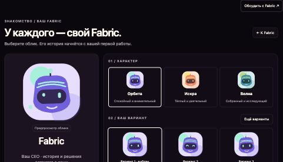
Характер → варианты → выбор → сохранение
SCR-36 · SCN-094Открыть экран ↗01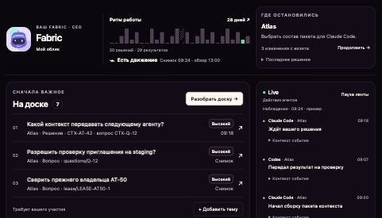
Профиль → внимание → проекты → активность
SCR-30 · SCN-094Открыть экран ↗02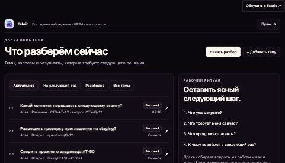
Разбор → тема → источник → итог → следующий раз
SCR-41 · SCN-041Открыть экран ↗03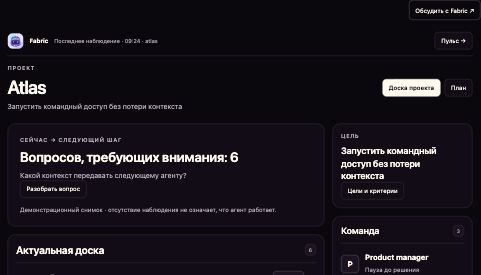
Цель → последнее решение → агенты → циклы
SCR-31 · SCN-090Открыть экран ↗04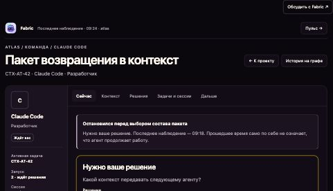
Задача → пакет → решения → сессии → план
SCR-39 · SCN-091Открыть экран ↗05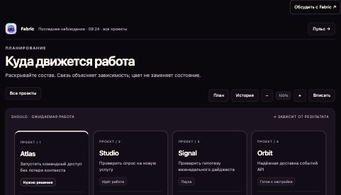
Портфель → цель → задачи → этапы
SCR-40 · SCN-053Открыть экран ↗06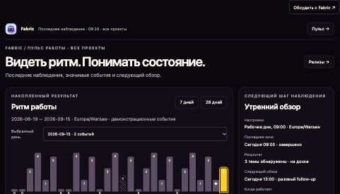
Наблюдения → день → источник → следующий цикл
SCR-42 · SCN-040Открыть экран ↗07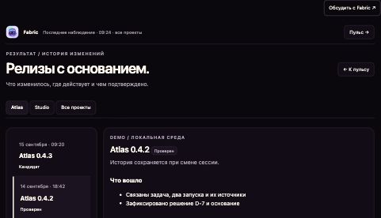
Изменения → публикация → проверка → дальнейший шаг
SCR-42 · SCN-094Открыть экран ↗08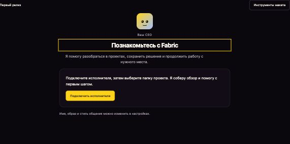
CEO → исполнитель → папка → обзор; новый вход R0
SCR-27Открыть экран ↗09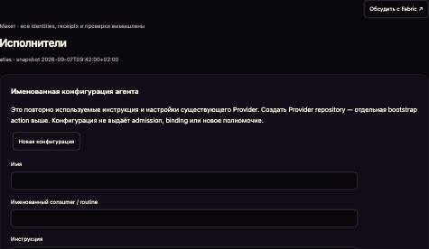
Инструкция → конфигурация → проверка → допуск
SCR-05Открыть экран ↗10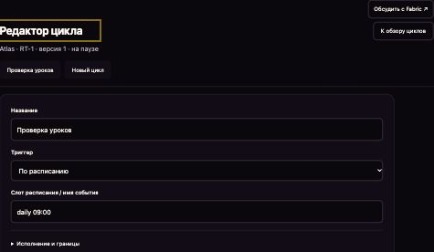
Расписание → границы → версия → запуск → результат
SCR-56Открыть экран ↗11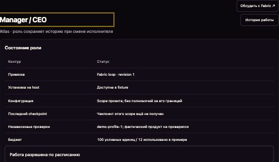
Текущая область → настройка → проверка → переключение
SCR-44Открыть экран ↗12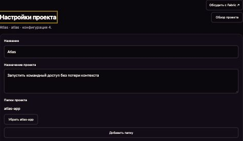
Изменения → сравнение → сохранение → история
SCR-12Открыть экран ↗13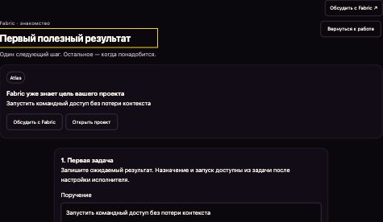
Проект → первая задача → учебная доска → возврат
SCR-31Открыть экран ↗14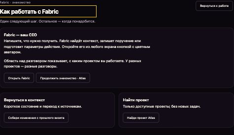
Примеры → чат → результат → все возможности
SCR-44Открыть экран ↗Для каждого экрана: данные прочитаны, чтение, пусто, отказ доступа, ошибка, последний известный снимок, конфликт записи. Переключатель «Состояние» над макетом воспроизводит эти ветки.
Доска дополнительно показывает открытые, отложенные и разобранные темы; агент — ожидание решения и разные исторические пакеты. Изменения живут только в текущем примере.
Знакомство / ваш Fabric
Выберите облик. Его история начнётся с вашей первой работы.
Ваш CEO · история и решения остаются с вами
Облик не меняет роль и полномочия01 / характер
02 / ваш вариант
Fabric / пульс работы · все проекты
Последние наблюдения, значимые события и следующий обзор.
Накопленный результат
Запись event-27-0 · AT-208 · принятый результат. Результат принят после сверки исходной задачи и сохранённых источников. Демонстрационная запись.
К проекту →Запись event-27-1 · AT-209 · решение. Решение сохранено оператором с основанием: контекст должен переживать смену сессии. Демонстрационная запись.
К проекту →В наборе за 28 дней: 20 дней с событиями, 20 решений и 29 принятых результатов. Уникальный ID учитывается один раз. Не считаются heartbeat, токены, чтение и фоновые тики. На 2 сентября нет покрытия — непрерывная серия за весь период неизвестна. Дни отдыха не создают штраф.
Последние наблюдения
Ждёт ответа · вопрос CTX-Q-12
Агент сообщил в 09:18 · host наблюдал процесс в 09:24Результат передан на проверку
Последнее событие 09:07 · успешность задачи требует проверкиТекущее состояние неизвестно
Последний сигнал вчера · тишина не доказывает остановкуЭто ручные события демонстрации. Фоновые агенты и сетевые таймеры не запускаются.
Результат / история изменений
Что изменилось, где действует и чем подтверждено.
Demo / локальная среда
История сохраняется при смене сессии.
Сохранить контекст работы проекта при смене исполнителя.
Решение D-7 →Проверка возврата принята оператором в демонстрационном наборе. Проверка относится к этой среде и сборке.
Все записи здесь — пример. Публикация wiki и версия desktop не подставляются в историю проекта.
Уточнить состав следующего пакета
К доске проекта →Ваш CEO
Я помогу разобраться в проектах, сохранить решения и продолжить работу с нужного места.
Подключите исполнителя, затем выберите папку проекта. Я соберу обзор и помогу с первым шагом.
Fabric · знакомство
Один следующий шаг. Остальное — когда понадобится.
Запустить командный доступ без потери контекста
Открыть проектЗапишите ожидаемый результат. Назначение и запуск доступны из задачи после настройки исполнителя.
Это прогресс знакомства, а не оценка агента и не уровень доступа.
Настроить исполнителяВсе возможности FabricFabric · знакомство
Один следующий шаг. Остальное — когда понадобится.
Напишите, что нужно получить. Fabric найдёт контекст, запишет поручение или подготовит параметры действия. Откройте его из любого экрана кнопкой с цветным аватаром.
Область над разговором показывает, с каким проектом вы работаете. У разных проектов — разные разговоры.
Продолжить знакомство · AtlasКороткое состояние и переход к источникам.
Только доступные проекты; без новых задач.
Вопросы для оператора. Задачи агентов остаются у исполнителей.
Запись задачи в выбранный проект. Запуск требует готового исполнителя.
Черновик инструкции; доступ и проверка отдельно.
Черновик цикла на паузе до проверки расписания.
Общая форма инструментов, допусков и ограничений.
Открывается список циклов; выбираете конкретный и видите результат.
Точные параметры и подтверждение в общей форме
ОткрытьТочные параметры и подтверждение в общей форме
ОткрытьТочные параметры и подтверждение в общей форме
ОткрытьТочные параметры и подтверждение в общей форме
ОткрытьТочные параметры и подтверждение в общей форме
ОткрытьЧтение доступных данных
ОткрытьТочные параметры и подтверждение в общей форме
ОткрытьЧтение доступных данных
ОткрытьЧтение доступных данных
ОткрытьЧтение доступных данных
ОткрытьЧтение доступных данных
ОткрытьЧтение доступных данных
ОткрытьЧтение доступных данных
ОткрытьЧтение доступных данных
ОткрытьЧтение доступных данных
ОткрытьТочные параметры и подтверждение в общей форме
ОткрытьТочные параметры и подтверждение в общей форме
ОткрытьТочные параметры и подтверждение в общей форме
ОткрытьТочные параметры и подтверждение в общей форме
ОткрытьТочные параметры и подтверждение в общей форме
ОткрытьТочные параметры и подтверждение в общей форме
ОткрытьЧтение доступных данных
ОткрытьТочные параметры и подтверждение в общей форме
ОткрытьЧтение доступных данных
ОткрытьГолос → остановить → проверить расшифровку → отправить. При ошибке текст сохраняется. Исходная реплика, правки, проект и запись результата связаны в журнале.
В макете голос, ответы и сканирование демонстрационные; данные живут до перезагрузки. В продукте нужны durable journal, STT и подтверждённые adapters. Уровень знакомства не даёт новых прав. Секреты вводятся в настройках подключения.
Конфигурация FabricОблик и аватарКарта интерфейса
Выберите задачу оператора, изучите устройство экрана и откройте его макет.
Где я, что изменилось, что требует меня.
Один следующий шаг и понятный результат.
Детали, связи и история по запросу.
Найти обязательство, понять живую работу и перейти к нужному проекту.
Открыть макет →Пусто, чтение, ошибка, нет доступа, последний снимок и конфликт проверяются переключателем над макетом.
SCR-30 · SCR-01 · estateСовместимый адрес CEO-first: нет профиля → r0-setup; нет готового исполнителя → r0-provider; готовый CEO → r0-source. Без ручного имени, цели и review prerequisite.
Открыть макет →Пусто, чтение, ошибка, нет доступа, последний снимок и конфликт проверяются переключателем над макетом.
SCR-27 · SCR-02 · onboardingПродолжить работу по цели и видеть task, question, history и evidence вместе.
Открыть макет →Пусто, чтение, ошибка, нет доступа, последний снимок и конфликт проверяются переключателем над макетом.
SCR-31 · SCR-03 · projectДержать исходную цель, рабочие notes, blockers и исполнение в контексте одной Task.
Открыть макет →Пусто, чтение, ошибка, нет доступа, последний снимок и конфликт проверяются переключателем над макетом.
SCR-32 · task-newДержать исходную цель, рабочие notes, blockers и исполнение в контексте одной Task.
Открыть макет →Пусто, чтение, ошибка, нет доступа, последний снимок и конфликт проверяются переключателем над макетом.
SCR-32 · launchДержать исходную цель, рабочие notes, blockers и исполнение в контексте одной Task.
Открыть макет →Пусто, чтение, ошибка, нет доступа, последний снимок и конфликт проверяются переключателем над макетом.
SCR-32 · taskПрочитать один admitted TaskRun и его проверяемый исход.
Открыть макет →Пусто, чтение, ошибка, нет доступа, последний снимок и конфликт проверяются переключателем над макетом.
SCR-09 · runРешить обязательство из одной ранжированной union, не смешивая её с kanban задач.
Открыть макет →Пусто, чтение, ошибка, нет доступа, последний снимок и конфликт проверяются переключателем над макетом.
SCR-41 · boardРешить обязательство из одной ранжированной union, не смешивая её с kanban задач.
Открыть макет →Пусто, чтение, ошибка, нет доступа, последний снимок и конфликт проверяются переключателем над макетом.
SCR-41 · questionПоказать точный эффект, основание и итог одной разрешающей операции.
Открыть макет →Пусто, чтение, ошибка, нет доступа, последний снимок и конфликт проверяются переключателем над макетом.
SCR-24 · authorityРазделить обязательства и события, которые можно просто прочитать.
Открыть макет →Пусто, чтение, ошибка, нет доступа, последний снимок и конфликт проверяются переключателем над макетом.
SCR-42 · inboxВыбрать исполнителя или manager binding и видеть границы каждого.
Открыть макет →Пусто, чтение, ошибка, нет доступа, последний снимок и конфликт проверяются переключателем над макетом.
SCR-04 · agentsСопоставить всех исполнителей, их работу и наблюдаемую историю.
Открыть макет →Пусто, чтение, ошибка, нет доступа, последний снимок и конфликт проверяются переключателем над макетом.
SCR-39 · estate-agentsСопоставить всех исполнителей, их работу и наблюдаемую историю.
Открыть макет →Пусто, чтение, ошибка, нет доступа, последний снимок и конфликт проверяются переключателем над макетом.
SCR-39 · agent-detailДать три адресуемые семантики: Agent DID, Project DID и Project SHOULD.
Открыть макет →Пусто, чтение, ошибка, нет доступа, последний снимок и конфликт проверяются переключателем над макетом.
SCR-40 · agent-historyДать три адресуемые семантики: Agent DID, Project DID и Project SHOULD.
Открыть макет →Пусто, чтение, ошибка, нет доступа, последний снимок и конфликт проверяются переключателем над макетом.
SCR-40 · project-historyДать три адресуемые семантики: Agent DID, Project DID и Project SHOULD.
Открыть макет →Пусто, чтение, ошибка, нет доступа, последний снимок и конфликт проверяются переключателем над макетом.
SCR-40 · project-planПроследить основание, автора и замену решения без выдуманной причинности.
Открыть макет →Пусто, чтение, ошибка, нет доступа, последний снимок и конфликт проверяются переключателем над макетом.
SCR-33 · decisionsПроверить что хранится, что будет передано агенту и что было передано раньше.
Открыть макет →Пусто, чтение, ошибка, нет доступа, последний снимок и конфликт проверяются переключателем над макетом.
SCR-34 · memoryПроверить что хранится, что будет передано агенту и что было передано раньше.
Открыть макет →Пусто, чтение, ошибка, нет доступа, последний снимок и конфликт проверяются переключателем над макетом.
SCR-34 · context-packПроверить что хранится, что будет передано агенту и что было передано раньше.
Открыть макет →Пусто, чтение, ошибка, нет доступа, последний снимок и конфликт проверяются переключателем над макетом.
SCR-34 · memory-lineageНовый intent: categories project/agents/harness/fabric/process; verified distinct count и evidence; decision(kind=decision,topic=process); resolution task + verification window. Refresh дубля не поднимает occurrence threshold.
Открыть макет →Пусто, чтение, ошибка, нет доступа, последний снимок и конфликт проверяются переключателем над макетом.
SCR-45 · retroОтдельный intent с local default-on и outbound activation gate; exact allowlisted payload+transport metadata/retention disclosure; pending suppression/inflight unknown/previous server receipt. Не обещать анонимность только удалением ID; re-enable не отправляет suppressed backlog.
Открыть макет →Пусто, чтение, ошибка, нет доступа, последний снимок и конфликт проверяются переключателем над макетом.
SCR-46 · feedbackПоказать authoritative journal, projection/cache, identity/operational, local preferences и blobs отдельно; export manifest coverage, import plan+digest+conflict; source cursor vs exported cursor. YAML mirror не backup.
Открыть макет →Пусто, чтение, ошибка, нет доступа, последний снимок и конфликт проверяются переключателем над макетом.
SCR-47 · syncВосстановить историю архива в новую Estate того же владельца и открыть её по выбору (ADR-0079).
Открыть макет →Пусто, чтение, ошибка, нет доступа, последний снимок и конфликт проверяются переключателем над макетом.
SCR-48 · restoreНайти provider exact revision, который удовлетворяет требуемой capability.
Открыть макет →Пусто, чтение, ошибка, нет доступа, последний снимок и конфликт проверяются переключателем над макетом.
SCR-05 · providersОтдельный manager intent с estate CEO/project PM, configured vs observed host, certified runner, budget, suspend/replace/handoff receipts. Existing SCN — смежные, новый lifecycle scenario нужен.
Открыть макет →Пусто, чтение, ошибка, нет доступа, последний снимок и конфликт проверяются переключателем над макетом.
SCR-44 · managerПоказать измеренные результаты и срок наблюдаемой истории estate.
Открыть макет →Пусто, чтение, ошибка, нет доступа, последний снимок и конфликт проверяются переключателем над макетом.
SCR-36 · profileПроверить совместимость отдельно от estate trust и project authority.
Открыть макет →Пусто, чтение, ошибка, нет доступа, последний снимок и конфликт проверяются переключателем над макетом.
SCR-16 · admissionСобрать воспроизводимый no-secret bootstrap для exact provider revision.
Открыть макет →Пусто, чтение, ошибка, нет доступа, последний снимок и конфликт проверяются переключателем над макетом.
SCR-15 · bootstrapПовторно использовать estate connection с явными project resources и grants.
Открыть макет →Пусто, чтение, ошибка, нет доступа, последний снимок и конфликт проверяются переключателем над макетом.
SCR-06 · connectionsПроверить владельца external identity и scope до связи с проектом.
Открыть макет →Пусто, чтение, ошибка, нет доступа, последний снимок и конфликт проверяются переключателем над макетом.
SCR-07 · connect-accountУправлять estate-owned credential bindings с точным разрешённым scope.
Открыть макет →Пусто, чтение, ошибка, нет доступа, последний снимок и конфликт проверяются переключателем над макетом.
SCR-21 · accessВыдать, проверить и отозвать один scoped external access binding.
Открыть макет →Пусто, чтение, ошибка, нет доступа, последний снимок и конфликт проверяются переключателем над макетом.
SCR-22 · access-detailПонять что настроено, что наблюдается и чем закончилось последнее окно.
Открыть макет →Пусто, чтение, ошибка, нет доступа, последний снимок и конфликт проверяются переключателем над макетом.
SCR-43 · cyclesСопоставить прошлые прогоны и повторяемую работу проекта.
Открыть макет →Пусто, чтение, ошибка, нет доступа, последний снимок и конфликт проверяются переключателем над макетом.
SCR-08 · scheduleОтделить source evidence от предложения изменить целевой проект.
Открыть макет →Пусто, чтение, ошибка, нет доступа, последний снимок и конфликт проверяются переключателем над макетом.
SCR-10 · reportsЗаписать одно решение целевого PM по предложению другого источника.
Открыть макет →Пусто, чтение, ошибка, нет доступа, последний снимок и конфликт проверяются переключателем над макетом.
SCR-11 · proposalИзменить purpose, repos и конфигурацию с явным будущим эффектом.
Открыть макет →Пусто, чтение, ошибка, нет доступа, последний снимок и конфликт проверяются переключателем над макетом.
SCR-12 · project-settingsДать участнику только адресованную ему очередь и разрешённые виды.
Открыть макет →Пусто, чтение, ошибка, нет доступа, последний снимок и конфликт проверяются переключателем над макетом.
SCR-13 · role-workspaceПринять явный team scope либо разрешить адресованное взаимодействие.
Открыть макет →Пусто, чтение, ошибка, нет доступа, последний снимок и конфликт проверяются переключателем над макетом.
SCR-14 · membershipПринять явный team scope либо разрешить адресованное взаимодействие.
Открыть макет →Пусто, чтение, ошибка, нет доступа, последний снимок и конфликт проверяются переключателем над макетом.
SCR-14 · inviteОпубликовать безопасную раскладку admitted views с каноническим порядком.
Открыть макет →Пусто, чтение, ошибка, нет доступа, последний снимок и конфликт проверяются переключателем над макетом.
SCR-17 · workspace-editorПоказать компактные host-owned widgets и их источники.
Открыть макет →Пусто, чтение, ошибка, нет доступа, последний снимок и конфликт проверяются переключателем над макетом.
SCR-26 · workspaceСохранить файл рядом с работающим агентом без потери позднего ввода.
Открыть макет →Пусто, чтение, ошибка, нет доступа, последний снимок и конфликт проверяются переключателем над макетом.
SCR-28 · editorРаботать с реальным transport/PTY отдельно от контекста проекта.
Открыть макет →Пусто, чтение, ошибка, нет доступа, последний снимок и конфликт проверяются переключателем над макетом.
SCR-25 · SCR-23 · sessionПонять какие инструменты, агенты и полномочия реально доступны здесь.
Открыть макет →Пусто, чтение, ошибка, нет доступа, последний снимок и конфликт проверяются переключателем над макетом.
SCR-35 · harnessПоказать полный контракт инструмента и наблюдаемую историю его вызовов.
Открыть макет →Пусто, чтение, ошибка, нет доступа, последний снимок и конфликт проверяются переключателем над макетом.
SCR-38 · harness-toolНайти точную сущность среди доступных данных с честной полнотой результата.
Открыть макет →Пусто, чтение, ошибка, нет доступа, последний снимок и конфликт проверяются переключателем над макетом.
SCR-37 · searchДовести запрос до safe response с receipt или явной человеческой передачи.
Открыть макет →Пусто, чтение, ошибка, нет доступа, последний снимок и конфликт проверяются переключателем над макетом.
SCR-18 · supportПроследить incident→работа→проверки→release→наблюдаемое восстановление.
Открыть макет →Пусто, чтение, ошибка, нет доступа, последний снимок и конфликт проверяются переключателем над макетом.
SCR-19 · releaseПровести идею через источники, проверки, публикацию и измерение результата.
Открыть макет →Пусто, чтение, ошибка, нет доступа, последний снимок и конфликт проверяются переключателем над макетом.
SCR-20 · contentОбъяснить Fabric как проектную среду и честно показать текущую доступность.
Открыть макет →Пусто, чтение, ошибка, нет доступа, последний снимок и конфликт проверяются переключателем над макетом.
SCR-29 · landingРедактировать этапы, навыки и gates с новой неизменяемой версией и закреплением начатых прогонов.
Открыть макет →Пусто, чтение, ошибка, нет доступа, последний снимок и конфликт проверяются переключателем над макетом.
SCR-49 · pipelineОпределить критерии и автономность цели, связать задачу и отдельно принять результат.
Открыть макет →Пусто, чтение, ошибка, нет доступа, последний снимок и конфликт проверяются переключателем над макетом.
SCR-50 · goalsСопоставить квоту аккаунта, ёмкость автоматизаций, измеренные расходы и отдельное право Estate.
Открыть макет →Пусто, чтение, ошибка, нет доступа, последний снимок и конфликт проверяются переключателем над макетом.
SCR-51 · usageСохранить глобальные предпочтения, доверие Estate и сужающий проектный override.
Открыть макет →Пусто, чтение, ошибка, нет доступа, последний снимок и конфликт проверяются переключателем над макетом.
SCR-52 · estate-settingsСвязать личность, настроить маршруты и выключение событий с явным раскрытием.
Открыть макет →Пусто, чтение, ошибка, нет доступа, последний снимок и конфликт проверяются переключателем над макетом.
SCR-53 · notificationsРазрешить Proposal другого проекта одним решением PM с сохранённым источником и продолжением работы.
Открыть макет →Пусто, чтение, ошибка, нет доступа, последний снимок и конфликт проверяются переключателем над макетом.
SCR-11 · cross-project-proposalОпределить критерии и автономность цели, связать задачу и отдельно принять результат.
Открыть макет →Пусто, чтение, ошибка, нет доступа, последний снимок и конфликт проверяются переключателем над макетом.
SCR-50 · goalСохранить глобальные предпочтения, доверие Estate и сужающий проектный override.
Открыть макет →Пусто, чтение, ошибка, нет доступа, последний снимок и конфликт проверяются переключателем над макетом.
SCR-52 · SCR-76 · settingsПрочитать состояние источников и безопасный журнал; экспортировать проверяемый набор без секретов.
Открыть макет →Пусто, чтение, ошибка, нет доступа, последний снимок и конфликт проверяются переключателем над макетом.
SCR-54 · diagnosticsОтделить обратимое архивирование проекта от необратимого удаления данных.
Открыть макет →Пусто, чтение, ошибка, нет доступа, последний снимок и конфликт проверяются переключателем над макетом.
SCR-55 · archiveОпределить триггер, типизированный граф данных и ограничение полных прогонов.
Открыть макет →Пусто, чтение, ошибка, нет доступа, последний снимок и конфликт проверяются переключателем над макетом.
SCR-56 · routine-editorНаблюдать службы Claude Swap и agentgateway независимо от допуска агента.
Открыть макет →Пусто, чтение, ошибка, нет доступа, последний снимок и конфликт проверяются переключателем над макетом.
SCR-57 · service-terminalОткрывать адресованную цитату с видимым адресом, историей навигации и изоляцией.
Открыть макет →Пусто, чтение, ошибка, нет доступа, последний снимок и конфликт проверяются переключателем над макетом.
SCR-58 · internal-browserПоказать выбранное изображение или страницу PDF с происхождением и состоянием загрузчика.
Открыть макет →Пусто, чтение, ошибка, нет доступа, последний снимок и конфликт проверяются переключателем над макетом.
SCR-59 · media-previewСравнить точную сохранённую ревизию файла с текущим буфером.
Открыть макет →Пусто, чтение, ошибка, нет доступа, последний снимок и конфликт проверяются переключателем над макетом.
SCR-60 · file-diffСвязать идею, отдельное исследование и задачи с точным документом и его ревизией.
Открыть макет →Пусто, чтение, ошибка, нет доступа, последний снимок и конфликт проверяются переключателем над макетом.
SCR-61 · documentПрочитать завершённые и отменённые задачи; повторение создаёт новую связанную запись.
Открыть макет →Пусто, чтение, ошибка, нет доступа, последний снимок и конфликт проверяются переключателем над макетом.
SCR-31 · task-archiveАккаунты ИИ с явной областью действия и проверяемым результатом.
Открыть макет →Пусто, чтение, ошибка, нет доступа, последний снимок и конфликт проверяются переключателем над макетом.
SCR-62 · provider-accountsПродолжить разговор с другим аккаунтом с явной областью действия и проверяемым результатом.
Открыть макет →Пусто, чтение, ошибка, нет доступа, последний снимок и конфликт проверяются переключателем над макетом.
SCR-63 · account-switchКомпактный профиль и интерактивный ритм рядом с возвратом; независимые колонки доски/проектов и Live.
Открыть макет →Пусто, чтение, ошибка, нет доступа, последний снимок и конфликт проверяются переключателем над макетом.
SCR-30 · SCR-01 · launch-homeРешить обязательство из одной ранжированной union, не смешивая её с kanban задач.
Открыть макет →Пусто, чтение, ошибка, нет доступа, последний снимок и конфликт проверяются переключателем над макетом.
SCR-41 · launch-boardПродолжить работу по цели и видеть task, question, history и evidence вместе.
Открыть макет →Пусто, чтение, ошибка, нет доступа, последний снимок и конфликт проверяются переключателем над макетом.
SCR-31 · SCR-03 · launch-projectСопоставить всех исполнителей, их работу и наблюдаемую историю.
Открыть макет →Пусто, чтение, ошибка, нет доступа, последний снимок и конфликт проверяются переключателем над макетом.
SCR-39 · launch-agentДать три адресуемые семантики: Agent DID, Project DID и Project SHOULD.
Открыть макет →Пусто, чтение, ошибка, нет доступа, последний снимок и конфликт проверяются переключателем над макетом.
SCR-40 · launch-planНайти обязательство, понять живую работу и перейти к нужному проекту.
Открыть макет →Пусто, чтение, ошибка, нет доступа, последний снимок и конфликт проверяются переключателем над макетом.
SCR-30 · SCR-01 · launch-mapСгенерировать персональный цветной облик и сохранить его независимо от провайдера.
Открыть макет →Пусто, чтение, ошибка, нет доступа, последний снимок и конфликт проверяются переключателем над макетом.
SCR-36 · launch-personaОтличить свежесть наблюдения от результата и перейти к событиям дня.
Открыть макет →Пусто, чтение, ошибка, нет доступа, последний снимок и конфликт проверяются переключателем над макетом.
SCR-42 · launch-pulseПрочитать состав, среду и доказательство релиза без смешения публикации и проверки.
Открыть макет →Пусто, чтение, ошибка, нет доступа, последний снимок и конфликт проверяются переключателем над макетом.
SCR-42 · launch-releasesСовместимый адрес CEO-first: нет профиля → r0-setup; нет готового исполнителя → r0-provider; готовый CEO → r0-source. Без ручного имени, цели и review prerequisite.
Открыть макет →Пусто, чтение, ошибка, нет доступа, последний снимок и конфликт проверяются переключателем над макетом.
SCR-27 · launch-startЗнакомство на своём проекте
Открыть макет →Пусто, чтение, ошибка, нет доступа, последний снимок и конфликт проверяются переключателем над макетом.
SCR-31 · launch-guideFabric · руководство и примеры
Открыть макет →Пусто, чтение, ошибка, нет доступа, последний снимок и конфликт проверяются переключателем над макетом.
SCR-44 · launch-helpИзучить композицию всех экранов по задачам оператора, раскрыть критерии и перейти в макет.
Открыть макет →Пусто, чтение, ошибка, нет доступа, последний снимок и конфликт проверяются переключателем над макетом.
SCR-30 · launch-designПринять имя и цветной аватар по умолчанию или настроить их без обязательной косметической работы.
Открыть макет →Пусто, чтение, ошибка, нет доступа, последний снимок и конфликт проверяются переключателем над макетом.
SCR-36 · r0-setupВыбрать Claude Code или Codex и подтвердить установку, вход и возможности перед сканированием.
Открыть макет →Пусто, чтение, ошибка, нет доступа, последний снимок и конфликт проверяются переключателем над макетом.
SCR-05 · r0-providerВыбрать папку проекта или набор из общей папки; имя и контекст соберёт Fabric.
Открыть макет →Пусто, чтение, ошибка, нет доступа, последний снимок и конфликт проверяются переключателем над макетом.
SCR-27 · r0-sourceВыбрать несколько найденных источников, назначить главный и получить обзор одного проекта.
Открыть макет →Пусто, чтение, ошибка, нет доступа, последний снимок и конфликт проверяются переключателем над макетом.
SCR-27 · r0-discoveryУвидеть доску, проекты и работу агентов по всем проектам; перейти в точную сессию и быстро вернуться в контекст.
Открыть макет →Пусто, чтение, ошибка, нет доступа, последний снимок и конфликт проверяются переключателем над макетом.
SCR-30 · r0-homeПонять цель, актуальные вопросы и работу команды проекта; открыть точную сессию, обсудить задачу или уточнить обзор.
Открыть макет →Пусто, чтение, ошибка, нет доступа, последний снимок и конфликт проверяются переключателем над макетом.
SCR-31 · r0-projectОстановить исполнителя, проверить остановку и продолжить в прежней либо новой сессии выбранного провайдера.
Открыть макет →Пусто, чтение, ошибка, нет доступа, последний снимок и конфликт проверяются переключателем над макетом.
SCR-32 · r0-workОткрыть разговор по вопросу → принять структурированный итог → запустить задачу → разобрать результат в том же вопросе.
Открыть макет →Пусто, чтение, ошибка, нет доступа, последний снимок и конфликт проверяются переключателем над макетом.
SCR-41 · r0-boardОбсудить цель с Fabric; видеть записанный план и доступные действия без обязательной формы задачи.
Открыть макет →Пусто, чтение, ошибка, нет доступа, последний снимок и конфликт проверяются переключателем над макетом.
SCR-40 · r0-planИзменить образ и стиль Fabric, исполнителя, главный источник и границы связанных материалов.
Открыть макет →Пусто, чтение, ошибка, нет доступа, последний снимок и конфликт проверяются переключателем над макетом.
SCR-52 · r0-settingsИзучить весь первый релиз и перейти к конкретному экрану, состоянию и восстановлению.
Открыть макет →Пусто, чтение, ошибка, нет доступа, последний снимок и конфликт проверяются переключателем над макетом.
SCR-30 · r0-mapИзучить следующий полезный приём на своём проекте, пропустить урок или вернуться к нему.
Открыть макет →Пусто, чтение, ошибка, нет доступа, последний снимок и конфликт проверяются переключателем над макетом.
SCR-44 · r0-guideНайти прошлую работу, проверить источник и добавить его в разговор Fabric.
Открыть макет →Пусто, чтение, ошибка, нет доступа, последний снимок и конфликт проверяются переключателем над макетом.
SCR-34 · r0-memoryОдин разговор с Fabric с аватара на любой поверхности; сохраняет сказанное и честно показывает результат каждой отправки.
Открыть макет →Пусто, чтение, ошибка, нет доступа, последний снимок и конфликт проверяются переключателем над макетом.
SCR-64 · ceo-conversationЭкспорт и импорт личной истории разговоров одного человека; больше ничего.
Открыть макет →Пусто, чтение, ошибка, нет доступа, последний снимок и конфликт проверяются переключателем над макетом.
SCR-65 · private-historyЧто зарегистрированные на этом Mac агенты могут делать через Fabric, какие запросы ждут ответа и какие продукты подключены (ADR-0115).
Открыть макет →Пусто, чтение, ошибка, нет доступа, последний снимок и конфликт проверяются переключателем над макетом.
SCR-76 · agent-accessВсе MCP-серверы на этом Mac отдельно от агентов, по инвентарю Project Observatory.
Открыть макет →Пусто, чтение, ошибка, нет доступа, последний снимок и конфликт проверяются переключателем над макетом.
SCR-66 · mcp-serversОдин прогон как один граф через вложенные вызовы агентов — чтобы понять и отладить.
Открыть макет →Пусто, чтение, ошибка, нет доступа, последний снимок и конфликт проверяются переключателем над макетом.
SCR-67 · run-traceСкрипты Fabric, которые он отдаёт как инструменты, — проектные и общие.
Открыть макет →Пусто, чтение, ошибка, нет доступа, последний снимок и конфликт проверяются переключателем над макетом.
SCR-68 · fabric-toolsЧто оптимизатор предлагает для экономии токенов, на основе трасс, — принять или отклонить.
Открыть макет →Пусто, чтение, ошибка, нет доступа, последний снимок и конфликт проверяются переключателем над макетом.
SCR-69 · optimizerОдин раз познакомиться с Fabric: имя и облик, агенты на этом Mac, с чего начать.
Открыть макет →Пусто, чтение, ошибка, нет доступа, последний снимок и конфликт проверяются переключателем над макетом.
SCR-70 · first-runСделать проектом одну выбранную папку.
Открыть макет →Пусто, чтение, ошибка, нет доступа, последний снимок и конфликт проверяются переключателем над макетом.
SCR-71 · start-addОтметить репозитории, каждый станет проектом.
Открыть макет →Пусто, чтение, ошибка, нет доступа, последний снимок и конфликт проверяются переключателем над макетом.
SCR-72 · start-scanНачать проект в новой папке или как идею.
Открыть макет →Пусто, чтение, ошибка, нет доступа, последний снимок и конфликт проверяются переключателем над макетом.
SCR-73 · start-newВыбрать проект агента.
Открыть макет →Пусто, чтение, ошибка, нет доступа, последний снимок и конфликт проверяются переключателем над макетом.
SCR-74 · start-agentЗапланированная конвертация и сегодняшний ручной путь.
Открыть макет →Пусто, чтение, ошибка, нет доступа, последний снимок и конфликт проверяются переключателем над макетом.
SCR-75 · start-convertВаш CEO
Я помогу разобраться в проектах, сохранить решения и продолжить работу с нужного места.
Подключите исполнителя, затем выберите папку проекта. Я соберу обзор и помогу с первым шагом.
Fabric сохраняет проекты и решения. Базового исполнителя можно заменить в любой момент.
Выберите инструмент, которым Fabric будет выполнять работу.
Имитируется результат проверки; настоящий агент не запускается.
Выберите папку. Я изучу доступные материалы и покажу, что здесь происходит.
Описание, структура, инструкции проекта и состояние Git — только в выбранной папке. Без запуска команд из README, изменений файлов и отправки секретов.
Название берётся из папки. Предположения о цели можно исправить после обзора.
Для изучения проекта нужно подключить исполнителя.
ПодключитьСначала выберите папку
Папка ещё не выбрана.
Сейчас нет вопросов, требующих вашего решения.
Проекты ещё не добавлены.
Fabric соберёт контекст и поможет выбрать следующий шаг.
Fabric соберёт контекст и поможет выбрать следующий шаг.
Откройте вопрос. Fabric поможет разобраться и сохранить следующий шаг.
Вопросы появятся здесь, когда понадобится ваше участие.
Fabric собирает вопросы по заданному циклу. Запуск работы проходит отдельную проверку.
Fabric соберёт контекст и поможет выбрать следующий шаг.
Главное — кто выполняет работу и что ему разрешено.
Нужно проверить подключение
Выбрать или переподключитьИзучать выбранные источники и предлагать действия.
Первый запуск изменений, расширение доступа, внешняя публикация и неоднозначная цель требуют явного решения. Настройка другого исполнителя не расширяет права.
Проект ещё не выбран.
Добавить папкуОт знакомства с Fabric до возвращения в работу. Нажмите любой этап, чтобы проверить его в макете.
Знакомство → исполнитель
Fabric объясняет; человек подключает02Проверка → папка
Система проверяет; человек входит в аккаунт03Папки → главный и связанные
Человек выбирает границу чтения04Источники → обзор
CEO собирает факты; исполнитель читает05Инсайт → первая задача
CEO предлагает; человек выбирает цель06Задача → запуск
CEO раскладывает; исполнитель выполняет07Стоп → контекст → другой запуск
Система подтверждает; человек выбирает08Разговор → итог → задача
Человек решает; CEO сохраняет связь09Доска → агенты → продолжение
CEO показывает изменения и следующий шаг10Образ, стиль, исполнитель, полномочия
Человек задаёт границы12Поиск → источник → разговор
Система ограничивает доступ; CEO объясняет11Короткий пример → рабочий экран
Помощь раскрывается по потребностиИсторические и расширенные экраны сохранены в полном каталоге. Здесь — маршрут первого выпуска. Переходы демонстрационные: готовность настоящих агентов, файловые разрешения, остановка процессов и сохранение после перезапуска требуют нативной реализации.
Полный каталогКаждый следующий шаг помогает в вашем проекте.
Выберите исполнителя и папку. Fabric сам соберёт обзор.
ПопробоватьПримите полезный следующий шаг, затем запустите работу.
ПопробоватьОткройте «Где остановились»: изменения и следующий шаг уже рядом.
ПопробоватьРазберите вопрос на доске или отложите до следующего обзора.
ПопробоватьОстановите, дождитесь подтверждения, продолжите новой сессией.
ПопробоватьПишите или диктуйте; проект выбран над полем ввода.
ПопробоватьНайдите прошлую работу, проверьте источник и верните его в разговор.
Выберите запись: увидите её происхождение, контекст и связанную работу.
Состояния разговора, пока Fabric не отвечает. Каждое названо своими словами; ответ модели здесь не показан.
Ваши разговоры с Fabric между установками. Только ваши, без доступа и без незавершённой работы.
Агенты на этом Mac просят доступ к подключённому продукту через Fabric. Вы решаете один раз на запрос.
Fabric Inbox не подключён
Отклонённых запросов нет.
Инструменты, к которым подключаются агенты. Не агенты.
Будут видны только серверы самого Fabric. Рекомендуем установить Observatory, чтобы видеть все MCP-серверы на этом Mac.
Публикация статьи · 09:12 — 09:31 · 41 200 токенов
Агент не сообщил свои вызовы — эта часть показана одним узлом, а не пустым успехом.
Скрипты вместо повторяющейся работы агентов · проектные и общие
Пайплайны, которые его используют, помечаются заблокированными до исправления.
Экономия токенов на основе реальных прогонов
Отклонённый паттерн не предлагается снова без новых данных.
Знакомство · шаг 1 из 3
Fabric ведёт ваши проекты вместе с агентами, которыми вы уже пользуетесь. Имя и облик меняют только то, как он выглядит.
Выберите папку. Fabric прочитает её, покажет, что нашёл, и создаст проект только после подтверждения.
Fabric не создаёт второй проект для той же папки.
Каждый отмеченный репозиторий станет отдельным проектом. Сканирование только читает.
Ниже не вся папка — выберите папку поуже.
Название, зачем он нужен и где живёт.
Проект не создан. Выберите другое название или место.
Агент принадлежит проекту: работает с его исходниками и в его полномочиях.
Для агента, созданного вне Fabric. Путь спроектирован, но ещё не сделан.
Установите скилы: npx @passioncode-ai/passioncode@latest update — и попросите своего агента адаптировать проект.